Parametrix-Softwarehandbuch
Eine Veröffentlichung von Donatoni Macchine S.r.l.
Softwareversion: 4.14
Handbuchversion: 1.0
Datum:
- 1 VORBEMERKUNGEN
- 2 PROGRAMME AN DER MASCHINE
- 3 PARAMETRIX
- 3.1 BENUTZERPARAMETER
- 3.2 NEUE BEARBEITUNG
- 3.3 WERKZEUGBEDIENFELD
- 3.4 BEARBEITUNGSPARAMETER DER PLATTE
- 3.5 ZUGRIFF AUF MANUELLE STEUERUNG
- 3.6 LASERVERWALTUNG
- 3.7 FOTO ZUM ARBEITSBEREICH HINZUFÜGEN
- 3.8 PLATTENUMFANG
- 3.9 VERWALTUNG DER ARBEITSTISCHANZEIGE
- 3.10 ANZEIGE DER BEARBEITUNGSELEMENTE
- 3.11 WERKSTÜCKE ERSTELLEN
- 3.12 WERKSTÜCKLISTE
- 3.13 WERKSTÜCK BEARBEITEN
- 3.14 NESTING
- 3.15 INTERAKTION MIT WERKSTÜCKEN IM ARBEITSBEREICH
- 3.16 BEARBEITUNG SPEICHERN
- 3.17 BEARBEITUNG LADEN
- 3.18 INFORMATIONEN
- 3.19 MASCHINE AUF SCHNITT
- 3.20 SCHNITTREIHENFOLGE DER WERKSTÜCKE VERWALTEN
- 3.21 OPTIMIERUNG UND VERWALTUNG DER SCHNITTE
- 3.22 BOOK MATCH (OPTIONAL)
- 3.23 WERKSTÜCK ENTLADEN (OPTIONAL)
- 3.24 WERKZEUG-ABRICHTZYKLUS (OPTIONAL)
- 3.25 ETIKETTIERUNG (OPTIONAL)
- 3.26 SCHNITTSIMULATION
- 4 PARAMETRIX SX
Allgemeines
Die in diesem Dokument enthaltenen Informationen gelten ausschließlich für die auf dem Titelblatt angegebenen Softwareversionen.
Möglicherweise sind nicht alle vom Produkt bereitgestellten Funktionen in dieser Dokumentation beschrieben; in diesen Fällen ist Donatoni Macchine nicht verpflichtet, diese Funktionen zu gewährleisten oder sie in zukünftigen Versionen beizubehalten.
Dieses Dokument wird als Anlage „Abschnitt B“, Softwareteil, zum Betriebs- und Wartungshandbuch der Maschine bereitgestellt.
Zweck des Handbuchs
Dieses Handbuch enthält die für eine gute Kenntnis des Programms Parametrix erforderlichen Bedienungsanweisungen sowie nützliche Informationen zur Behebung von Störungen.
Die ordnungsgemäße Funktion, die Lebensdauer und der wirtschaftliche Betrieb der Maschine hängen von der Einhaltung der in diesem Handbuch beschriebenen Hinweise ab.
Das Betriebs- und Wartungshandbuch der Maschine und dieses Softwarehandbuch müssen am Installationsort der Anlage stets an einem sicheren und leicht zugänglichen Ort verfügbar sein. Geht eines davon verloren, ist der Verantwortliche für den Präventions- und Schutzdienst zu kontaktieren.
Die Nichtbeachtung der in diesem Handbuch beschriebenen Hinweise, Nachlässigkeit sowie eine unsachgemäße und ungeeignete Verwendung der Maschine können zum Erlöschen der vom Hersteller gewährten Garantie führen; außerdem können die Vorteile, für die diese Maschine ausgelegt wurde, nicht erreicht werden.
DONATONI MACCHINE SRL steht in jedem Fall zur Verfügung, um einen schnellen und sorgfältigen technischen Kundendienst sowie alles bereitzustellen, was für einen optimalen Betrieb und die höchstmögliche Leistung der Maschine nützlich ist.
Der Hersteller behält sich das Recht vor, diese Veröffentlichung und die darin enthaltenen Daten nach eigenem Ermessen zu ändern, wenn dies zur technischen oder kommerziellen Verbesserung des Produkts erforderlich erscheint.
Aufbewahrung des Handbuchs
Dieses Softwarehandbuch muss während der gesamten Betriebslebensdauer der Maschine aufbewahrt werden, auch bei einer Weitergabe an Dritte.
Zur ordnungsgemäßen Aufbewahrung des Softwarehandbuchs wird Folgendes empfohlen:
Das Handbuch so verwenden, dass sein Inhalt weder ganz noch teilweise beschädigt wird; insbesondere wird empfohlen, das Handbuch während der Verwendung nicht unbeaufsichtigt liegen zu lassen und es unmittelbar nach der Einsichtnahme wieder am dafür vorgesehenen Ort aufzubewahren;
Teile des Handbuchs dürfen unter keinen Umständen entfernt, herausgerissen oder überschrieben werden;
Das Handbuch an Orten aufbewahren, die vor Feuchtigkeit, Wärme und anderen Umwelteinflüssen geschützt sind, die seine Unversehrtheit oder Haltbarkeit beeinträchtigen könnten;
Bei Verlust oder Beschädigung des gesamten oder eines Teils des Inhalts dieses Handbuchs ist beim Hersteller eine Kopie dieser Unterlagen anzufordern.
Beim Start der Anwendung wird, sofern die Achsen bereits referenziert wurden, der folgende Startbildschirm angezeigt:
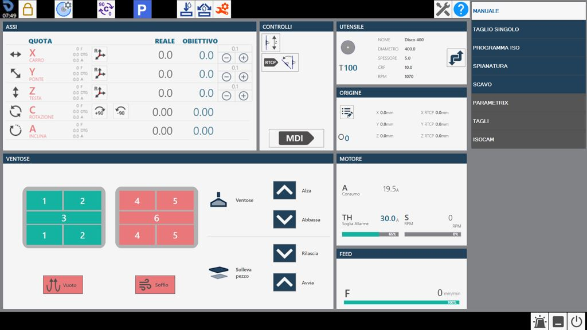
Obere Leiste
 | Parameter |
 | Werkzeugparameter |
 | Automatische Drehung 0/ 90 Grad |
Automatisches Parken  | |
 | Internes Wasser ein-/ausschalten |
 | Externes Wasser ein-/ausschalten |
 | Manueller Werkzeugwechsel |
 | Wartungen |
 | Hilfe |
Gemeinsame Oberflächenelemente
Die gemeinsamen Elemente der grafischen Benutzeroberfläche für die Funktionen sind:
Achsen
In dieser Oberfläche werden die Werte der Maschinenachsen angezeigt.
Beispiel des Oberflächenelements „Achsen“ mit Ursprung 0 und bereits referenzierten Achsen:

Beispiel des Oberflächenelements „Achsen“ mit Ursprung 0 und noch nicht referenzierten Achsen:

Im Folgenden werden die Elemente dieses Bereichs der gemeinsamen Benutzeroberfläche erläutert; als Referenz dienen die Elemente bei bereits referenzierten Achsen.
 | Istposition: gibt die Position der Achse relativ zum aktiven Ursprung an. |
 | Achse zurücksetzen |
 | Automatische Drehung _90 Grad Automatische Drehung -90 Grad |
Steuerungen
In diesem Bedienfeld werden einige Schaltflächen angeboten, deren Verhalten nachfolgend erläutert wird:

 | Interpolationsmodus Interpolierte Bewegung der C-Achse: Bei Betätigung des Befehls der C-Achse werden zusätzlich zur Drehung auch die Achsen X und Y bewegt, sodass die innere Schneide des Sägeblatts (oder die Werkzeugspitze) stillsteht. |
 | RTCP-Interpolation |
 | MDI |
Werkzeug
In diesem Oberflächenelement werden die wichtigsten Informationen zum in der Maschine montierten Werkzeug angezeigt.
Beispiel für ein in der Maschine montiertes Werkzeug: Scheibe

Beispiel für ein in der Maschine montiertes Werkzeug: Kernbohrer

Aktives Werkzeug Die Auswahl ist beschränkt auf:
|
Ursprung
Durch Anklicken des Feldes „Ursprung“ wird ein kleines numerisches Bildschirmtastenfeld angezeigt, über das der Bediener einen anderen Ursprung für die Bearbeitung auswählen kann.
Die Ursprungswerte können einschließlich 0 bis 19 betragen.
Beispiel mit Ursprung 0:

Beispiel mit Ursprung 10:

Erweiterte Ursprungseinstellungen
Durch Drücken der Optionsschaltfläche über dem Ursprung wird ein Bedienfeld mit einer zentralen Ansicht aller verfügbaren Ursprünge und der zugehörigen Werte geöffnet. Der aktive Ursprung kann durch Anklicken der entsprechenden Zeile geändert werden.

RTCP - Rotation Tool Center Point
Die RTCP-Funktion ermöglicht dem Bediener die Positionierung für einen Gehrungsschnitt, wobei die Werkzeughöhe unverändert bleibt, obwohl die Neigung während der Positionierung geändert wird. Die innere Schneide der Scheibe bleibt an derselben Position wie zu Beginn der Bewegung.
Funktionsablauf
Die Sollposition im Bereich für die Achse „A“ (Neigung) oder „C“ einstellen.
Durch Drücken der Schaltfläche RTCP wird die Neigungs- oder Drehfunktion gestartet, wobei der tiefste Punkt des Werkzeugs festgehalten wird.
Die Bewegung über den RTCP-Befehl ist nur zulässig, wenn der codierte Schlüssel in die dafür vorgesehene, an der Bedienkonsole befindliche Stelle eingesetzt ist.
Warten, bis die Maschine die eingestellte Position erreicht hat.
Motor
In diesem Bereich werden einige Statistiken zum Motor der Maschine angezeigt:

 | Umdrehungen pro Minute (RPM) |
 | Stromaufnahme (A) |
 | Alarmschwelle (A) |
Feed
Der Feed-Wert stellt die interpolierte Bewegung der Maschine dar.

Rechte Seitenleiste
Beim Start der Anwendung ist die Funktion MANUELL vorausgewählt.
Diese Seitenleiste enthält die folgenden verfügbaren Befehle und Programme/Funktionen:

Untere Leiste
Die untere Leiste zeigt Informations- und Fehlermeldungen sowie einige Schaltflächen für bestimmte Funktionen an.
Im Folgenden werden drei Beispiele für die untere Leiste gezeigt:
Ohne aktive Alarme.

Mit aktivierter allgemeiner Not-Aus-Meldung, dargestellt durch ein Symbol, einen Fehlercode (in diesem Fall PE0000), die zugehörige Beschreibung und die rechts blinkende Alarmschaltfläche.
Mit einer angezeigten Meldung, im Beispiel direkter JOG aktiv.

 | Alarme |
 | Software minimieren |
 | Maschine ausschalten |
Alarme
Die Alarmseite zeigt die aktiven Alarme/Meldungen des Systems an.
Wenn die Maschine keine aktiven Alarme hat, ist die Seite leer; andernfalls wird für jeden vorhandenen Fehler eine Zeile angezeigt.
Auf der folgenden Beispielseite zur Verwaltung und Anzeige der Alarme wird ein im System aktiver Alarm angezeigt:

Alarmschaltflächen
 | Aktualisieren |
 | Alarmhistorie |
 | Meldungen / Alarme |
 | Alarmgruppen |
Alarmanzeige - Standard
Die Standardanzeige eines angezeigten Alarms besteht aus:

 | Online-Link |
 | Alarmcode |
Beschreibung |
Alarmanzeige - Historie
Die tägliche Alarmhistorie enthält neben den bereits beschriebenen Elementen auch folgende Daten:
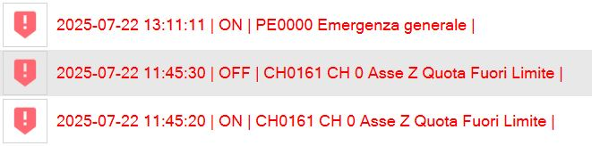
 | Zeitpunkt der Zustandsänderung |
Alarmzustand |
Alarmanzeige - Gruppen
Das Gruppierungssystem zeigt für jeden Alarm nur einen Eintrag an und vermeidet Duplikate.

Anzahl der Vorkommnisse | |
 | Zeitpunkt der ersten Aktivierung |
 | Zeitpunkt der letzten Aktivierung |
Die Saugnäpfe können manuell verwendet werden, um Werkstücke von einem Arbeitsbereich in einen anderen zu bewegen.
/0_0_Ventose_C.png)
Saugnapfschaltflächen
/Test_-_png_-_20.png) | Saugnäpfe aktivieren/deaktivieren |
/1.3.png) | SAUGNÄPFE: ANHEBEN - Saugnäpfe parken |
/2.3.png) | SAUGNÄPFE: ABSENKEN - Saugnäpfe bereitstellen |
/4.3.png) | WERKSTÜCK ANHEBEN: FREIGEBEN - Werkstück ablegen |
/3.3.png) | WERKSTÜCK ANHEBEN: STARTEN - Werkstück anheben |
/5.2_off.png) /5.2_on.png) | BLASLUFT - Blasluftsteuerung |
/6.2_off.png) /6.2_on.png) | VAKUUM - Vakuumpumpensteuerung |
Sicherheitsbedingungen
Beim Anheben besonders auf die aktiven Saugnäpfe achten und sicherstellen, dass die verwendeten Bereiche zum Anheben des zu bewegenden Werkstücks ausreichend sind. Zum Greifen des Werkstücks stets die größtmögliche verfügbare Vakuumfläche verwenden und prüfen, dass das Material keine Defekte oder Brüche aufweist, die Gefahren oder Störungen des Maschinenbetriebs verursachen könnten.
Nach dem Einschalten der Vakuumpumpe darf sie nur über die hierfür vorgesehenen automatischen Funktionen ausgeschaltet werden. Das Drücken der Reset-Taste oder des Not-Aus-Pilztasters hat keine Auswirkung auf die Vakuumpumpe; sie läuft weiter. Das Ausschalten der Pumpe kann über die entsprechende Schaltfläche auf der Seite „Zusätzliche Befehle“ erzwungen werden.
Bei automatischen Abläufen wird vor dem Anheben des Werkstücks der Vakuumzustand über einen entsprechenden Sensor geprüft: Wird kein ausreichender Vakuumwert erkannt, erscheint der Alarm „Vakuum fehlt“. Die Pumpe bleibt aktiv, bis der Vakuumschalter einen korrekten Wert erkennt oder bis sie auf der Seite „Zusätzliche Befehle“ deaktiviert wird.
In den neuen Versionen von Parametrix kann die Funktion „Einzelschnitt“ verwendet werden. Wird in der Liste der Eintrag „Einzelschnitt“ ausgewählt, wird eine Seite ähnlich der folgenden angezeigt.
Mit dem Einzelschnitt kann ein gerader (oder auch geneigter) Schnitt auf der Platte ausgeführt werden, beginnend an der aktuellen Maschinenposition und endend bei der vom Benutzer vorgegebenen Länge. Mit dieser Funktion können KEINE Bögen oder Kreise geschnitten werden.

Schaltflächen
 | Schaltflächen für parallele Schnitte |
 | Max |
 | Stop |
 | Durchgangsmodus ändern |
 | Speichern |
 | Öffnen |
Parameter
Je nach zu bearbeitendem Material können die Parameter unterschiedlich eingestellt und für spätere ähnliche Bearbeitungen gespeichert werden.
Gemeinsame Parameter
 | Länge des Einzelschnitts |
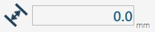 | Verschiebungsmaß |
Konfigurationsparameter für Bearbeitung mit mehreren Durchgängen
 | Eindringtiefe in das Material beim Vorwärtslauf |
 | Eindringtiefe in das Material beim Rückwärtslauf |
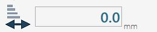 | Eindringtiefe in das Material für den letzten Durchgang |
 | Bearbeitungsgeschwindigkeit beim Vorwärtslauf |
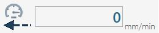 | Bearbeitungsgeschwindigkeit beim Rückwärtslauf |
 | Eintauchgeschwindigkeit in das Material |
 | Bearbeitungsgeschwindigkeit des letzten Durchgangs |
Konfigurationsparameter für Bearbeitung mit Volldurchgang
 | Eintauchgeschwindigkeit in das Material |
 | Bearbeitungsgeschwindigkeit beim Vorwärtslauf |
Ausführung der Bearbeitung
Um die Bearbeitung zu starten, zunächst die Maschine am gewünschten Startpunkt positionieren. Nach der korrekten Positionierung muss der Wert der Schnittlänge in das entsprechende Feld eingegeben werden.
Nun kann die Scheibe über die Befehle am Bedienfeld des Monitors eingeschaltet werden. Wenn alles bereit ist, den Vorgang durch Drücken der Taste „Zyklus starten“ starten.
Die Bearbeitung beginnt in der Richtung, in der die Maschine zum Zeitpunkt der Aktivierung des Schnitts ausgerichtet ist. Daher ist die Ausrichtung vor dem Start des Zyklus zu überprüfen.
Auf der Seite zur Programmierung von ISO-Dateien können Bearbeitungen über zuvor mit CAD-CAM-Programmen erstellte .pgm-Dateien verwaltet und gestartet werden.

Liste
Die anfangs leere ISO-Programmliste enthält alle ISO-Programme, die nacheinander ausgeführt werden können.

Schaltflächen
Für die Verwaltung der Liste stehen mehrere Schaltflächen zur Verfügung.
 | Datei öffnen |
 | Neue ISO-Liste |
 | Pause hinzufügen |
 | Ausgewähltes Element entfernen |
 | Liste leeren |
 | Ausgewähltes Element nach oben verschieben |
 | Ausgewähltes Element nach unten verschieben |
Im unteren Bereich befinden sich außerdem die beiden Schaltflächen für die Programmausführungsmodi:
  | Manuell / automatisch |
  | Einzeln / nächstes automatisch |
Datei öffnen
Durch Drücken dieser Schaltfläche wird ein Fenster „Datei öffnen“ angezeigt, wie in der folgenden Abbildung dargestellt:

Dieses Fenster ist in folgende Komponenten unterteilt:
Dateiliste
Enthält alle Dateien im Format .pgm im aktuell ausgewählten Verzeichnis.
Schaltflächen zwischen der Dateiliste und der Liste der ausgewählten Dateien
Liste ausgewählter Dateien
Anfangs leere Liste
Vorschau der ausgewählten Datei
Zeigt eine Vorschau einer in Dateien oder Ausgewählte Dateien ausgewählten .pgm-Datei an.
Untere Leiste und Suchfilter
Mittlere Schaltflächen zwischen der Liste „DATEIEN“ und der Liste „AUSGEWÄHLTE DATEIEN“
 | Element auswählen |
 | Element entfernen |
| Pause einfügen |
 | Ausgewähltes Element nach oben verschieben |
 | Ausgewähltes Element nach unten verschieben |
Nachfolgend wird der Inhalt der unteren Leiste beschrieben:
 | Suchfilter löschen |
 | Nach letzter Änderung sortieren |
 | Alphabetisch sortieren |
 | Dateien auf USB-Stick anzeigen |
 | ISO-Ordner anzeigen |
 | Inhalte anzeigen |
 | Datei entfernen |
 | Kopieren aktivieren/deaktivieren |
ISO-Programmcode
Der Code des ausgeführten ISO-Programms wird in diesem Fenster angezeigt:

Schaltflächen
In diesem Bereich des ISO-Programms stehen folgende Schaltflächen und Funktionen zur Verfügung.
 | Timer und Reset |
 | ISO-Vorschau |
 | Blocksuche |
 | Blocksuche nach Zeile Nach Eingabe einer Zahl in das Feld „Zeilennummer“ und Drücken der Schaltfläche „Gehe zu“ wird die Anzeige des ISO-Programmcodes zur gewünschten Zeile verschoben oder zur letzten verfügbaren Zeile, wenn die eingegebene Zahl die Anzahl der Zeilen im ausgewählten ISO-Programm überschreitet. Die Blocksuche kann beendet und die Schaltfläche „Blocksuche“ wieder eingeblendet werden, indem die Schaltfläche Schließen gedrückt wird: |
 | Dry-Run-Funktion (aktiviert / deaktiviert) Bei Verwendung dieser Funktion darf während der Bearbeitung KEIN Material eingesetzt werden, da die im ISO-Programm festgelegten Geschwindigkeiten bei der Ausführung nicht eingehalten werden; die numerische Steuerung führt das gesamte Programm mit der maximal erreichbaren Nenngeschwindigkeit bei interpolierten Achsen aus. |
 | ISO-Testfunktion (aktiviert / deaktiviert) |
 | Saugnapfbedienfeld |
 | Speichern |
Blocksuche
Bei der Ausführung von Dateien (.pgm) kann die Blocksuchfunktion nützlich sein, um das Werkzeug an der Stelle neu zu positionieren, an der die Maschine die Programmausführung unterbrochen hat, beispielsweise wenn das Werkzeug im Material blockiert wurde oder bei anderen Arten von Unterbrechungen.
Nach Drücken der Schaltfläche kann die Zeile gesucht werden, ab der die Bearbeitung fortgesetzt/gestartet werden soll, entweder über die Zeilennummer durch Drücken der Schaltfläche „Blocksuche nach Zeile“ oder durch Blättern in der Datei über die neben der Datei befindliche Bildlaufleiste und Auswahl der gewünschten Zeile.
Nach Auswahl des Programmpunkts, ab dem die Maschine die unterbrochene Arbeit fortsetzt, die Schaltfläche „Zyklus starten“ drücken; die Maschine berechnet alle Codezeilen in der .pgm-Datei neu, ohne eine Bewegung auszuführen. Die Geschwindigkeit dieses Vorgangs hängt von der Anzahl der Codezeilen ab, die ohne Bewegung erzeugt werden müssen.
Nach Abschluss der Neuberechnung aktiviert die Maschine automatisch eine Pause und fordert ein erneutes Drücken der Schaltfläche „Zyklus starten“ zum Starten der Bearbeitung an.
Vor dem Start des Zyklus wird empfohlen, die anfängliche Positionierung der Maschine zu berücksichtigen, bei der alle Achsen gleichzeitig beteiligt sind.
Dies ist erforderlich, da die Maschine von ihrer aktuellen Position auf dem kürzesten Weg zum Startpunkt der Bearbeitung fährt und sich dafür alle Achsen bewegen, um genau diesen Punkt zu erreichen.
Das bedeutet beispielsweise, dass die Z-Achse nicht erst am Startpunkt abgesenkt wird, sondern sich während des Wegs schrittweise absenkt. Dies könnte die Maschine oder das Material beschädigen, wenn die Maschine auf dem Weg mit Material kollidiert.
Je nach aktueller Situation kann daher die Bewegung einer oder mehrerer Achsen abgewählt werden, um Schäden zu vermeiden.
Dazu einfach die Schaltflächen über den einzelnen Achsen auswählen; sie wechseln von grün auf rot.
Die Schaltflächen werden automatisch wieder grün, sobald „Zyklus starten“ gedrückt wird.
ISO-Vorschau
Wenn die ISO-Vorschau aktiviert wurde, wird rechts neben dem Bereich „ISO-Programmcode“ ein weiterer Bereich ähnlich der folgenden Darstellung angezeigt:

Die ISO-Vorschau stellt folgende Schaltflächen zur Verfügung:
 | Perspektivansicht |
 | Orthogonale Ansicht zur XY-Ebene |
 | Orthogonale Ansicht zur ZX-Ebene |
 | Orthogonale Ansicht zur ZY-Ebene |
 | Vorschauanzeige aktivieren oder deaktivieren  |
Ausführung der Bearbeitung
Der Bediener kann eine Liste von PGM-Dateien erstellen, indem er die gewünschten Dateien über die entsprechende Ladefunktion öffnet.
Vor dem Start der Ausführung kann optional die Reihenfolge der Dateien in der Liste geändert und es können Pausen zwischen den einzelnen Ausführungen eingefügt werden. Diese Pausen ermöglichen eine flexiblere Prozessverwaltung und bei Bedarf eine sichere Unterbrechung.
Wenn der Ausführungsmodus auf „Automatisch“ eingestellt ist, steht außerdem die Funktion „ISO-Test“ zur Verfügung, mit der die Korrektheit des ausgewählten ISO-Programms vor der eigentlichen Ausführung überprüft werden kann.
Um den Ausführungszyklus zu starten, muss der Bediener die Schaltfläche „Zyklus starten“ drücken. Dadurch wird das erste geladene und in der Liste angezeigte ISO-Programm ausgeführt.
ISO-Programme können in zwei Betriebsarten ausgeführt werden:
Im Modus „Einzeln“ wird die Programmausführung nach jeder ISO-Datei unterbrochen. Zum Ausführen der nächsten Datei in der Liste muss die Schaltfläche „Zyklus starten“ erneut gedrückt werden.
Im Modus „Nächstes automatisch“ werden die ISO-Dateien ohne manuellen Eingriff nacheinander bis zum Ende der Liste ausgeführt.
In beiden Modi ermöglichen zwischen den Dateien eingefügte Pausen dem Bediener, den Zyklus jederzeit zu unterbrechen und damit die Ausführung kontinuierlich zu kontrollieren.
Der Planfräszyklus ermöglicht das Planfräsen des Arbeitstisches oder des Materials. Dieses Programm ist nützlich, wenn der Arbeitstisch durch Schnitte uneben geworden ist oder wenn die Materialstärke angeglichen werden soll.

Planfräsparameter
 | Versatzwert entlang der X-Achse |
 | Versatzwert entlang der Y-Achse |
Verschiebungsmaß | |
 | Tiefe |
 | Z-Schritt |
 | Schnittgeschwindigkeit beim Eintauchen |
 | Schnittgeschwindigkeit vorwärts |
 | Werkzeugursprung ändern |
Ausführung der Bearbeitung
Das Programm „PLANFRÄSEN“ benötigt keine Nullsetzung des Ursprungs X, Y und Z.
Zur Bestimmung der Startposition wird die Werkzeugposition zum Zeitpunkt des Zyklusstarts verwendet.
Nach Einstellung der verschiedenen Parameter mit eingeschalteter Scheibe auf die gewünschte maximale Tiefe des Arbeitstisches oder Materials fahren und den Zyklus mit der Schaltfläche ZYKLUS START starten.
Auf der Seite Taschenfräsen kann eine rechteckige Tasche mit Radien und ebenem Boden ausgeführt werden.
Für diese Bearbeitung ist ein geeigneter Fräser erforderlich, der an der Hauptspindel montiert werden muss.
Als Niveau für den Boden wird die „Arbeitstischhöhe“ verwendet.
Der Zyklus wird in mehreren Durchgängen mit helikalem Eintauchen in der Mitte und einer in den Parametern einstellbaren Durchgangsweite ausgeführt.

Parameter
 | X |
 | Y |
 | Radius R |
 | Taschentiefe |
 | Z-Schritt |
 | Durchgangsabstand |
 | Tiefenzustellung beim Eintauchen  |
 | Arbeitsgeschwindigkeit |
 | Absenkgeschwindigkeit |
 | Achsen X und Y nullsetzen  Die Position wird erfasst, indem die Fräsermitte auf den angegebenen Punkt positioniert wird. |
Ausführung der Bearbeitung
Die Maße X, Y und R eingeben, die die gewünschte Form der rechteckigen Tasche bestimmen.
Die Korrektheit der Werkzeugdaten, insbesondere des Durchmessers, überprüfen.
Die folgenden zwei Ausführungsarten stehen zur Verfügung.
Modus Taschenfräsen bis zur Arbeitstischhöhe
Für die korrekte Ausführung einer Tasche muss die Maschinenmitte am Ursprungspunkt der Tasche positioniert werden, wie in der Abbildung des vorherigen Kapitels gezeigt. Dadurch wird sichergestellt, dass die gesamte Bearbeitung korrekt relativ zum vorgesehenen Bereich ausgeführt wird.
Anschließend werden die charakteristischen Maße der auszuführenden Taschenform eingestellt.
Vor dem Start der Bearbeitung müssen die Daten des ausgewählten Werkzeugs unbedingt auf Richtigkeit geprüft werden, insbesondere der Durchmesser, da dieser die Genauigkeit und Qualität der Tasche unmittelbar beeinflusst.
Die „Arbeitstischhöhe“ muss bezogen auf das Bodenniveau der Tasche erfasst werden. Zur korrekten Bestimmung wird auf die Oberkante des Materials positioniert und die Z-Position auf null gesetzt. Von dort wird um die gewünschte Taschentiefe nach unten verfahren. Anschließend kann die Arbeitstischhöhe über die entsprechende Schaltfläche erfasst werden. Bei Werkzeugen vom Typ Fräser wird empfohlen, diesen Vorgang mit der Achse A auf 90_ auszuführen, um Ungenauigkeiten aufgrund der tatsächlichen Werkzeuglänge zu vermeiden.
Nach Festlegung der Arbeitstischhöhe werden die Achsen X und Y nullgesetzt. Dazu wird die entsprechende Reset-Taste gedrückt und die Fräsermitte mithilfe des Bezugssymbols exakt auf den in der Abbildung angegebenen Punkt positioniert. Bei Maschinen mit Zeigelaser kann der Nullpunkt in X und Y direkt anhand des Laserbezugs erfasst werden.
Die Taschentiefe hängt unmittelbar von der als Arbeitstischhöhe eingestellten Ebene und von der Position der Z-Achse beim Start des Zyklus über die Schaltfläche „Zyklus starten“ ab. Die Bearbeitung erfolgt mit einem helikalen Eintauchen in der Mitte bis zur im Parameter „Z-Schritt“ angegebenen Tiefe. Anschließend wird der Bereich mit einer konzentrischen Bewegung und dem in den Bearbeitungsparametern eingestellten Abstand ausgeräumt.
Die zum Erreichen der Startposition erforderlichen Maschinenbewegungen erfolgen auf der sogenannten „Freifahrhöhe“, die in den Werkzeugparametern festgelegt werden kann. Dadurch wird sichergestellt, dass das Werkzeug während der Positionierbewegungen nicht mit Hindernissen kollidiert.
Modus Positionierung über dem Werkstück und Nullsetzen des Ursprungswerts
In diesem Modus wird der Parameter „Taschentiefe“ eingestellt und anschließend verwendet.
Mit dieser Funktion können Mehrfachschnitte hinzugefügt werden.
Diese besondere Schnittart ermöglicht die Erstellung einer Reihe paralleler Schnitte innerhalb derselben Gruppe. Es können zwei Gruppen mit jeweils separat einstellbarer Richtung angelegt werden.
Die Benutzeroberfläche sieht ähnlich wie folgt aus:

Seitenleiste
Auswahl und Verwaltung der Schnittgruppen
 | Erste Schnittgruppe erstellen |
| Zweite Schnittgruppe erstellen |
 | Schnittverwaltung |
Schnittparameter
Für jede der beiden dem Bediener zur Verfügung stehenden Schnittgruppen können bis zu 100 gleichzeitige Schnittkonfigurationen mit den jeweiligen Parametern eingegeben werden.
 | Orthogonale Richtungen |
Höhe | Der Abstand zwischen zwei Schnitten. |
Anzahl | Anzahl der zu erstellenden parallelen Schnitte. |
 | Schnittposition |
 | Nächste/vorherige Schnitte anzeigen |
Schnitte verlängern
Der Bediener kann alle Schnitte der ersten und zweiten Gruppe am Anfang oder Ende um das eingestellte Maß verlängern.
 | Start |
 | End |
Schnitte löschen und aktualisieren
 | Schnitte löschen |
 | Schnitte aktualisieren |
Achse C
Der Maschinenkopf kann gedreht werden, um die Ausrichtung der Schnitte sowohl der ersten als auch der zweiten Gruppe einzustellen.
 | _90 drehen |
 | -90 drehen |
 | Maschinenkopfdrehung |
 | MDI |
Dicke
Der Bediener kann die Stärke der zu schneidenden Platte festlegen.
 | Manuelle Stärke |
 | Stärke mit Maschine |
Ausführung der Bearbeitung
Der Bediener kann beide Schnittgruppen durch Ändern der jeweiligen Parameter einstellen.
Sobald das gewünschte Ergebnis erreicht ist, kann die Schaltfläche „Zyklus starten“ gedrückt werden, um die Bearbeitung auszuführen.
Erste Schnittgruppe
In der ersten Schnittgruppe werden eine oder mehrere Schnittgruppen durch Ändern der Parameter Breite, Anzahl und Schnittposition sowie der Drehung der C-Achse definiert.
Bei der folgenden Bearbeitung wurden Schnitte parallel zur aktuellen Maschinenposition eingestellt.

Zweite Schnittgruppe
Wie bei der ersten Schnittgruppe können auch bei der zweiten die Parameter geändert werden, um das gewünschte Ergebnis zu erzielen.
Bei dieser Bearbeitung wurde die Schnittrichtung geändert und es wurden Schnitte orthogonal zu denen der ersten Gruppe ausgeführt.

Optimierung und Verwaltung der Schnitte
In diesem Bereich kann die Ausführungsreihenfolge der Schnitte geändert und festgelegt werden, ob ein Schnitt ausgeführt werden soll.

IsoCam ist die Software zur Ausführung von Konturbearbeitungen mit der Scheibe; sie ermöglicht das Zeichnen oder Importieren von Konturen, die Festlegung des Profils und die Anwendung verschiedener Bearbeitungsarten.
Die Verwaltung der Arbeitsprogrammierung ist in mehrere Phasen unterteilt, die in den folgenden Abschnitten beschrieben werden.
Wenn beim Öffnen des Programms Isocam keine zuvor erstellte Bearbeitung vorhanden ist, kann der Bediener eine neue Bearbeitung ab dem ersten Bearbeitungsschritt erstellen.
Ist hingegen eine zuvor erstellte Bearbeitung vorhanden, wird sie automatisch geladen und der Bediener erhält direkten Zugriff auf den letzten Bearbeitungsschritt:

Gemeinsame Elemente der verschiedenen Schritte
Die Benutzeroberfläche besteht aus mehreren Bereichen.
Menü: Schnellfunktionen.
Obere Leiste: spezifische Funktionen der aktiven Seite.
Mittlerer Bereich: enthält je nach Seite die Zeichnung oder den aktiven Bereich.
Seitenleiste: Fenster mit den zu ändernden Parametern.
Untere Leiste: Schaltflächen, die im Allgemeinen in mehreren Bereichen der Software gültig sind.
Die folgenden Elemente bleiben unabhängig von der aktuellen Prozessphase immer sichtbar.
Menü
Die Menüleiste befindet sich oben über allen anderen Elementen dieser Benutzeroberfläche.
Ansicht | Dem Bediener stehen einige Einstellungen zur Sichtbarkeit der Werkstücke im Arbeitsbereich zur Verfügung. |
Optionen | Es können Einstellungen zu den Farben geändert werden. |
Sprache | ISOCAM ist derzeit in folgenden Sprachen verfügbar:
|
Rechte Seitenleiste
 | Einstellungen |
 | Info |
 | Schrittverwaltung |
 | Schließen |
Einstellungen
Mit diesem Bedienfeld kann in den erweiterten Modus von IsoCam gewechselt, zur Basisversion zurückgekehrt und die Werte für den Rasterschritt in X und Y geändert werden.

Untere Leiste
 | Neue Bearbeitung |
 | Bearbeitung öffnen |
 | Bearbeitung speichern |
 | Bearbeitung ändern |
Querschnitt zeichnen (Schritt 1 von 4)
Die erste Programmierphase besteht im Zeichnen des zu bearbeitenden Querschnitts. Das Fenster bietet die typischen Befehle einer CAD-Software: Linie zeichnen, Bogen zeichnen, Snap, verschieben usw.
Das Grundkonzept der Software besteht darin, den Querschnitt als schnelle Skizze zu erstellen, die anschließend mit den entsprechenden Befehlen Element für Element bearbeitet wird. Die Möglichkeit zum Import von .dxf-Zeichnungen aus externen CAD-Systemen bleibt jederzeit verfügbar.

Obere Leiste

 | Befehl Linie zeichnen |
 | Befehl Bogen zeichnen |
 | Ausgewählte Segmente verschieben |
 | Spiegelbild |
 | Ausrunden |
 | Aktive Auswahl umkehren |
 | Ausgewählte Segmente löschen |
Rechte Seitenleiste
Linieneigenschaften
Wenn eine Linie im Arbeitsbereich ausgewählt wird, wird die rechte Seitenleiste aktualisiert und zeigt die Eigenschaften des ausgewählten Elements an, die vom Benutzer geändert werden können:
Länge | Gibt den linearen Abstand zwischen den beiden Endpunkten der ausgewählten Linie an, berechnet anhand der Koordinaten im Arbeitsbereich. |
Winkel | Gibt die Ausrichtung der Linie relativ zur horizontalen Achse des Bezugssystems an. |
Δx | Gibt die Änderung der X-Koordinate zwischen dem Start- und Endpunkt einer Linie oder eines Elements an, also den horizontal zurückgelegten Abstand relativ zur X-Achse des Bezugssystems. |
Δy | Gibt die Änderung der Y-Koordinate zwischen dem Start- und Endpunkt einer Linie oder eines Elements an, also den vertikal zurückgelegten Abstand relativ zur Y-Achse des Bezugssystems. |
 | Ausgewählte Linie verlängern/verkürzen |
 | Winkel annähern |
Verbundene Segmente skalieren | Ermöglicht eine proportionale Skalierung aller Elemente, die direkt oder indirekt mit der ausgewählten Linie verbunden sind. |
Bogeneigenschaften
Wenn ein Bogen im Arbeitsbereich ausgewählt wird, wird die rechte Seitenleiste aktualisiert und zeigt die Eigenschaften des ausgewählten Elements an, die vom Benutzer geändert werden können.
Der Bogen kann auf verschiedene Arten definiert werden: über Punkte, als Mittelpunkt, Radius und Bogen usw.
Die verschiedenen Eigenschaften werden in dem rechts eingeblendeten Fenster angezeigt.
Die Änderung bestimmter Eigenschaften kann auf unterschiedliche Weise erfüllt werden, beispielsweise durch Ändern des Radius oder des Start-/Endpunkts; zur Festlegung der Änderungsart dient die Option „Mittelpunkt fest“.
Radius | Gibt den konstanten Abstand zwischen dem Mittelpunkt einer Kreislinie oder eines Bogens und jedem Punkt auf deren Umfang an. |
Start-/Endwinkel | Winkel des Start- oder Endpunkts relativ zum Mittelpunkt. |
Tangente Vorh. / Nächste | Ändert den Start- oder Endwinkel so, dass der Bogen tangential zum vorherigen oder nächsten Element verläuft. |
Mittelpunkt fest | Ermöglicht festzulegen, welche Auswirkungen eine Änderung (Radius oder Winkel) hat. |
Auswahl verschieben / bewegen
Beim Aktivieren des Befehls „Verschieben“ erscheint das Fenster mit den Bewegungsparametern. Die Bewegung kann direkt durch Anklicken des Zeichenbereichs (auch bei aktiven Snaps) oder durch Eingabe der Parameter ausgeführt werden.
Das Verschieben muss mit der Schaltfläche „OK“ bestätigt werden.
 | Positionswähler |
 | Verschiebung |
Kopie verschieben | Wenn aktiviert, erstellt die Funktion eine Kopie des ausgewählten Elements und wendet die Verschiebung nur auf diese Kopie an; das Originalelement bleibt unverändert. |
Spiegeln
Nach Aktivierung des Befehls muss der Symmetriemittelpunkt durch Anklicken des Arbeitsbereichs oder Eingabe der Koordinaten festgelegt, die Spiegelrichtung ausgewählt und anschließend mit „OK“ bestätigt werden.
Symmetriemittelpunkt | Ermöglicht das Ändern der Koordinaten des Symmetriemittelpunkts, der für die horizontale oder vertikale Spiegelung des ausgewählten Elements verwendet wird. |
Zu invertierende Koordinaten | Gibt an, ob horizontal, vertikal oder in beide Richtungen gespiegelt werden soll. |
Kopie spiegeln | Wenn aktiviert, wird beim Spiegeln eine gespiegelte Kopie des ausgewählten Elements erstellt; das Original bleibt unverändert. |
Ausrunden
Eine erste Meldung in der rechten Spalte ermöglicht dem Bediener, den Ausrundungsradius einzustellen und die Auswahl zu bestätigen.

Eine zweite Meldung informiert den Bediener darüber, dass nun Ausrundungen zwischen zwei Linien eingefügt werden können; dies bleibt bis zur Deaktivierung der Funktion möglich.

Nachfolgend ein Beispiel für die Anwendung von Ausrundungen auf zwei benachbarte Linien sowie auf eine an einen Bogen angrenzende Linie:

Nach Anwendung der Ausrundungen:

Untere Leiste
 | DXF-Datei importieren |
 | DXF-Datei exportieren |
 | Änderung rückgängig machen |
 | Snap Start/Ende |
 | Ortho-Befehl |
 | Befehl Verbundene Segmente |
 | Zeichenraster |
 | Zoom rückgängig |
 | Zoombereich auswählen |
 | Zoom zurücksetzen |
Profilauswahl (Schritt 2 von 4)
Der zuvor gezeichnete Querschnitt muss auf ein geeignetes Profil angewendet werden.
Das Profil kann linear oder bogenförmig, in der X/Y-Ebene oder auch vertikal sein; je nach Auswahl werden anschließend bestimmte Bearbeitungsmodi aktiviert oder deaktiviert. Beispielsweise kann ein Bogenprofil in der XY-Ebene nur mit vertikaler Scheibe bearbeitet werden, während für ein Bogenprofil in der XZ- oder YZ-Ebene das Gegenteil gilt.
Der Profiltyp wird über die Schaltflächen links ausgewählt. Oben in der Mitte werden die Parameter zur geometrischen Beschreibung des Profils angezeigt und unten im mittleren Bereich die Vorschau des Ergebnisses.

Mittlerer Bereich
Lineares Profil | Richtung und Länge werden eingestellt. |
Bogenprofil | Definiert werden: Richtung, Arbeitsebene, Konkavität und die geometrischen Eigenschaften. |
Kreisprofil | Wird nur außen mit horizontaler Scheibe bearbeitet. |
Parameter lineares Profil

Profilausführung | Es stehen zwei Modi zur Verfügung: „Entlang X“ und „Entlang Y“. |
Linienlänge (L) | Horizontale Länge der Basis des geneigten Segments, gemessen zwischen dem Startpunkt und dem horizontal projizierten Endpunkt. |
Delta Z Endpunkt (H) | Höhe des geneigten Segments, also die Höhendifferenz zwischen Anfang und Ende des Segments. |
Parameter Bogenprofil

Profilausführung | Auswahl zwischen „Entlang X“ und „Entlang Y“. |
Bearbeitungsausrichtung | Auswahl zwischen „Ebene XZ“ und „Ebene XY“. |
Bearbeitungsart | Auswahl zwischen „Konkav“ und „Konvex“. |
Länge (L) | Horizontaler Abstand zwischen den beiden Endpunkten des Bogens, also die Sehne, die Anfang und Ende des Bogens verbindet. |
Ausgangsradius (R) | Abstand vom Mittelpunkt des Bogens zu einem Punkt auf dem Bogen. Bestimmt die Gesammtkrümmung des Bogens. |
Vertikale Ausdehnung (H) | Maximale Höhe des Bogens relativ zur Sehne L; entspricht dem vertikalen Abstand zwischen dem höchsten Punkt des Bogens und der Sehne. |
Winkelweite (A) | Mittelpunktswinkel, der vom Bogen aufgespannt wird, in Grad. |
Das Ändern eines der folgenden Werte: „Länge“, „Ausgangsradius“, „Vertikale Ausdehnung“ oder „Winkelweite“ führt zur automatischen Neuberechnung der übrigen Parameter.
Parameter Kreisprofil

Ausgangsradius (R) | Bestimmt den Radius vom Startpunkt aus. |
Schutzhaube | Diese Option gibt an, ob sich die C-Achse während der Bearbeitung dreht (Schutzhaube aktiv) oder bei C=0_ stehen bleibt (Schutzhaube nicht vorhanden). |
Untere Leiste
 | Arbeitsflächenansicht |
 | Zusätzliche Beleuchtung |
 | Verwaltung der Standardansichten |
Bearbeitungsparameter (Schritt 3 von 4)
Die Seite ist in Bereiche mit verschiedenen Datentypen unterteilt, die für die Bearbeitung eingestellt werden müssen.

Werkzeugparameter
Der Bediener kann die Werkzeugparameter festlegen:

Bei einem neuen Projekt werden die Daten automatisch anhand des physisch installierten Werkzeugs geladen; bei einer zuvor gespeicherten Bearbeitung entsprechen die Werkzeugdaten den bereits im vorherigen Programm gespeicherten Daten.
 | Werkzeugname |
 | Dicke |
 | Durchmesser |
 | CRF (Flanschdrehzentrum) |
 | Sicherheitshöhe |
 | RPM (Umdrehungen pro Minute) |
Bearbeitungsausrichtung

Lineares Profil
Bei linearen Profilen kann ausgewählt werden, ob die Bearbeitung mit vertikaler oder horizontaler Scheibe (von vorne oder von links) ausgeführt wird.
Vertikale Ausrichtung | Horizontale Ausrichtung |
 |  |
Bogenprofil
Bei gekrümmten Profilen ist die Ausrichtung durch den Profiltyp vorgegeben:
Bearbeitungsart | Vertikale Ausrichtung | Horizontale Ausrichtung |
Konkav |  |  |
Konvex |  |  |
Bearbeitungsart

Die Bearbeitung kann in zwei Modi ausgeführt werden:
 | Schnittmodus |
 | Glättmodus |
Konfiguration für Schnitte
Es werden zueinander parallele Schnitte ausgeführt, die dem ausgewählten Profil folgen; der Abstand zwischen den Schnitten wird aus einem Parameter übernommen.

Schritt | Gibt den Abstand zwischen der Position eines Schnitts und der des benachbarten Schnitts an. Ist er größer als die Scheibenstärke, bleibt Material zwischen den Durchgängen stehen. |
Verlängerung Anfang / Ende | Ermöglicht das Verlängern eines Schnitts am Anfang / Ende um den eingestellten Wert. |
Auto Plus | Das Aktivieren dieser Option bewirkt eine automatische Erhöhung des Verlängerungswerts auf Grundlage eines vom System festgelegten Werts. |
Aufmaß | Materialstärke, die über dem gewünschten Endprofil stehen bleiben soll. |
Schnittrichtung | Der Schnitt kann je nach ausgewählter Konfiguration von rechts nach links oder von links nach rechts ausgeführt werden. |
Glättkonfiguration
Die Bewegung erfolgt quer zur Profilrichtung und dient zur Oberflächenbearbeitung des Werkstücks.

Glättschritt | Gibt den Abstand zwischen einer Querbewegung und der nächsten entlang der Profilrichtung an. |
|---|
Geschwindigkeit und Schnittmodus
Je nach vorheriger Auswahl werden unterschiedliche Menüs zur Auswahl der für die Definition der Bearbeitung erforderlichen Parameter angezeigt.

Wenn als Bearbeitungsart die Konfiguration für Schnitte ausgewählt ist, stehen zwei Arten von Bearbeitungsparametern zur Verfügung:
 | Marmormodus |
 | Granitmodus |
Marmormodus
Allgemeine Parameter:
Schnitte in beide Richtungen (Schlichten) | Mit dieser Option kann eine Rücklaufgeschwindigkeit eingestellt werden, die von der Vorlaufgeschwindigkeit abweicht. |
Nie anheben (Schlichten) |
Geschwindigkeitsparameter:
Vorlauf | Ausführungsgeschwindigkeit des Durchgangs im Vorlauf. |
Rücklauf | Ausführungsgeschwindigkeit des Durchgangs im Rücklauf. |
Eindringen | Ausführungsgeschwindigkeit beim Eindringen des Durchgangs. |
Minimum | Wenn ein Wert ungleich null eingestellt wird, hängt die Schnittgeschwindigkeit von der Schnitttiefe ab. Bei Schnitten mit Tiefe null erfolgt die Bewegung mit Vorlaufgeschwindigkeit, bei maximaler Schnitttiefe für das ausgewählte Profil mit Mindestgeschwindigkeit. |
Granitmodus

Allgemeine Parameter:
Abtrag beim Schneiden | Materialmenge, die beim Vorwärtsdurchgang abgetragen wird. |
Abtrag im Rücklauf | Materialmenge, die beim Rückwärtsdurchgang abgetragen wird. |
Wenn als Bearbeitungsart die Glättkonfiguration ausgewählt ist, steht nur ein Bearbeitungsparameter zur Verfügung:
Geschwindigkeit - Bearbeitung | Legt die Geschwindigkeit fest, mit der die Glättbearbeitung ausgeführt wird. |
|---|
Bearbeitungsparameter (erweitert)
 | Bearbeitungsparameter (erweitert) |
Auf diesem Bildschirm können verschiedene Parameter überprüft und geändert werden, von denen viele in den Schritten 2 und 3 eingestellt wurden.

Der erste Vorgang besteht in der Auswahl des zu verwendenden Profiltyps:
 | Linear |
 | Bogenförmig |
Anschließend stehen folgende Parameter zur Verfügung:
Bearbeitung | Kann Schnitte oder Glättbearbeitung sein. |
Bearbeitungsausrichtung | Die Bearbeitung kann vertikal oder horizontal ausgeführt werden. |
Profilausführung entlang | Entlang X oder Y. |
Bearbeitungsdaten
Für das lineare Profil können folgende Parameter eingestellt werden:
Materialstärke | Definiert die Materialstärke (in mm). |
Profilneigung (mm) | Ermöglicht die Definition der Profilneigung durch Angabe des Höhenunterschieds zwischen End- und Startpunkt. |
Für das Bogenprofil stehen die in den vorherigen Schritten einstellbaren Parameter zur Verfügung.
Beide Profile haben außerdem folgende gemeinsame Bearbeitungsdaten:
Schritt | Fest in Y: hält den Abstand zwischen den Schnitten unabhängig vom darunterliegenden Profil konstant. |
Schnittrichtung | Auswahl zwischen „Y_“ und „Y-“. |
Vollständige Profilbearbeitung | Ermöglicht die Auswahl, ob das Profil vollständig bearbeitet werden soll. |
Schnitte an Winkeln erzwingen | Fügt Schnitte an Punkten mit Neigungsänderung hinzu. |
Überlappende entfernen | Wenn diese Option aktiviert ist und der Wert „Schritt“ größer als der Wert „Stärke“ ist, werden überlappende Schnitte entfernt. |
Optimierter Schritt (Färbung) % Überl. | Wenn der Wert „Schritt“ kleiner als der Wert „Stärke“ ist, wird der Schritt auf horizontalen Linien optimiert. |
Schnitt am Anfang ausführen | Ermöglicht die Auswahl, ob am Anfang des Profils ein Schnitt ausgeführt werden soll. Im danebenliegenden Feld kann die Tiefe dieses Schnitts eingestellt werden. |
Schnitt am Ende ausführen | Ermöglicht die Auswahl, ob am Ende des Profils ein Schnitt ausgeführt werden soll. Im danebenliegenden Feld kann die Tiefe dieses Schnitts eingestellt werden. |
Werkzeugdaten
Hier werden einige zuvor eingestellte Daten sowie weitere werkzeugspezifische Parameter angezeigt.

Werkzeugbeschreibung | Eine kurze Beschreibung des Werkzeugs. |
 | Werkzeugmagazin |
Positions-Nr. | Gibt die Positionsnummer des ausgewählten Werkzeugs im Magazin an. |
Korrektur-Nr. | Gibt die Nummer an, die den Namen des ausgewählten Werkzeugs identifiziert. |
Scheibenkernstärke (SA) | Stärke des zentralen tragenden Körpers der Scheibe. |
Zahnform | Der Bediener kann zwischen drei Zahnformen wählen:
|
 | Materialauswahl
|
Priorität | Es kann ein Prioritätswert festgelegt werden (zwingend positiv). |
Tiefe | Gibt die Schnitttiefe des Werkzeugs an. |
Bearbeitung (Schritt 4 von 4)
Auf Grundlage der vorherigen Auswahlen wird eine Vorschau der berechneten Schnitte angezeigt. Die Seite ist in mehrere Bereiche mit Befehlen zur Verwaltung von Änderungen unterteilt.

Nach Überprüfung der Schnitte oder Durchführung der gewünschten Änderungen die Schaltfläche „WEITER“ drücken, um die Seite zur Erzeugung des Schnittprogramms zu öffnen.
Menü
Im vierten Schritt wird im oberen Menü ein zusätzlicher Eintrag sichtbar:
Schnitte | Dieses Menü bietet dem Bediener einige Schnelleinstellungen für die erzeugten Schnitte. |
|---|
Obere Leiste
 | Schnitte erzeugen |
 | Schnittposition ändern |
 | Kopfschnitt zur Werkstücktrennung hinzufügen |
 | Endschnitt zur Werkstücktrennung hinzufügen |
 | Schnitt an Mausposition hinzufügen (Ins) |
 | Ausgewählten Schnitt löschen |
 | Schnitte vor dem ausgewählten Schnitt löschen |
 | Schnitte nach dem ausgewählten Schnitt löschen |
 | Schnittsimulation |
Mittlerer Bereich
Rechte Seitenleiste
Im vierten Schritt enthält diese Leiste folgende Informationen:
 | Fortlaufende Schnittnummer |
 | Allgemeine Daten |
 | Schnittdaten |
Untere Leiste
 | Schnittoptionen |
  | Schnitte verschieben/verlängern |
 | Shift |
Programmerstellung
Nach Abschluss der Vorbereitung im vierten Schritt kann auf die letzte Phase zugegriffen werden, die die Anzeige des erzielten Ergebnisses und die Erzeugung der ISO-Datei umfasst.
Im mittleren Bereich wird die 3D-Darstellung der erzeugten Bearbeitung unter Berücksichtigung des Bearbeitungsmodus angezeigt. Durch Anklicken des Bereichs kann die Ansicht gedreht und der Zoom gesteuert werden.

Grundverfahren
Schritt 1
Zum Starten die Schaltfläche „Neue Bearbeitung“ drücken. Sicherstellen, dass die Funktion „Verbundene Segmente“ aktiv ist, und anschließend den Befehl „Linie“ aktivieren. Durch eine Reihe von Klicks im Arbeitsbereich den gewünschten Querschnitt zeichnen. Nach Abschluss der Zeichnung erneut auf den Befehl „Linie“ klicken, um ihn zu deaktivieren. Anschließend jedes Element einzeln auswählen, um seine Parameter zu prüfen und bei Bedarf zu ändern.
Schritt 2
In diesem Schritt kann der Bediener einige grundlegende Einstellungen für die gewünschte Bearbeitungsart festlegen.
Schritt 3
Nun können Parameter zum Werkzeug sowie zu Art, Ausrichtung und Parametern der ausgewählten Bearbeitung eingestellt werden.
Im Bedienfeld „Bearbeitungsparameter (erweitert)“ kann außerdem eine Übersicht aller bis zu diesem Zeitpunkt eingestellten Parameter angezeigt werden.
Schritt 4
Für die aktuelle Bearbeitung wird automatisch eine Schnittliste erzeugt. Schnitte können je nach betrieblichen Anforderungen eingefügt, geändert und entfernt werden.
ISO-Erzeugung
Im letzten Bearbeitungsschritt kann der Bediener aus der erzeugten Bearbeitung eine ISO-Datei erstellen oder den Vorgang von vorn beginnen.
Das Programm Polieren ermöglicht das Polieren mit verschiedenen Bearbeitungsarten. Außerdem kann die Erfassungsmethode für die Geometrie der Platte gewählt werden: durch Erfassen der Punkte, die die Eckpunkte der Oberfläche bestimmen (von drei bis maximal sechs), oder mithilfe einer regelmäßigen Fläche (Rechteck) durch Eingabe der Nullposition und der Werte der beiden Seiten.
/1.1-20250731-080428.png)
Bearbeitungsmodus
Um diese Bearbeitung zu verwenden, muss zunächst einer der beiden verfügbaren Modi über die entsprechende Schaltfläche ausgewählt werden:
Die Modi „
Rechteckauswahl
“ und „
Freie Punktauswahl
“ schließen sich gegenseitig aus: Das Aktivieren eines Modus deaktiviert automatisch den anderen.
/1.1-20250303-082732.png) | In den Modus Freie Punktauswahl wechseln |
/1.2-20250303-082732.png) | In den Modus Rechteckauswahl wechseln |
Ein-/Ausfahrmodus
Mit den in der Abbildung gezeigten Schaltflächen kann das Ein- und Ausfahren des Werkzeugs zwischen dem progressiven und dem Standardmodus umgeschaltet werden.
Die Modi „
Progressiv
“ und „
Standard
“ schließen sich gegenseitig aus: Das Aktivieren eines Modus deaktiviert automatisch den anderen.
/2.1_b-20250731-113844.png) | In den progressiven Modus wechseln |
|---|---|
/2.2_b-20250731-113804.png) | In den Standardmodus wechseln |
Modus Freie Punktauswahl
Dieser Modus wird wie folgt angezeigt:
/c-20250731-120333.png)
Parameter
Punktposition
/3.1.1.1-20250731-111822.png) /3.1.1.2-20250731-111843.png) | Set (Einstellen) |
/3.1.1.3_b-20250731-112553.png) | Löschen |
Bearbeitungsarten
/3.1.2.1_b-20250731-114156.png) | Kontur |
/3.1.2.2_b-20250731-114218.png) | Horizontale Durchgänge |
/3.1.2.3_b-20250731-114252.png) | Vertikale Durchgänge |
/3.1.2.5_b-20250731-114340.png) | Gesamtwiederholung |
Bearbeitungsparameter
Wiederholungen | Jede Bearbeitungsart kann so oft wiederholt werden, wie in diesem Feld festgelegt. |
Ausgeführt | Zeigt die Anzahl der ausgeführten Wiederholungen an. |
Schritt [mm] | Gibt den Abstand zwischen einem Durchgang und dem nächsten an; er kann für jede Bearbeitungsart ausgewählt werden. |
Werkzeugparameter für das Polieren
/3.2.1_b-20250731-114407.png) | Arbeitsgeschwindigkeit |
/3.2.2_b-20250731-114433.png) | Absenkgeschwindigkeit |
/3.2.3_b-20250731-114455.png) | Werkzeugverschleiß |
Ausführung im Modus Freie Punktauswahl
Zwischen zwei Bearbeitungen führt die Maschine die Bewegungen aus, ohne auf die Sicherheitsposition anzuheben.
Der Bediener legt die Position von mindestens drei bis höchstens sechs verfügbaren Punkten fest, indem er die Maschine manuell bewegt und die entsprechenden Speicherbefehle verwendet. Nach Abschluss der Punktdefinition werden die Bearbeitungsparameter für jede gewünschte Polierart konfiguriert. Gleichzeitig werden auch die spezifischen Parameter des für das Polieren zu verwendenden Werkzeugs eingestellt.
Zu jedem Zeitpunkt vor dem Start des Polierzyklus kann der Bediener den Ein- und Ausfahrmodus des Werkzeugs ändern, indem er eine der beiden verfügbaren Optionen auswählt.
Nach Abschluss der Konfiguration muss die Achse A der Maschine auf 90_ geneigt und die Scheibendrehung gestartet werden. Anschließend kann der Bediener die programmierten Zyklen durch Drücken der Schaltfläche „Zyklus starten“ ausführen. Während der Ausführung kann der Fortschritt über die Spalte „Ausgeführt“ überwacht werden, die die abgeschlossenen Zyklen für jede ausgewählte Polierart anzeigt.
Modus Rechteckauswahl
Dieser Modus wird wie folgt angezeigt:
/d-20250731-120352.png)
Parameter
Rechteckposition
/4.1.1.2-20250731-115103.png) | Rechteckseiten |
|---|
Bearbeitungsparameter
Für die Bearbeitungen Kontur, horizontale/vertikale Durchgänge und Gesamtwiederholung siehe die Bearbeitungsparameter Freie Punktauswahl.
/3.1.2.4_b-20250731-114318.png) | Zickzack |
Werkzeugparameter für das Polieren
Für die Scheibenparameter Arbeitsgeschwindigkeit, Absenkgeschwindigkeit und Scheibenverschleiß siehe Scheibenparameter Freie Punktauswahl.
/3.2.4_b-20250731-114520.png) | Y-Achsenschritt für Zickzack |
Ausführung im Modus Rechteckauswahl
Zwischen zwei Bearbeitungen führt die Maschine die Bewegungen aus, ohne auf die Sicherheitsposition anzuheben.
Der Bediener legt die Position des zu polierenden Rechtecks fest, indem er die Maschine manuell bewegt und die entsprechenden Koordinatenwerte ändert. Nach Abschluss der Rechteckdefinition werden die Bearbeitungsparameter für jede gewünschte Polierart konfiguriert. Gleichzeitig werden auch die spezifischen Parameter des für das Polieren verwendeten Werkzeugs eingestellt.
Zu jedem Zeitpunkt vor dem Start des Polierzyklus kann der Bediener den Ein- und Ausfahrmodus des Werkzeugs ändern, indem er eine der beiden verfügbaren Optionen auswählt.
Nach Abschluss der Konfiguration muss die Achse A der Maschine auf 90_ geneigt und die Scheibendrehung gestartet werden. Anschließend kann der Bediener die programmierten Zyklen durch Drücken der Schaltfläche „Zyklus starten“ ausführen. Während der Ausführung kann der Fortschritt über die Spalte „Ausgeführt“ überwacht werden, die die abgeschlossenen Zyklen für jede ausgewählte Polierart anzeigt.
Auf der Seite ISO-Programmliste können mehrere zuvor mit CAD-CAM-Programmen erstellte Programme nacheinander ausgeführt werden, für Maschinen mit zwei Arbeitsbereichen, Twin-Maschinen oder Programme mit mehreren Bearbeitungen, die erstellt wurden, während die Maschine bereits in Betrieb ist.

Obere Leiste
In der oberen Leiste werden Informationen zur Überwachung des Fortschritts der Liste angezeigt.

  | ISO-Programmliste aktivieren/deaktivieren |
  | Ausführungsstatus der Liste |
   | Fortschrittsleiste der Liste |
Fortschrittsleiste der Liste
Diese Fortschrittsleiste liefert Informationen zum Ausführungsstatus des laufenden ISO-Programms und gibt zugleich einen Überblick über das nächste Programm in der Liste sowie über das bereits abgeschlossene Programm, das in den Entladevorgang übergegangen ist.

Im vorherigen Bild ist noch kein Programm in der Entladephase sichtbar, da die Ausführung der Liste noch nicht gestartet wurde und noch kein Werkstück bearbeitet wurde. Wenn dagegen nur eine ISO-Datei in der Liste vorhanden ist oder die Bearbeitung gestartet wurde und alle anderen Dateien bereits ausgeführt wurden, bleibt der Bereich Nächstes leer.
Während der Ausführung wird der Programmfortschritt in Echtzeit angezeigt, wie nachfolgend dargestellt.

Seitenmenü
Auf der rechten Seite des Saugnapfbedienfelds befinden sich einige Schaltflächen zur Verwaltung der einzelnen Dateien in der Programmliste.
 | Nächstes Programm ausführen |
 | Ausgewähltes Element nach oben verschieben |
 | Ausgewähltes Element nach unten verschieben |
 | Ausgewähltes Element löschen |
 | Saugnapfbedienfeld |
Saugnapfbedienfeld
Die Saugnäpfe können manuell verwendet werden, um Werkstücke von einem Arbeitsbereich in einen anderen zu bewegen.

Saugnapfschaltflächen
 | Saugnäpfe aktivieren/deaktivieren |
 | SAUGNÄPFE: ANHEBEN - Saugnäpfe parken |
 | SAUGNÄPFE: ABSENKEN - Saugnäpfe bereitstellen |
 | WERKSTÜCK ANHEBEN: FREIGEBEN - Werkstück ablegen |
 | WERKSTÜCK ANHEBEN: STARTEN - Werkstück anheben |
  | BLASLUFT - Blasluftsteuerung |
  | VAKUUM - Vakuumpumpensteuerung |
Sicherheitsbedingungen
Beim Anheben besonders auf die aktiven Saugnäpfe achten und sicherstellen, dass die verwendeten Bereiche zum Anheben des zu bewegenden Werkstücks ausreichend sind. Zum Greifen des Werkstücks stets die größtmögliche verfügbare Vakuumfläche verwenden und prüfen, dass das Material keine Defekte oder Brüche aufweist, die Gefahren oder Störungen des Maschinenbetriebs verursachen könnten.
Nach dem Einschalten der Vakuumpumpe darf sie nur über die hierfür vorgesehenen automatischen Funktionen ausgeschaltet werden. Das Drücken der Reset-Taste oder des Not-Aus-Pilztasters hat keine Auswirkung auf die Vakuumpumpe; sie läuft weiter. Das Ausschalten der Pumpe kann über die entsprechende Schaltfläche auf der Seite „Zusätzliche Befehle“ erzwungen werden.
Bei automatischen Abläufen wird vor dem Anheben des Werkstücks der Vakuumzustand über einen entsprechenden Sensor geprüft: Wird kein ausreichender Vakuumwert erkannt, erscheint der Alarm „Vakuum fehlt“. Die Pumpe bleibt aktiv, bis der Vakuumschalter einen korrekten Wert erkennt oder bis sie auf der Seite „Zusätzliche Befehle“ deaktiviert wird.
Ein Ausfall der Stromversorgung der Vakuumpumpe führt zu einem schnellen Verlust des Vakuums und damit zum Herabfallen des mit den Saugnäpfen angehobenen Materials.
Untere Leiste
Im unteren Bereich der Leiste werden einige Funktionen zur Ausführung der ISO-Programmliste sowie zur Überwachung von Werkzeug und Platte angezeigt.

Ausführung der Liste verwalten
Im unteren Bereich befinden sich außerdem die beiden Schaltflächen für die Programmausführungsmodi:
  | Manuell / automatisch |
  | Einzeln / nächstes automatisch |
Platte und Werkzeug überwachen
In der Mitte und rechts in der unteren Leiste kann der Bediener regelmäßige Kontrollen des Werkzeugdurchmessers konfigurieren, indem Prüfungen in festgelegten Intervallen auf Grundlage der Anzahl ausgeführter Zyklen eingestellt werden.

 | Anzahl der Zyklen zwischen den Scheibenantastungen |
|---|---|
 | Anzahl der Zyklen bis zur nächsten Antastung |
 | Werkzeugdurchmesser |
 | Plattenstärke |
Ausführung der ISO-Programmliste
Wenn die ISO-Programmliste deaktiviert ist, erscheint der Schalter oben rechts im Bedienfeld ausgeschaltet; die Funktion kann durch einfaches Anklicken dieser Schaltfläche aktiviert werden.
Die ISO-Programmliste wird automatisch erweitert, wenn in Parametrix ISO-Dateien erzeugt werden. Der Bediener kann Elemente in der Liste dennoch nach Bedarf neu anordnen oder entfernen.
Vor der Ausführung der Liste kann der Bediener die Anzahl der Zyklen festlegen, die zwischen den Werkzeugantastvorgängen ausgeführt werden.
Daraufhin wird die Anzahl der bis zur nächsten Antastung verbleibenden Zyklen aktualisiert und angezeigt.
Der Bediener startet die Ausführung der Programmliste durch Drücken der Schaltfläche „Zyklus starten“. Dadurch werden die Programme nacheinander ausgeführt; gleichzeitig werden das laufende, das als Nächstes auszuführende und das bereits abgeschlossene Programm angezeigt.
Wenn der Programmausführungsmodus auf Manuell und Einzeln eingestellt ist, wird die Ausführung der Liste am Ende des laufenden Programms unterbrochen, unmittelbar nachdem das nächste auszuführende Programm vorbereitet wurde.
In diesem Fall kann der Bediener die Schaltfläche Nächstes drücken, sobald er dies für zweckmäßig hält, und anschließend die Ausführung durch erneutes Drücken der Schaltfläche „Zyklus starten“ fortsetzen.
Das System wurde entwickelt, um dem Bediener die Programmierung automatischer Schnitte zu erleichtern. Mit der Software ist Folgendes möglich:
Position der Platte im Arbeitsbereich der Maschine festlegen und den Materialumfang für die Bearbeitung erstellen
Werkstücke mithilfe parametrischer Formen erstellen
Mit anderen CAD-Systemen erstellte Formen importieren
Eine Liste der zu bearbeitenden Werkstücke erstellen
Die beste Position der Werkstücke auf der Platte ermitteln
Spezielle Schnittfunktionen einstellen
Die Schnittreihenfolge programmieren und die Maschinenbewegung erstellen
Die Ausführung der Schnitte am Bildschirm überwachen

Arbeitsbereich und Werkstückliste
Im Folgenden ist eine typische Darstellung des Parametrix-Arbeitsbereichs mit bereits gefüllter Liste der importierten Werkstücke und einem erfassten Bild der Platte dargestellt.

Liste der eingefügten Werkstücke
Wenn ein Werkstück erstellt wird, fügt das Programm es der Werkstückliste hinzu; von der Liste aus kann es in den Arbeitsbereich eingefügt werden. Außerdem können Änderungen am Werkstück vorgenommen und die Anzahl der für die Bearbeitung noch fehlenden Werkstücke kontrolliert werden.

Werkstückpositionierung
Parametrix ermöglicht das Positionieren von Werkstücken innerhalb des Arbeitsbereichs der Maschine, um die Schnittdatei zu erstellen.
Nach dem Erfassen der Platte, dem Erstellen des Umfangs und dem Erstellen der Werkstücke für die Bearbeitung müssen die Werkstücke in die Platte importiert werden. Über die Schaltfläche in der Werkstücktabelle wird das Werkstück in den Arbeitsbereich eingefügt. Es kann mit 1 oder mehreren Werkstücken gleichzeitig gearbeitet werden.
 | Wenn sich die Werkstücke nicht vollständig innerhalb der Platte befinden, erscheint in der oberen linken Ecke ein Achtungs-/Gefahrensymbol. |
|---|
Obere Leiste
Im oberen Bereich des Bildschirms, in der Mitte und links, sind nach dem Logo und der angezeigten Uhrzeit die folgenden Schaltflächen sichtbar:
Die obere Befehlsleiste wird durch einige Schaltflächen ergänzt, die nachfolgend erläutert werden:
 | Benutzerparameter |
 | Neue Bearbeitung |
Werkzeugparameter | |
 | Bedienfeld für die Bearbeitungsparameter der Platte |
Zugriff auf manuelle Steuerung | |
 | Laserverwaltung |
 | Foto zum Arbeitstisch hinzufügen |
 | Plattenumfang |
 | Verwaltung der Arbeitstischanzeige |
Anzeige der Bearbeitungselemente |
Seitenbereich
Über die Schaltflächen oben rechts kann der Bediener zwischen den Parametrix-Bildschirmen wechseln.

Jeder Bildschirm ist für einen bestimmten Aspekt der Bearbeitung einer Platte zuständig.
 | Werkstückpositionierung
|
 | Verwaltung der Schnittreihenfolge der Werkstücke |
 | Optimierung und Verwaltung der Schnitte
|
Unten rechts befinden sich die folgenden Schaltflächen, deren Funktionen später beschrieben werden.
 | Werkstück bearbeiten |
 | Standardwerkstücke aktivieren/deaktivieren |
 | Werkstück erstellen |
 | Nesting |
 | Werkstücke sortieren oder filtern |
 | Werkstückliste löschen |
 | Werkstück löschen |
Zusätzliche Werkstückeigenschaften bearbeiten |
Untere Leiste
Beim Öffnen der Funktion „Parametrix“ wird die untere Leiste wie nachfolgend dargestellt teilweise geändert:

Diese Leiste wird durch folgende Schaltflächen ergänzt:
 | Mehrfachauswahl |
 | Alles auswählen |
 | Werkstück entfernen |
Speichern | |
 | Laden |
 | Informationsbedienfeld |
 | Änderung rückgängig machen |
Maschine auf Schnitt | |
 | Werkstückdrehung |
 | Werkstücke bewegen |
 | Werkstücke magnetisieren |
 | Gehrungsschnitt |
 | Standardwerkstück bearbeiten |
Nach dem Drücken der Schaltfläche können verschiedene Fenster angezeigt werden.

Fenster
Es stehen 4 verschiedene Fenster zur Verfügung, die nachfolgend einzeln erläutert werden.
Benutzerwerte | Fenster zum Ändern einiger bearbeitungsbezogener Einstellungen. |
Statistik | Der Bediener kann die Statistiken der ausgeführten Bearbeitungen anzeigen. |
Layernamen | Fenster für Einstellungen zum Import von DXF-Dateien in Parametrix. |
Saugnäpfe | Parameter für die Verfahrgeschwindigkeit der Saugnäpfe. |
Untere Leiste
 | Parametrix schließen |
 | Parametrix neu starten |
 | Tastatur |
 | Kameraverbindung |
 | Fernwartung |
 | Technische Parameter |
 | Passworteingabe |
 | Zugriff auf die Webhilfe |
 | Änderungen nicht speichern |
Wartung aus Datei importieren
Auf der Seite der technischen Parameter und anschließend im Bereich „File Path 2“ wird im Wartungsbereich der folgende Bildschirm angezeigt:

Mit der folgenden Schaltfläche können .mnt-Dateien zur Durchführung der Wartung importiert werden.
Aus Datei importieren |
In diesem Fenster kann der Bediener einige bearbeitungsbezogene Parameter ändern.

Linker Bereich
Rückzug Innenschnitte | Mindestannäherungsabstand der Scheibe an das Werkstück bei Innenschnitten. |
Magnetabstand | Abstand zwischen zwei Werkstücken, bevor der Magnet aktiviert wird. |
Zustellung in den Arbeitstisch | Eindringtiefe des Werkzeugs in den Arbeitstisch. |
Zustellung in den Arbeitstisch - geneigt | Eindringtiefe des Werkzeugs in den Arbeitstisch. Nur für den isoparametrischen Modus. |
Offset Plattenverschiebung | Zusätzlicher Positionswert für die Move-Funktion. |
Maximaler Kernbohrerradius | Beim DXF-Import maximaler Radius, damit ein Kreis als Bohrung importiert wird. |
Überlappung Tropfrinne | Prozentuale Überlappung der Tropfrinne von 99% bis 0%. |
Geschwindigkeit Tropfrinne | Prozentsatz der Tropfrinnengeschwindigkeit im Verhältnis zur Geschwindigkeit normaler Schnitte. |
Eindringtiefe Bohrungen | Stellt die Eindringtiefe aller Bohrungen ein; für eine Durchgangsbohrung auf 0 einstellen. |
Eindringtiefe Innenschnitte | Stellt die Eindringtiefe aller Innenschnitte ein; für einen Durchgangsschnitt auf 0 einstellen. |
Abstand automatische Bohrungen | Gibt den Abstand zwischen zwei Bohrungen beim Einfügen mehrerer Bohrungen an. |
Anzahl Bohrungen | Anzahl der Bohrungen für Eckbohrungen. |
Vorgänge
Aktiver Vorgang | Ermöglicht das Erstellen eines benutzerdefinierten Vorgangs für Schnitte. |
 | Benutzerdefinierte Vorgänge |
Kamerabereich
Kamera verwenden | Aktiviert die Verwendung der Kamera; andernfalls wählt der Bediener das Bild aus einer Datei. |
Bereich Maschinenbefehle
 | Positionsprüfung aktivieren/deaktivieren |
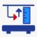 | Arbeitstischhöhe erfassen |
 | Achsen referenzieren |
Bereich Dateiname
Der Dateiname kann über das Textfeld unten links nach einem der folgenden Modi eingestellt werden.
Inkrementell | Erhöht den ISO-Dateinamen fortlaufend: 100, 101, 102… |
Benutzereingabe | Der Benutzer kann den Dateinamen eingeben. |
Fest | Fester ISO-Dateiname; den gewünschten Namen im danebenliegenden Feld eingeben. |
Fest _ Inkrementell | Fester ISO-Dateiname mit fortlaufender Nummer, z. B. File_101. |
Datum Uhrzeit | ISO-Dateiname im Format Datum/Uhrzeit, z. B. 20191206_080124. |
Dateiname | Die ISO-Datei übernimmt den Namen der importierten Datei (DXF oder CSV). |
Dateiname _ Inkrementell | Die ISO-Datei übernimmt den Namen der importierten Datei (DXF oder CSV) mit zusätzlichem fortlaufendem Wert. |
Bereich Farbe Name
Schwarz | Schwarzer Werkstücktext. |
Gelb | Gelber Werkstücktext. |
Fuchsia | Fuchsiafarbener Werkstücktext. |
Auto | Bestimmt automatisch die am besten geeignete Farbe für den Werkstücknamen. |
Bereich Farbe Book Match
Hintergrund | Steuert die Hintergrundfarbe der Book-Match-Funktion. |
Name | Steuert die Farbe des Namens in der Book-Match-Funktion. |
Umfang | Steuert die Farbe des Umfangs in der Book-Match-Funktion. |
Weitere Schaltflächen
Werkzeugantastung am Programmanfang | Wenn aktiviert, kann beim Wechsel auf den Bildschirm zur Schnittverwaltung ein Antastzyklus am Anfang des Schnittprogramms eingefügt werden. |
| Benutzerdefinierte Vorgänge |
Tutorial | Ermöglicht den Zugriff auf die Parametrix-Video-Tutorials. |
 | PGM aktivieren/deaktivieren |
Modus Alles entladen | Dieser Parameter hat zwei mögliche Werte: |
Tutorial
In diesem Fenster befinden sich Tutorials, die die Verwendung einiger Parametrix-Funktionen zeigen.
Um das gewünschte Video anzusehen, die entsprechende Zeile drücken.
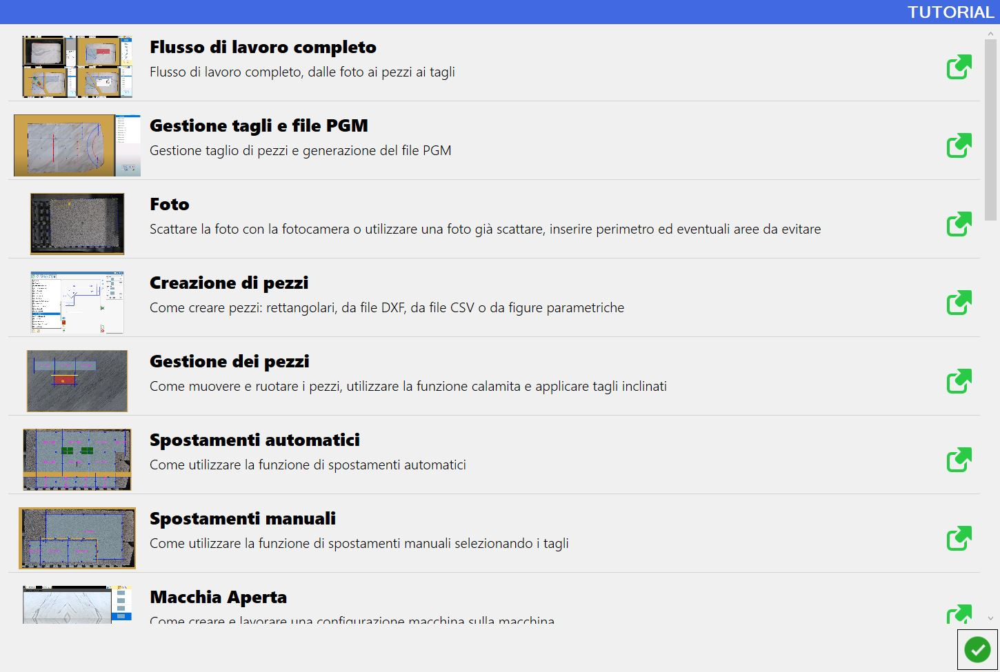
In diesem Fenster können die Statistiken der von der Maschine ausgeführten Bearbeitungen angezeigt werden.
Die Statistiken umfassen auch Bearbeitungen vom Typ Einzelschnitt, Taschenfräsen, Planfräsen und ISO-Ausführung.


Bildschirmstatistiken
Über die Schaltfläche oben links kann das Fenster mit den Bildschirmstatistiken geöffnet werden.
 | Bildschirmstatistiken |
Es öffnet sich ein Fenster mit einigen Informationen zu den auf der Maschine ausgeführten Bearbeitungen.
Jeder Listeneintrag entspricht den Daten einer einzelnen Bearbeitung.
Am unteren Seitenrand wird stattdessen eine Zusammenfassung der wichtigen Informationen aller angezeigten Bearbeitungen dargestellt.
Schaltflächen
 | Tagesstatistiken |
 | Monatsstatistiken |
 | Gesamtstatistiken |
 | Einstellbarer Zeitraum |
 | Anzuzeigende Spalten |
 | Statistiken speichern |
  | Plattenstatistiken anzeigen |
  | Werkstückstatistiken anzeigen |
Statistiken je Maschine (Optional)
In der Parametrix-Büroversion können mehrere Maschinen verbunden und die Statistiken jeder einzelnen angezeigt werden.
Im linken Bereich werden alle mit dem Gerät verbundenen Maschinen angezeigt.

Suche
Mit dieser Funktion können Statistiken innerhalb eines frei wählbaren Zeitraums gesucht werden.

Der Bediener kann Start- und Enddatum eingeben, um den interessierenden Zeitraum festzulegen.
Die Suchgenauigkeit kann mit den Schaltflächen festgelegt werden.
 | Suche nach Tag |
 | Suche nach Monat |
 | Suche nach Jahr |
Zum Exportieren der Statistiken die Schaltfläche verwenden:
| Statistiken speichern |
Timer
In diesem Bereich können die Timer der Maschine verwaltet werden.

Mit den folgenden Schaltflächen kann der Bediener einen Timer manuell steuern, der die verstrichene Zeit erfasst.
 | Timer starten |
Timer stoppen | |
 | Timer zurücksetzen |
Im linken Bereich werden dagegen Informationen zur Nutzungsdauer der Maschine und der montierten Werkzeuge angezeigt.
Zeit insgesamt | Gibt die gesamte Arbeitszeit der Maschine an. |
Scheibenzeit | Zeigt die Nutzungsdauer der Scheibe an. |
Schmierfett
Um die automatische Schmierung der Maschine zu starten, die folgende Schaltfläche verwenden:
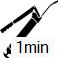 | Schmierzyklus starten |
Parametrix ermöglicht den Import von Dateien im Format „.dxf“, die mit entsprechenden externen CAD-Programmen erstellt wurden.

Schaltflächen
Layer einfärben | |
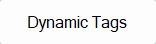 | Dynamic Tags |
Die Maschine kann Schnitte, Fräsbearbeitungen und Bohrungen anhand von Zeichnungen ausführen, die mit CAD-Software erstellt und im Format „.dxf“ gespeichert wurden. Bestimmte Bearbeitungen werden automatisch erkannt, um die Arbeit des Maschinenbedieners zu vereinfachen und zu beschleunigen.
Damit Parametrix diese Informationen interpretieren kann, müssen bei der Erstellung der Zeichnung bestimmte Konventionen eingehalten werden:
Alle gezeichneten Werkstücke müssen geschlossen und in Polylinien umgewandelt werden, sodass ein Polygon entsteht.
Wenn zur Identifizierung eine Werkstückmarkierung eingefügt werden soll, muss sie innerhalb des Polygons platziert werden.

Parametrix-Einstellungen zur Erkennung importierter Layer
Um das Fenster mit den Anpassungseinstellungen für den DXF-Import zu öffnen, die Schaltfläche Benutzerparameter in der oberen Parametrix-Leiste drücken.
Dort zum Bereich für die Verwaltung der Layer-Namen wechseln.
Für jeden aufgelisteten Funktionstyp kann der Benutzer einen Namen (entsprechend dem in der verwendeten CAD-Software festgelegten Layer-Namen) zuweisen und einige Parameter für Standardwerte bestimmter Bearbeitungen festlegen.
Funktion | Layer-Name |
Gehrungsschnitte | Gehrung |
Aufkantung | Aufkantung |
Rückwand | Rückwand |
Offset | Offset |
Schnitte unter dem Material | Unten |
Tropfrinne | Tropfrinne |
Fräsen | Fräsen |
Absenkung | Absenkung |
Bohren | Bohren |
Hinzugefügter Schnitt | Hinzugefügt |
Ankerbohrung | Keil |
Fase | Fase |
Unterfase | Unterfase |
Deaktivieren | Deaktivieren |
Entfernen | Entfernen |
Schaltflächen
Mit den Schaltflächen links neben jeder Bearbeitung kann Folgendes ausgeführt werden:
 | Informationsfenster |
 | Beispiel herunterladen |
Modus Gehrungsschnitt
Um einen Gehrungsschnitt automatisch einfügen zu können, müssen einige Konventionen beachtet werden:
Gehrungsschnitte können nur an den Seiten der Werkstücke eingefügt werden; gilt der Gehrungsschnitt nicht für den gesamten Abschnitt, kann dieser in mehrere Teile unterteilt werden.
Ein Gehrungsschnitt kann auf äußere Bögen angewendet werden (z. B. runder Tisch oder gekrümmte Abdeckungen, dort jedoch nur auf den äußeren Schnitt).
Bei inneren Bögen (z. B. gekrümmten Abdeckungen) wird der Schnitt in mehreren Bahnen ausgeführt; die Scheibe wird automatisch geneigt, um Kollisionen mit dem Material zu vermeiden.
Bei Verwendung von CAD-Systemen muss ein Layer mit folgenden Eigenschaften erstellt werden:
Layer-Name | Inclinato _ (gefolgt von der Zahl, die den gewünschten Neigungswinkel angibt). |
Beispiel | Inclinato45 oder Inclinato-45 |
Bei einem negativen Wert bezieht sich die Neigung auf einen vom Polygon weg divergierenden Schnitt; bei einem positiven Wert verläuft der Schnitt zum Inneren des Polygons hin konvergent.
Modus Aufkantung
Die Funktion Aufkantung ist eine Bearbeitung, mit der ein rechteckiges Werkstück erzeugt wird, dessen Länge der als Bezugsseite festgelegten Geraden entspricht.
Für das automatische Einfügen der Schnitte zur Erstellung einer Aufkantung muss ein Layer mit dem Namen „Alzata“ erstellt und anschließend die Höhe angegeben werden.
Layer-Name | Alzata _ (gefolgt von der Höhe der Aufkantung). |
Beispiel | Alzata100 |
Diese Automatik erstellt in Parametrix ein neues Werkstück, dessen Breite der Länge der Geraden entspricht, die die gewünschte Aufkantungsseite kennzeichnet. Die beiden miteinander zu verklebenden Seiten werden mit derselben Neigung geschnitten und sind für die Endbearbeitung mit Schleifstein vorbereitet.
Die diesen Seiten zugeordnete Neigung kann über den danebenliegenden Parameter eingestellt werden.
Grad | Ermöglicht die Einstellung der Neigung, mit der die geneigten Seiten der Bearbeitung importiert werden. |
Modus Rückwand
Die Funktion Rückwand/Aufkantung ist eine Bearbeitung, mit der ein rechteckiges Werkstück erzeugt wird, dessen Länge der als Bezugsseite festgelegten Geraden entspricht.
Analog dazu muss für das automatische Einfügen der Schnitte zur Erstellung einer Rückwand ein Layer mit dem Namen „Rivestimento“ erstellt und anschließend die Höhe angegeben werden.
Layer-Name | Rivestimento _ (gefolgt von der Höhe der Rückwand). |
Beispiel | Rivestimento150 |
Diese Automatik erstellt in Parametrix ein neues Werkstück, dessen Breite der Länge der Geraden entspricht, die die gewünschte Rückwandseite kennzeichnet, ohne Gehrungsschnitt und damit für eine rechtwinklige Kantenbearbeitung vorbereitet.
Offset-Modus
Die Offset-Funktion ist sehr nützlich, wenn gegenüber den Abmessungen des fertigen Werkstücks zusätzliches Material stehen bleiben soll. Durch Zeichnen von Geraden auf den gewünschten Seiten werden die diesen Seiten zugeordneten Funktionen automatisch in die richtige Richtung verschoben.
Um das gewünschte Aufmaß automatisch einzufügen, muss ein Layer mit dem Namen „Offset“ erstellt und alle Geraden für die Seiten eingezeichnet werden, auf die die Einstellung automatisch angewendet werden soll.
Layer-Name | Offset _ (gefolgt von der Zahl, die das Offsetmaß angibt). |
Beispiel | Offset3 |
Modus Unterschnitt
Die Funktion Unterschnitt ist nur verfügbar, wenn die mechanische Option installiert ist, die einen Schnitt unterhalb der sichtbaren Plattenoberfläche ermöglicht.
Um einen Unterschnitt automatisch einzufügen, muss ein Layer mit dem Namen „Sotto“ erstellt und eine Gerade eingezeichnet werden, die den Schnitt darstellt.
Layer-Name | Unten |
Beispiel | Unten |
Die Länge des resultierenden Schnitts hängt auch vom in Parametrix eingestellten Scheibendurchmesser und der Materialdicke ab.
Modus Tropfrinne
Mit der Tropfrinnenfunktion kann ein Schnitt eingefügt werden, dessen Breite größer als die Scheibendicke und dessen Tiefe kleiner als die Materialdicke ist.
Um eine Tropfrinne automatisch einzufügen, muss ein Layer mit dem Namen „Gocciola“ erstellt und eine Gerade oder ein Bogen eingezeichnet werden, der die Mitte der Breite darstellt.
Layer-Name | Gocciola _ (gefolgt von der Zahl, die die Breite der Tropfrinne angibt). |
Beispiel | Gocciola10 |
Auf diese Weise wird die Tiefe der Tropfrinne durch den entsprechenden Parameter festgelegt.
Taschenfräsen | Tiefe des der Tropfrinne zugeordneten Schnitts. Dieser Wert wird nicht berücksichtigt, wenn der Benutzer im DXF einen Wert festlegt. |
Die Schnitttiefe kann automatisch über den entsprechenden Parameter in Parametrix festgelegt werden oder vom Benutzer durch Eingabe des Zeichens „&“ gefolgt von der gewünschten Dicke angegeben werden.
Layer-Name | Gocciola _ (Breite der Tropfrinne) _ & _ (Tiefe der Tropfrinne). |
Beispiel | Gocciola10&5 |
Die Länge des resultierenden Schnitts hängt auch vom in Parametrix eingestellten Scheibendurchmesser und der Materialdicke ab.
Bei gekrümmten Tropfrinnen wird nur ein Schnitt mit der Scheibe außerhalb des Bogens ausgeführt.
Eventuell im Layer-Namen angegebene Parameter werden nicht berücksichtigt.
Modus Fräsen
Um eine automatische Fräsbearbeitung einzufügen, müssen einige Konventionen beachtet werden.
Wird eine Fräsgeometrie erstellt, die eine oder mehrere Seiten des äußeren Polygons betrifft, führt der Fräser die Bearbeitung außerhalb des gezeichneten Umfangs aus; dies gilt auch für eine einzelne Umfangsseite. Wenn die Bearbeitung das Fräsen des gesamten Umfangs vorsieht, werden vorhandene Scheibenschnitte entfernt.
Die Schnitttiefe kann durch Erstellen eines eigenen Layers definiert werden.
Layer-Name | Fresatura _ (gefolgt von der Zahl, die die Frästiefe angibt). |
Beispiel | Fresatura10 |
Wenn im Layer-Namen „Fresatura“ kein Tiefenwert angegeben ist, wird die Dicke der aktuellen Bearbeitung verwendet.
Eine weitere verfügbare Funktion ist das Einfügen einer offenen oder geschlossenen Polylinie, z. B. eines Kreises oder eines einzelnen aus einer linearen Polylinie bestehenden Pfads, um eine Form innerhalb des größeren Umfangs zu fräsen.
Modus Absenkung / bündig zur Oberseite
Die Funktion Absenkung / bündig zur Oberseite ermöglicht das Absenken eines Umfangs, typischerweise zum Einlassen von Elektrogeräten oder Spülbecken.
Um die gewünschte Absenkung automatisch einzufügen, muss ein Layer mit dem Namen „Ribasso“ erstellt werden.
Layer-Name | Ribasso _ (gefolgt von der Zahl, die die Breite der Absenkung angibt). |
Beispiel | Ribasso20 |
Auf diese Weise wird die Tiefe der Absenkung durch den entsprechenden Parameter festgelegt.
Taschenfräsen | Tiefe der Absenkung. Dieser Wert wird nicht berücksichtigt, wenn der Benutzer im DXF einen Wert festlegt. |
Die Tiefe der Absenkung kann automatisch über den entsprechenden Parameter in Parametrix festgelegt oder vom Benutzer durch Eingabe des Zeichens „&“ gefolgt von der gewünschten Dicke angegeben werden.
Layer-Name | Ribasso _ (Breite der Absenkung) _ & _ (Dicke der Absenkung). |
Beispiel | Ribasso20&3 |
Der Verrundungsradius zwischen den Umfangsseiten kann nicht vom Benutzer geändert werden, sondern wird durch den Fräserradius bestimmt.
Die Absenkung kann auf einem geschlossenen Pfad ausgeführt werden, der nicht mit den Werkstückseiten überlappt; in diesem Fall wird innerhalb des gezeichneten Umfangs gefräst.
Modus Bohren
Mit der Bohrfunktion kann Parametrix Bohrbearbeitungen zu Werkstücken hinzufügen.
Um eine Bohrbearbeitung automatisch einzufügen, muss ein Layer mit dem Namen „Foratura“ erstellt und an der gewünschten Bohrungsposition ein Kreis gezeichnet werden.
Layer-Name | Foratura _ (gefolgt von der Zahl, die die Bohrtiefe angibt). |
Beispiel | Foratura5 |
Wenn keine Tiefe angegeben wird, wird die Bohrung mit der aktuell von Parametrix verwendeten Materialdicke ausgeführt.
Im Basismodus entspricht der Kreisradius dem Radius des derzeit in Parametrix eingestellten Werkzeugs.
Modus Hinzugefügter Schnitt
Mit der Funktion Hinzugefügter Schnitt kann Parametrix einen Schnitt hinzufügen.
Um einen hinzugefügten Schnitt automatisch einzufügen, muss ein Layer mit dem Namen „Aggiunto“ erstellt und über der Linie, die die betreffende Seite darstellt, eine neue Linie gezeichnet werden.
Layer-Name | Aggiunto _ (gefolgt von der Zahl, die den Abstand angibt, in dem der Schnitt hinzugefügt wird). |
Beispiel | Aggiunto50 |
Der Schnitt wird abhängig vom Vorzeichen des Abstands innerhalb (wo Material vorhanden ist) oder außerhalb (wo kein Material vorhanden ist) des Werkstücks hinzugefügt:
Ist das Vorzeichen des Abstands positiv, wird der Schnitt außerhalb des Werkstücks hinzugefügt
Ist das Vorzeichen des Abstands dagegen negativ, wird der Schnitt innerhalb des Werkstücks hinzugefügt
Wird ein hinzugefügter Schnitt auf innere Schnitte, beispielsweise eines Ausschnitts, angewendet, wird der Schnitt innerhalb des Werkstücks dort hinzugefügt, wo kein Material vorhanden ist.
Modus Ankerbohrung
Mit der Funktion Ankerbohrung kann Parametrix Ankerbohrungsbearbeitungen zu Werkstücken hinzufügen.
Um eine Ankerbohrungsbearbeitung automatisch einzufügen, muss ein Layer mit dem Namen „Keil“ erstellt und an der gewünschten Position der Ankerbohrung ein Kreis gezeichnet werden.
Layer-Name | Keil _ (gefolgt von der Zahl, die die Tiefe der Ankerbohrung angibt). |
Beispiel | Keil5 |
Im Basismodus entspricht der Kreisradius dem Radius des derzeit in Parametrix eingestellten Werkzeugs.
Modus Fase
Mit der Fasenfunktion kann Parametrix Fasenbearbeitungen zu Werkstücken hinzufügen.
Um eine Fasenbearbeitung automatisch einzufügen, muss ein Layer mit dem Namen „Smusso“ erstellt und über der Linie, die die betreffende Seite darstellt, eine neue Linie gezeichnet werden.
Layer-Name | Smusso _ (Abstand entlang X-Achse) _ & _ (Abstand entlang Y-Achse) _ & _ (Neigungswinkel). |
Beispiel | Smusso10&10&45 |
Sind die drei Werte geometrisch nicht miteinander kompatibel, wird die Bearbeitung nicht angewendet.
Modus Unterfase
Mit der Unterfasenfunktion kann Parametrix Fasenbearbeitungen zu Werkstücken hinzufügen.
Um eine Unterfasenbearbeitung automatisch einzufügen, muss ein Layer mit dem Namen „Becco“ erstellt und über der Linie, die die betreffende Seite darstellt, eine neue Linie gezeichnet werden.
Layer-Name | Becco _ (Abstand entlang X-Achse) _ & _ (Abstand entlang Y-Achse) _ & _ (Neigungswinkel). |
Beispiel | Becco10&10&45 |
Sind die drei Werte geometrisch nicht miteinander kompatibel, wird die Bearbeitung nicht angewendet.
Modus Deaktivieren
Mit der Funktion Deaktivieren kann Parametrix Schnitte an Werkstücken deaktivieren.
Um die Funktion Deaktivieren automatisch einzufügen, muss ein Layer mit dem Namen „Disattiva“ erstellt und eine neue Linie über der Linie gezeichnet werden, die die zu deaktivierende Seite darstellt.
Layer-Name | Deaktivieren |
Beispiel | Deaktivieren |
Modus Entfernen
Mit der Funktion Entfernen kann Parametrix Schnitte von Werkstücken entfernen.
Um eine Entfernen-Bearbeitung automatisch einzufügen, muss ein Layer mit dem Namen „Rimuovi“ erstellt und eine neue Linie über der Linie gezeichnet werden, die die zu entfernende Seite darstellt.
Layer-Name | Entfernen |
Beispiel | Entfernen |
Modus Bohrung
Mit der Bohrfunktion kann Parametrix jeden Kreis erkennen, dessen Radius kleiner als der Parameter „Maximaler Kernbohrerradius“ ist und der sich innerhalb der Werkstückfläche befindet.
Bohrungen können frei in allen Layern eingefügt werden, die nicht als neutral definiert sind.
Eine weitere Option für die Verwendung des Kernbohrers ermöglicht das Entfernen einer Materialinsel, die nach den Scheibenschnitten noch verbunden ist. Damit Parametrix diese Option berücksichtigt, müssen ein oder mehrere Kreise gezeichnet werden, die die Seiten der mit der Scheibe geschnittenen Insel schneiden. Über den Parameter „Abstand automatische Bohrungen“ wird anschließend eine Reihe von Bohrungen automatisch anhand des nach dem Scheibenschnitt noch zu trennenden Materials positioniert.
Verwaltung neutraler Layer
Sollen in der DXF-Datei Zeichnungselemente erhalten bleiben, die nicht als Schnitte oder andere von Parametrix zu verwaltende Funktionen betrachtet werden sollen, können sie Layern zugewiesen werden, die als neutral erkannt werden.
Die Layer mit den Namen erstellen, die in den Feldern Neutrale Layer (1,2,3) auf der Seite „Layer-Namen“ der Parametrix-Benutzerparameter festgelegt sind. Dabei ist zu beachten, dass das Zeichen „*“ bewirkt, dass alle importierten Layer mit demselben Namen vor und nach dem Symbol „*“ beim Import nicht berücksichtigt werden.
Beispiele
Mit dieser Funktion können ein oder mehrere Schnitte von aus DXF erstellten Werkstücken eingefärbt werden.

Schaltflächen
 | Layer-Farbe ändern |
Verfahren
Um den Schnitten eines Werkstücks eine Farbe zuzuordnen, ist Folgendes erforderlich:
Einen Layer in der CAD-Software erstellen;
Ihm im entsprechenden Parametrix-Panel eine Farbe zuweisen;
Im Layer eine Linie (oder Kurve) über der Linie zeichnen, die den einzufärbenden Schnitt darstellt.
Nach dem Import des Werkstücks hat der Schnitt, über dem die Linie im Color Layer gezeichnet wurde, die in Parametrix eingestellte Farbe (nicht die im DXF eingestellte Farbe).
Die über dem einzufärbenden Schnitt gezeichnete Linie muss die Linie, die den Schnitt darstellt, vollständig überdecken.
Beispiel
In diesem Beispiel sollen zwei Werkstückschnitte eingefärbt werden. Der Layer „ColoreE“ wurde erstellt und über den einzufärbenden Linien wurden zusätzliche Linien hinzugefügt.

Wie im Parametrix-Arbeitsbereich zu sehen ist, nehmen die Schnitte die Farbe an, die dem Layer der importierten DXF-Datei zugeordnet wurde.

Mit dieser Funktion können den Layern der DXF-Dateien Konfigurationsparameter zugewiesen werden.

Parameter
Die Parameter sind:
Name | Dient zum Definieren und Erkennen des Layer-Namens. |
Entity Type | Definiert den Typ der anzuzeigenden Objekte. |
LineWeightMethod | Ermöglicht die Auswahl der Methode, mit der die Linienstärke ermittelt wird. |
LineWeight | Ermöglicht das Festlegen der Stärke der Linien, die zum Layer gehören. |
ColorMethod | Ermöglicht die Auswahl der Methode, mit der die Layer-Farbe ermittelt wird. |
Color | Ermöglicht das Festlegen der Farbe der zum Layer gehörenden Objekte. |
Schaltflächen
Mit den folgenden Schaltflächen kann eine Konfiguration hinzugefügt oder gelöscht werden:
 | Konfiguration erstellen |
 | Konfiguration löschen |
Beispiel
In diesem Beispiel sollen die Eigenschaften der auf dem Layer „Venature“ gezeichneten Elemente geändert werden.

Die Objekte werden entsprechend den im entsprechenden Fenster eingestellten Parametern importiert.

In diesem Bereich wird die Verfahrgeschwindigkeit des Werkstücks mit den Saugnäpfen eingestellt.

Parameter
XY-Geschwindigkeit | Bestimmt die Verfahrgeschwindigkeit des Werkstücks mit den Saugnäpfen. |
Z-Geschwindigkeit | Bestimmt die Verfahrgeschwindigkeit des Werkstücks mit den Saugnäpfen in Z. |
Drehgeschwindigkeit | Bestimmt die Drehgeschwindigkeit des Werkstücks mit den Saugnäpfen. |
XY-Geschwindigkeit beim Entladen | Bestimmt die Verfahrgeschwindigkeit des Werkstücks mit den Saugnäpfen während des Werkstückentladens oder Unterschnitts. |
Z-Geschwindigkeit beim Entladen | Bestimmt die Verfahrgeschwindigkeit des Werkstücks mit den Saugnäpfen in Z während des Werkstückentladens oder Unterschnitts. |
XY-Geschwindigkeit beim Entladen und Z-Geschwindigkeit beim Entladen können vorhanden oder nicht vorhanden sein.
Normalerweise werden diese Optionen bei der Installation des Programms festgelegt und entsprechend der Bearbeitung des Kunden ausgewählt.
Diese Optionen können durch Kontaktaufnahme mit dem Donatoni-Kundendienst geändert werden.
Mit dieser Schaltfläche kann die aktuelle Bearbeitung abgeschlossen und die Programmierung der nächsten begonnen werden.

Ausführungsverfahren
Eine Bearbeitung wird mit der Erzeugung des Schnittprogramms der Maschine oder mit dem Speichern des Werkstückzustands abgeschlossen.
Mit dieser Schaltfläche können die Platte und die Werkstücke aus dem Arbeitsbereich entfernt werden, um Platz für die nächste Bearbeitung zu schaffen.

Es erscheint eine Meldung, die um Bestätigung zur Erstellung einer neuen Bearbeitung bittet.

Nach der Bestätigung werden gelöscht:
Foto und Umfang der Platte;
alle im Arbeitsbereich vorhandenen Werkstücke (einschließlich Handelswerkstücke);
Parametrix berücksichtigt die programmierten Werkstücke und aktualisiert deren Anzahl in der Werkstückliste.
Wenn die maximale Anzahl erreicht ist, können keine weiteren Werkstücke in den Arbeitsbereich eingefügt werden.

Der folgende Bildschirm ermöglicht dem Bediener die Verwaltung der Maschinenwerkzeuge.

Werkzeugtyp auswählen
Für jeden Werkzeugtyp ist ein Werkzeug ausgewählt, wie im folgenden Beispielbild dargestellt:

 | Scheibe |
 | Tools |
Der Hintergrund des Typs „Scheibe“ ist hellblau, da dies die aktuell ausgewählte Werkzeugkategorie ist.
Es genügt, auf das Rechteck des gewünschten Werkzeugtyps zu klicken, um die darunterliegende Werkzeugliste mit den für diesen Typ verfügbaren Werkzeugen zu aktualisieren.
Nach dem Wechsel des Werkzeugtyps wird automatisch ein Werkzeug ausgewählt, wie im vorherigen Beispielbild gezeigt.
Liste der vorhandenen Werkzeuge für den ausgewählten Werkzeugtyp
Die im folgenden Bild als Beispiel dargestellte Werkzeugliste enthält vier Scheiben: „Scheibe 400“, „Scheibe 625“, „Scheibe 2755“ und „Scheibe 325“.
Die erste Scheibe in der Liste ist derzeit in der Maschine montiert; dies wird durch den hellgrünen Hintergrund und das grüne Häkchen angezeigt.
Im rechten Bereich werden die Parameter des ausgewählten Werkzeugs angezeigt.

Listenelemente
 | Werkzeugtyp |
 | Wichtigste Werkzeuginformationen |
 | Werkzeug erzwingen |
Suchfilter
Im unteren Bereich der Werkzeugliste befindet sich eine Suchleiste mit folgenden Elementen:

Die Elemente des Suchfilters werden nachfolgend erläutert:
 | Schaltfläche Suche nach Werkzeugname |
-20250307-155302.png) | Schaltfläche Suche nach Werkzeugdurchmesser |
 | Schaltfläche zum Aufheben des angewendeten Filters |
Untere Leiste
Die untere Leiste der Werkzeugliste bietet Funktionen zum Hinzufügen und Entfernen von Werkzeugen.

 | Werkzeug hinzufügen |
 | Werkzeug löschen |
 | Werkzeug duplizieren |
Werkzeug hinzufügen
In diesem Fenster wird das Verfahren zur Erstellung eines neuen Werkzeugs durchgeführt. Die erforderlichen Parameter ändern sich je nach zu erstellendem Werkzeugtyp.
Das folgende Bild zeigt das Fenster zur Erstellung eines neuen Werkzeugs für jeden verfügbaren Typ:
Scheibe | Fräser | Kernbohrer |
|  |  |
 |  |  |
Parameterliste für das ausgewählte Werkzeug
Diese Liste enthält alle Parameter des aktuell ausgewählten Werkzeugs.
Bei jeder Änderung der Werkzeugauswahl kann der Bediener die aktualisierten Werte des gewünschten Werkzeugs anzeigen und bei Bedarf jeden Wert ändern.
Die Parameterliste und die zugehörigen Werte werden außerdem aktualisiert, wenn ein anderer Werkzeugtyp (Scheibe / Tools) ausgewählt wird; für jede Kategorie werden die Werte des ausgewählten Werkzeugs angezeigt.
Scheibenparameter
Nachfolgend werden die einer Scheibe zugeordneten Parameter angezeigt.

 | Name |
 | Durchmesser |
 | Scheibendicke |
 | CRF - Flanschdrehzentrum |
 | Freifahrposition |
 | RPM |
 | Internes Wasser |
 | Externes Wasser |
Scheibendrehzahl
Rechts neben dem Parameter RPM befindet sich die folgende Schaltfläche:
 | RPM-Informationen |
In diesem Fenster wird eine Tabelle mit der Umrechnung der Rotationsgeschwindigkeit in RPM abhängig vom Durchmesser der ausgewählten Scheibe angezeigt.
Die für die ausgewählte Scheibe empfohlenen Werte werden grün hervorgehoben.

Parameter für Fräser und Kernbohrer
Nachfolgend werden Parameter für Werkzeuge wie Fräser und Kernbohrer angezeigt.

 | Werkzeuglänge |
Werkzeug antasten
Wenn die Maschine über die optionale Vorrichtung zum Antasten des Werkzeugs verfügt, kann der Vorgang von diesem Bedienfeld aus gestartet werden.
Ermöglicht das Starten eines Zyklus zur Berechnung des Durchmessers bei einer Scheibe bzw. der Länge bei Fräsern und Kernbohrern.
Schaltflächen
Auf der rechten Seite des Bedienfelds befindet sich eine der folgenden Schaltflächen.
 | Scheibenantastung starten |
 | Antastung des Sekundärwerkzeugs starten |
Die Schaltfläche zum Antasten der Scheibe ist nur im Bereich „Scheibe“ des Bedienfelds verfügbar.
Die Schaltfläche zum Antasten des Sekundärwerkzeugs ist nur im Bereich „Tools“ des Bedienfelds verfügbar.
Verfahren
Um den Durchmesser der Scheibe oder die Länge des derzeit in der Maschine montierten Kernbohrers/Fräsers zu messen, die entsprechende Schaltfläche im rechten Bereich des Bedienfelds drücken.
Am Ende des Zyklus aktualisiert das Programm automatisch den Messwert des angetasteten Werkzeugs.

Weitere Schaltflächen
Unten links auf dem Bildschirm befindet sich die folgende Schaltfläche:
 | Zum Bedienfeld „Bearbeitungsparameter der Platte“ wechseln |
Wenn die Maschine über die Option Tool Plus verfügt, ist im Werkzeugbedienfeld ein neuer eigener Bereich vorhanden.
/0.00.png)
Schaltflächen
/0.01.png) | Wasser ein-/ausschalten |
/0.02.png) | Drehung aktivieren/deaktivieren |
Anheben | |
Absenken |
Die Werkzeuge einer Maschine mit automatischem Werkzeugwechsel können über dieses Bedienfeld verwaltet werden.

Werkzeugliste
Im linken Bereich ist die Liste aller für die Maschine verfügbaren Werkzeuge zu sehen.

Oben wird das derzeit an der Maschine montierte Werkzeug angezeigt.
Darunter zeigt eine Liste die von der Maschine verwendbaren Werkzeuge. Neben jedem Werkzeug befinden sich zwei Schaltflächen:
 | Montiertes Werkzeug erzwingen |
 | Werkzeugwechsel starten |
Werkzeugparameter
Im linken Bereich befinden sich die dem ausgewählten Werkzeug zugeordneten Parameter.

 | Korrektor |
 | Laser |
Korrektor
Dieses Feld gibt die Position an, an der nicht verwendete Werkzeuge im Maschinenmagazin aufbewahrt werden.
 | Korrektor ändern |
 | Korrektor löschen |
Automatischer Werkzeugwechselvorgang
Durch Drücken der einem Werkzeug zugeordneten Schaltfläche kann der Bediener den automatischen Werkzeugwechselvorgang starten.
Beim Start wird gefragt, für welche Bearbeitungen das neu zu montierende Werkzeug verwendet werden soll.

Bei diesem Maschinentyp können zwei Scheiben statt einer am Kopf montiert werden. Das Werkzeugbedienfeld ermöglicht die Verwaltung beider Scheiben.

Parameter
Jedes Werkzeug im Bereich „Scheibe“ enthält Informationen zu beiden in der Maschine montierten Scheiben.

Insbesondere:
 | Durchmesser erste Scheibe |
 | Durchmesser zweite Scheibe |
Beim Öffnen des Bedienfelds „Plattenparameter“ wird der Bildschirm mit den Bearbeitungsparametern angezeigt, über den der Bediener die Bearbeitungsdaten verwalten kann.
Die Bearbeitungsdaten können über das Parameterbedienfeld eingestellt und geändert werden.

Verwaltung des ausgewählten Materials
Im oberen Bereich des Bedienfelds „Bearbeitungsparameter der Platte“ befinden sich einige Elemente zur Materialverwaltung:

Nachfolgend werden die Elemente dieses Bereichs der Bearbeitungsparameter der Platte erläutert.
 | Ausgewähltes Material |
 | Schaltfläche Neues Material erstellen |
 | Schaltfläche zum Bedienfeld Materialverwaltung |
 | Stärke des ausgewählten Materials |
Neues Material hinzufügen
In diesem kleinen grafischen Fenster kann der Name eines neuen Materials zusammengestellt werden:

Wenn die Erstellung des neuen Materials bestätigt wird, wird dieses automatisch ausgewählt.
Die Parameter und die Materialstärke werden entsprechend aktualisiert.
Bedienfeld Materialverwaltung öffnen
In diesem Bedienfeld können die Materialien verwaltet werden:

 | Suchleiste |
 | Filter entfernen |
 | Material entfernen |
 | Material duplizieren |
 | Material bearbeiten |
Bearbeitungsart auswählen
Die Auswahl der Bearbeitungsart steuert den Inhalt des Fensters zur Parameterverwaltung.

Für jede Bearbeitungsart werden in der entsprechenden Vorschau der ausgewählte Zustellmodus, die Schnittgeschwindigkeit im Vorlauf (Eintauch-/Eintrittsgeschwindigkeit bei der Bearbeitungsart Bohrung) und der Werkzeugdurchmesser angezeigt.
Durchgangsart
 | Volldurchgang |
 | Stufendurchgang / Spiraldurchgang |
Bearbeitungsarten
Linear

Volldurchgang

Stufendurchgang

Beschreibung der Zustellparameter
 | Vorwärts |
 | Rückwärts |
 | Letzter |
Beschreibung der Geschwindigkeitsparameter
 | Eintauchen |
 | Vorwärts |
 | Rückwärts |
| Letzter |
 | Schnitte beschleunigen |
 | Schnitte verlangsamen |
Bei Zustellungen und Geschwindigkeiten können die Parameter „Rückwärts“ und „Letzter“ vorhanden oder nicht vorhanden sein oder es kann nur einer der beiden vorhanden sein.
Normalerweise werden diese Optionen bei der Installation des Programms festgelegt und entsprechend der Bearbeitung des Kunden ausgewählt.
Diese Optionen können geändert werden, wenn eine andere Bearbeitungsweise bevorzugt wird; hierzu den Donatoni-Kundendienst kontaktieren.
Bogen

Stufendurchgang

Gehrung

Volldurchgang

Stufendurchgang

Beschreibung der Zustellparameter
  | Schnitt mit Antastung (aktiviert / deaktiviert) |
Fräsen

Volldurchgang

Stufendurchgang und Spiraldurchgang


Bohrung

Volldurchgang

Stufendurchgang

Ausführung der Bearbeitung mit Stufendurchgang:
Die Maschine fährt mit maximaler Geschwindigkeit an das Material heran, bis der im Parameter ANNÄHERUNG angegebene Abstand zum Material erreicht ist.
Die Anzahl der Schritte wird berechnet als:
Materialstärke geteilt durch Schrittstärke
gegebenenfalls aufgerundet
Die Maschine beginnt, sich mit Bearbeitungsgeschwindigkeit zu bewegen.
Wenn der Wert des Parameters EINTRITTSSCHRITT eingestellt ist (ungleich und größer als null), bearbeitet die Maschine mit der im zweiten Feld EINTRITT eingestellten Geschwindigkeit, bis die im Feld EINTRITTSSCHRITT eingestellte Entfernung erreicht ist.
Die Maschine führt die im zweiten Punkt berechneten Schritte mit Schrittgeschwindigkeit aus.
Nach jedem Schritt (einschließlich des ersten) fährt die Maschine mit maximaler Geschwindigkeit auf die Materialhöhe zurück und anschließend mit maximaler Geschwindigkeit bis kurz vor den Beginn des nächsten Schritts.
Wenn der Parameter AUSTRITTSSCHRITT eingestellt ist (ungleich und größer als null), bearbeitet die Maschine mit der im zweiten Feld SCHRITT festgelegten Geschwindigkeit, bis die im ersten Feld AUSTRITT festgelegte Entfernung erreicht ist.
Der restliche Schritt wird mit AUSTRITTSgeschwindigkeit ausgeführt.
Beschreibung der Bohrparameter mit Stufendurchgang
 | Annäherungshöhe |
 | Schritt |
 | Eintritt |
 | Ausgang |
  | Pause danach |
Schnittparameter ändern
Die zuvor beschriebenen Parameter für Scheibe, Fräser und Kernbohrer können geändert werden, sofern der Benutzer zu ihrer Verwendung berechtigt ist.

Um festzulegen, für welches Werkzeug die Parameter geändert werden sollen, muss eines durch Drücken der Schaltfläche im rechten Bereich des Bedienfelds „Werkzeug auswählen“ ausgewählt werden.
 | Schnittparameter ändern |
Durch Drücken dieser Schaltfläche wird ein Fenster angezeigt, das für jedes vorhandene Material eine gespeicherte Parameterkonfiguration enthält. Die Ergebnisse hängen außerdem von der ausgewählten Bearbeitungsart ab.
Es wird ein Fenster „Schnittparameter ändern“ ähnlich dem folgenden Beispielbild geöffnet:

Unten links im Bedienfeld „Schnittparameter ändern“ befindet sich eine anfangs leere Textleiste, über die ein Suchfilter angewendet werden kann.
Die Schaltfläche rechts neben der Leiste wird nur aktiviert, wenn Text in der Leiste vorhanden und damit ein Suchfilter angewendet ist. Durch Drücken wird der Filter gelöscht und die Textleiste geleert.
Untere Leiste
Die untere Leiste des Bedienfelds Plattenparameter sieht ähnlich wie folgt aus:

Diese Leiste besteht aus folgenden Elementen:
 | Scheibenvorschau |
 | Fräser-/Bohrervorschau |
 | Werkzeugbedienfeld |
Dieses Bedienfeld ermöglicht den Zugriff auf einige manuelle Maschinenbefehle.

Schaltflächen
 | 0_ - 90_ |
 | Parken |
 | Platte antasten |
 | CRF-Zyklus |
 | Waschzyklus |
Internes Wasser ein-/ausschalten | |
 | Wasser ein-/ausschalten |
Plattenantastzyklus
Der Antastzyklus ermöglicht die Berechnung der Plattenstärke und die Erfassung der Arbeitstischhöhe mit dem an der Maschine montierten entsprechenden Taster.
Zum Starten die Schaltfläche im Bedienfeld der manuellen Steuerungen aktivieren und anschließend einen Punkt innerhalb der Platte im Arbeitsbereich drücken.
An der ausgewählten Position wird ein Symbol angezeigt, das die Position angibt, an der die Antastung ausgeführt werden soll.

Nach Abschluss des Zyklus durch die Maschine öffnet sich ein Bedienfeld mit einigen durch die Plattenantastung ermittelten Messwerten.

Diese Informationen umfassen:
Dicke | Gemessene Plattenstärke. |
Arbeitstischhöhe | Höhe des Arbeitstisches. |
Plattenhöhe | Am oberen Rand des auf dem Arbeitstisch liegenden Materials gemessene Höhe. |
Die während des Antastzyklus erfassten Daten können mit den folgenden Schaltflächen gespeichert werden:
 | Plattenstärke einstellen |
 | Arbeitstischhöhe einstellen |
 | Antastung starten |
CRF-Messzyklus (Flanschdrehzentrum)
Der CRF-Zyklus ermöglicht das Messen des Abstands der inneren Zahnkante der derzeit in der Maschine montierten Scheibe von der C-Drehachse.
Zum Starten die Schaltfläche im Bedienfeld der manuellen Steuerungen aktivieren und anschließend einen Punkt innerhalb der Platte im Arbeitsbereich drücken.
An der ausgewählten Position wird ein Symbol angezeigt, das die Position angibt, an der die Scheibenschnitte zur Messung des CRF ausgeführt werden müssen.
Während dieses Zyklus werden Schnitte im Material ausgeführt.
Daher wird dem Bediener empfohlen, auf die Position der Platte zu achten, an der der Zyklus gestartet wird, um Beschädigungen zu vermeiden.

Die Maschine führt zwei parallele Schnitte mit der A-Achse auf 0_ aus: den ersten mit C-Achse gleich 0_, den zweiten mit C-Achse gleich 180_.
Nach Abschluss des Verfahrens wird der Bediener aufgefordert, mit einem Maßband oder Messschieber den Innenabstand zwischen den beiden Schnitten auf der Platte zu messen.
Dieser Messwert muss anschließend in das Feld „A“ des Bedienfelds eingegeben werden, das am Ende des Zyklus geöffnet wird.
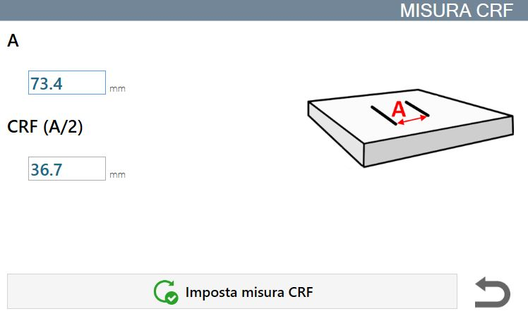
Die durchgeführten Messungen müssen in das entsprechende Feld eingegeben werden:
Bis | Innenabstand zwischen den beiden während des Zyklus auf der Platte ausgeführten Schnitten. |
CRF (A/2) | Maß des Flanschdrehzentrums der Scheibe. Es wird als Hälfte des Innenabstands zwischen den beiden Schnitten auf der Platte berechnet. |
Die während des CRF-Messzyklus erfassten Daten können mit der folgenden Schaltfläche gespeichert werden:
 | CRF-Maß einstellen |
Dieses Bedienfeld ermöglicht das Hinzufügen oder Entfernen von Laserreferenzen im Arbeitsbereich.
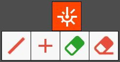
Schaltflächen
 | Linienlaser-Referenz |
 | Kreuzlaser zeichnen |
 | Alle Zeichnungen löschen |
 | Einzelne Zeichnung löschen |
Linienlaser
Der Linienlaser ist ein Werkzeug, das auf die in der Maschine montierte Scheibe ausgerichtet ist. Er dient dazu, Informationen über Position und Ausrichtung der Scheibe auf dem Arbeitstisch zu erfassen.

Um die Referenz zu erfassen, die Maschine an den gewünschten Punkt fahren und die Schaltfläche drücken, um die Richtung des Linienlasers zu erfassen und die Referenz im Arbeitsbereich hinzuzufügen.
Mithilfe mehrerer Referenzen können der Umfang und die Position der Platte oder eines Werkstücks auf dem Arbeitstisch erkannt werden.

Kreuzlaser
Der Kreuzlaser dient dazu, Informationen über die Position des Laserzeigers auf dem Arbeitstisch zu erfassen.
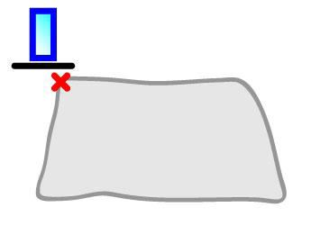
Um die Referenz zu erfassen, die Maschine an den gewünschten Punkt fahren und die Schaltfläche drücken, um die Position des Kreuzlasers zu erfassen und die Referenz im Arbeitsbereich hinzuzufügen.
Mithilfe mehrerer Referenzen können der Umfang und die Position der Platte oder eines Werkstücks auf dem Arbeitstisch erkannt werden.

Mit dieser Funktion kann dem Arbeitsbereich ein Foto hinzugefügt werden.
Wenn Parametrix mit einer Kamera verbunden ist, wird ein Foto der Platte auf dem Arbeitstisch aufgenommen.
Andernfalls wird der Benutzer aufgefordert, ein Foto aus den Dateien des Computers auszuwählen.

Foto aufnehmen
Normalerweise ermöglicht diese Funktion die Aufnahme eines Fotos des Arbeitstisches der Maschine mit der integrierten Kamera.
Durch Drücken der Schaltfläche wird ein Fenster geöffnet, in dem die Stärke der aufzunehmenden Platte eingegeben werden muss.

Das Foto wird aufgenommen; anschließend öffnet sich das Bedienfeld, in dem der Bediener den Plattenumfang festlegen kann.
Foto aus Computerdateien auswählen
Dieser Modus ermöglicht Computern ohne angeschlossene Kamera, die sich normalerweise im Büro befinden, Fotos aus Dateien in das Programm einzufügen.
Durch Drücken der Schaltfläche wird der Datei-Explorer geöffnet, um eine zu ladende Datei auswählen zu können.

Anschließend wird der Benutzer zum Bedienfeld zur Auswahl des Plattenumfangs weitergeleitet.
Umfangsauswahl
Nach Auswahl oder Aufnahme des Fotos erscheint dieser Bildschirm, auf dem der Bediener einen Umfang angeben muss, innerhalb dessen die Werkstücke positioniert werden können.

Nach Bestätigung des Umfangs wird das Foto der Platte zum Parametrix-Arbeitsbereich hinzugefügt.

Damit das Programm funktionieren kann, muss es den Rand der zu bearbeitenden Platte kennen. Mit dieser Funktion kann der Umfang nachgezeichnet werden.

Modi zur Erstellung des Umfangs
Das Programm ermöglicht dem Bediener, den Umfang in einem der folgenden Modi zu zeichnen:
 | Rechteckmodus |
 | Punktmodus |
Während der Umfangserstellung kann jederzeit zwischen den Modi gewechselt werden.
Beim Wechsel vom Modus „Punkte“ in den Modus „Rechteck“ wird der Umfang in ein Rechteck umgewandelt und alle Polygon-Eckpunkte gehen verloren.
Zur Durchführung dieses Vorgangs wird eine Bestätigung angefordert.
Rechteck
Dieser Modus ermöglicht die Erstellung rechteckiger Umfänge.
Um Größe und Position des Rechtecks zu ändern, können die gelben Kreise im Arbeitsbereich gezogen oder die in der darunterliegenden Leiste angezeigten Werte geändert werden.

Abmessungen | Abmessungen des Umfangs entlang der X- und Y-Achse. |
Position | Koordinaten des unteren linken Rechteckpunkts relativ zur unteren linken Ecke des Arbeitstisches. |
Nach Punkten
Dieser Modus ermöglicht die Erstellung von Polygonen mit beliebiger polygonaler Form.
Dazu kann der Bediener die Punkte, die den Umfang bilden, an den gewünschten Positionen platzieren, wie in der folgenden Abbildung gezeigt.

In diesem Modus kann mit dem Umfang über folgende Schaltflächen interagiert werden:
 | Umfang schließen |
 | Letzten Punkt entfernen |
Nach dem Schließen wird der Umfang blau dargestellt und seine Eckpunkte durch gelbe Kreise gekennzeichnet.
Sowohl während der Erstellung als auch bei einem geschlossenen Umfang können die Eckpunkte im Arbeitsbereich jederzeit verschoben werden, um die Genauigkeit zu verbessern.
Untere Leiste
Der Bediener kann mit einem im Arbeitsbereich vorhandenen Umfang über die Schaltflächen im unteren Bildschirmbereich interagieren.
 | Am Kreuzlaser einrasten |
 | Umfang verschieben |
Neuen Umfang erstellen
Das Programm ermöglicht die Erstellung mehrerer Umfänge, auf denen die Werkstücke für die Bearbeitung angeordnet werden können.
Außerdem können Bereiche der Platte definiert werden, in denen keine Werkstücke platziert werden dürfen.
 | Umfang |
 | Zu vermeidender Bereich |
 | Umfang löschen |
Die erstellten Umfänge sind in der Liste oben rechts sichtbar. Um einen Umfang zu ändern, genügt es, ihn im Arbeitsbereich oder den entsprechenden Eintrag in der Liste auszuwählen.
Der aktuell ausgewählte Umfang hat blaue Konturen und gelbe Eckpunkte; die übrigen lassen sich zusätzlich anhand ihrer Farbe unterscheiden: grün für Plattenumfänge, orange für zu vermeidende Bereiche.

Auf diesem Bildschirm können Entspannungsschnitte zur Platte hinzugefügt werden.
 | Platte besäumen |
Um die Erstellung des Umfangs abzuschließen, wird der Bediener aufgefordert, einige Informationen zur auszuführenden Bearbeitung einzugeben.
Dicke | Der Bediener muss die Stärke der auf dem Arbeitstisch liegenden Platte angeben. |
Name | Name, der der Plattenbearbeitung zugewiesen werden soll. |
Kunde | Gibt den Namen des Kunden an, für den der Auftrag ausgeführt wird. Dieses Feld ist optional. |
Auftrag | Gibt eine Kennung für den Auftrag an. Dieses Feld ist optional. |
Plattenstärke und Bearbeitungsname sind Pflichtfelder und müssen vor der Bestätigung des Umfangs ausgefüllt werden.
Die Angaben zu den darunterliegenden zusätzlichen Eigenschaften müssen dagegen nicht ausgefüllt werden.
Zu vermeidende Bereiche
Zu vermeidende Bereiche sind Zonen der Platte, die der Bediener für die Positionierung von Werkstücken auf der Platte sperren möchte.
Gründe hierfür können Brüche im Material, optisch ungünstige Adern oder die Notwendigkeit sein, bestimmte Bereiche der Platte zu erhalten.
Sie werden im Arbeitsbereich als blaue Zonen dargestellt.

Bei Verwendung der Nesting-Funktion werden die Werkstücke so angeordnet, dass keiner dieser Bereiche belegt wird.
Die Plattenbesäumung ist eine Funktion, mit der Entspannungsschnitte zur Bearbeitung hinzugefügt werden können. Diese Schnitte dienen zum Besäumen der Platte entlang der Ränder.
Die Funktion kann im Bedienfeld zur Umfangserstellung aktiviert werden.
Der folgende Beispielbildschirm enthält eine Darstellung der vier Schnitte, je einen pro Seite, die eingefügt werden können.

Seitenleiste
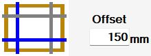 | Platte besäumen |
Es können nur Platten mit rechteckigem Umfang besäumt werden. Im Modus „Punkte“ funktioniert die Funktion nicht.
Außerdem können mehrere Umfänge unterschiedlich besäumt werden.
Ausführung der Bearbeitung
Im Arbeitsbereich prüft das Programm, dass der Bediener keine Werkstücke außerhalb der Plattenbesäumung positioniert.
Die Werkstücke können außerdem wie in der Abbildung gezeigt magnetisch an diesen Schnitten ausgerichtet werden.
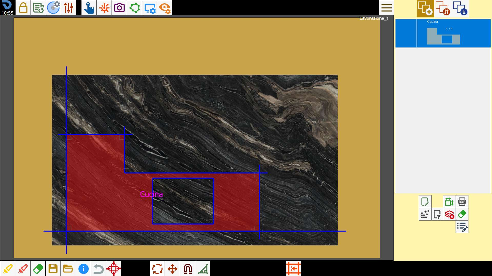
Bei der Ausführung des Schnittprogramms führt die Maschine diese Besäumschnitte vor allen anderen Vorgängen aus. Unmittelbar danach wird eine Besäumpause eingelegt, damit der Bediener Zeit hat, das abgeschnittene Plattenmaterial zu entfernen.
Dadurch können nachfolgende Plattenbewegungen mit Saugnäpfen ohne Behinderung durch diese Besäumschnitte ausgeführt werden.
Diese Vorgänge sind auch in der Liste auf dem Bildschirm zur Verwaltung und Optimierung der Schnitte sichtbar.
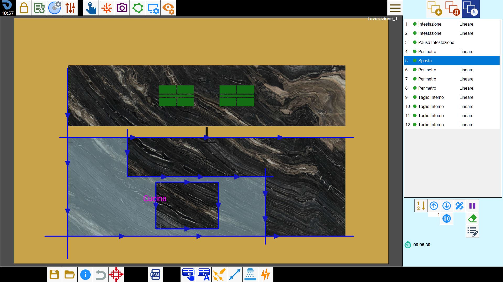
Mit dieser Funktion kann Parametrix automatisch den Umfang einer fotografierten Platte ermitteln.
/0.03.png)
Schaltflächen
/0.05.png) | Automatischer Umfang |
Automatischen Umfang verwenden
Um diese Funktion zu verwenden, muss ein Foto einer Platte auf dem Arbeitstisch aufgenommen oder ein Bild vom Computer geladen werden.
Der Bediener befindet sich anschließend im Bedienfeld zur Umfangsverwaltung.
/0.00.png)
Im rechten Bereich die Schaltfläche zur Berechnung des automatischen Umfangs drücken.
Es wird nur ein Umfang ermittelt, da davon ausgegangen wird, dass im Bild nur eine Platte vorhanden ist.
Nach Abschluss des Vorgangs können die Eckpunkte des ermittelten Umfangs manuell geändert werden, wenn sie nicht ausreichend genau sind.
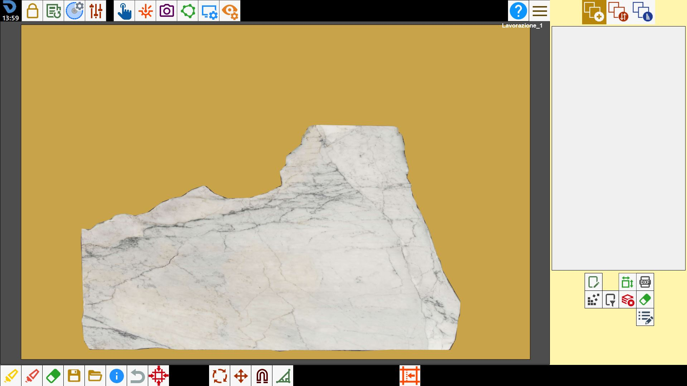
Der Bediener kann das Fotosystem mit verschiedenen Formaten integrieren, beispielsweise Mapascan.

Ausführung
Neben dem Bild werden häufig zusätzliche Dateien mit nützlichen Informationen zur Platte bereitgestellt, beispielsweise Stärke, Umfang und weitere relevante geometrische oder physikalische Daten.
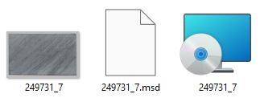
Beim Öffnen des Fotos werden die Daten analysiert, um Umfang, zu vermeidende Bereiche und Stärke korrekt einzustellen:

Parametrix kann diese Datei lesen und das Foto der Platte, den Umfang und die Plattenstärke importieren.
Mehrfachintegration
Wenn mehrere Integrationen konfiguriert sind, kann zur Laufzeit dynamisch ausgewählt werden, welche verwendet werden soll.
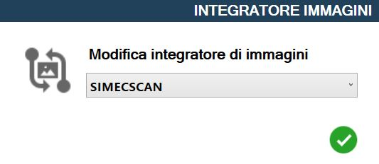
Diese Funktion öffnet ein kleines Bedienfeld mit Werkzeugen zum Ändern der Größe des Arbeitsbereichs.

Schaltflächen
 | Lineal |
Zoom _ | |
 | Zoom - |
 | Zoom zurücksetzen |
 | Fensterzoom |
 | Ansicht verschieben |
 | Hintergrundfarbe anzeigen / ausblenden |
 | Werkstücknamen anzeigen / ausblenden |
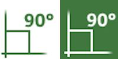 | Rechte Winkel anzeigen / ausblenden |
Lineal
Um diese Funktion zu verwenden, muss der Bediener zwei Punkte im Arbeitsbereich angeben. Diese werden als zwei gelbe Kreuze dargestellt.
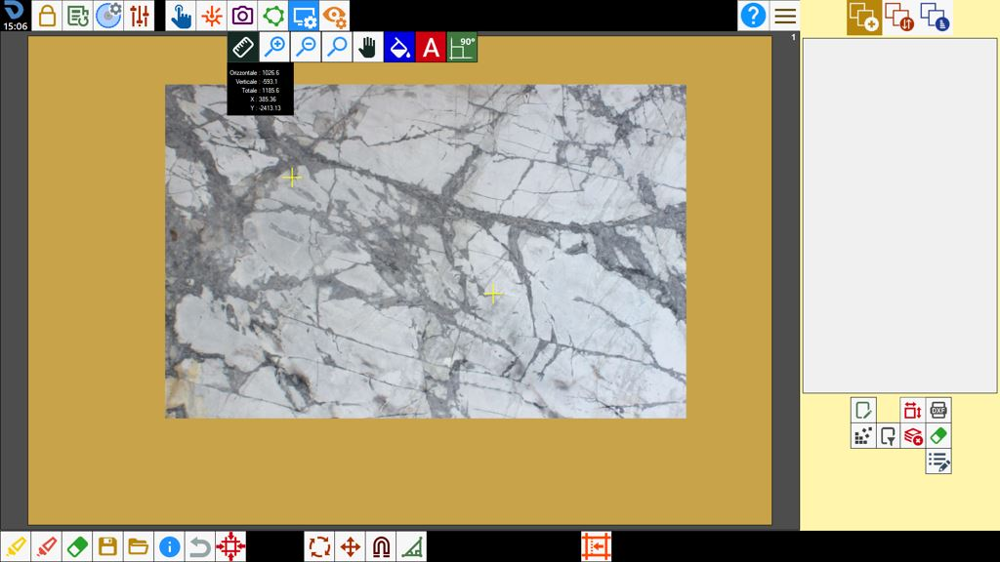
Unter der Lineal-Schaltfläche erscheint ein kleines Bedienfeld, das den Abstand zwischen den beiden Punkten anzeigt.
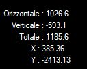
Horizontal | Horizontaler Abstand zwischen dem ersten und dem zweiten Punkt. |
Vertikal | Vertikaler Abstand zwischen dem ersten und dem zweiten Punkt. |
Gesamt | Gesamtabstand zwischen dem ersten und dem zweiten Punkt. |
X | Horizontale Mausposition in Echtzeit. |
Y | Vertikale Mausposition in Echtzeit. |
Diese Funktion öffnet ein kleines Bedienfeld mit Anzeigeinstrumenten.

Schaltflächen
 | Schnitte anzeigen / ausblenden |
 | Bohrungen anzeigen / ausblenden |
 | Fräsungen anzeigen / ausblenden |
 | Absenkungen anzeigen / ausblenden |
 | Pfeile anzeigen / ausblenden |
 | Dynamic Tags anzeigen / ausblenden |
 | Umfang hervorheben |
Parametrix ist für die Bearbeitung ebener, geschlossener geometrischer Formen ausgelegt, die die Werkstücke darstellen.

Modi zur Werkstückerstellung
Wie in der oberen Navigationsleiste zu sehen ist,

erfolgt die Werkstückerstellung mit einem der folgenden Modi:
 | DXF-Datei importieren |
 | Rechtecke erstellen |
Parametrische Formen erstellen | |
 | CSV-Datei importieren |
Verlauf | |
 | Favoriten |
 | Handelswerkstücke erstellen |
Eine ausführlichere Beschreibung der Funktionsweise jedes Modus finden Sie im entsprechenden Abschnitt dieses Kapitels.
Die ausgewählte Funktion wird hellgrün hervorgehoben. Beim Öffnen des Bedienfelds „Werkstücke erstellen“ ist der Modus „Rechtecke erstellen“ ausgewählt.
Werkstücke in Parametrix importieren
Um die Erstellung eines oder mehrerer Werkstücke korrekt abzuschließen, muss die folgende Schaltfläche verwendet werden, die in jedem Bereich des Bedienfelds vorhanden ist:
Werkstücke importieren |
Die Funktionsweise der Werkstückliste rechts im Bedienfeld wird im entsprechenden Kapitel erläutert.
Im folgenden Bild ist zu sehen, wie sich die Werkstückliste nach Drücken der Schaltfläche „Werkstücke importieren“ mit den Elementen der zu importierenden DXF-Datei gefüllt hat.

Liste der importierten Werkstücke
Die rechts im Bedienfeld „Werkstücke erstellen“ angezeigte Werkstückliste ist anfangs leer. Sie wird nach und nach mit Werkstücken gefüllt, die mit den zuvor in diesem Kapitel beschriebenen Funktionen erstellt werden.
Nachfolgend sind ein Beispiel für eine leere Werkstückliste (links) und ein Beispiel für eine gefüllte Liste (rechts) dargestellt:
 | 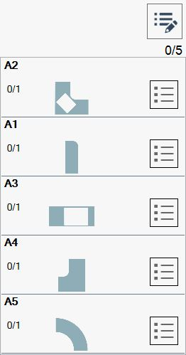 |
Erweiterte Werkstückeigenschaften
In den vorherigen Beispielbildern ist oben rechts in der Liste der zu bearbeitenden Werkstücke eine einzelne Schaltfläche zu sehen:
 | Erweiterte Werkstückinformationen anzeigen |
|---|

Im unteren Bereich des Fensters Werkstück befinden sich zwei Schaltflächen, die nachfolgend beschrieben werden:
 | Kopieren |
Einfügen |
Werkstückdetails anzeigen
Anhand des Beispiels der gefüllten Liste rechts am Anfang des Kapitels wird nun das Verhalten der folgenden Schaltfläche gezeigt:
 | Werkstückdetails anzeigen |
Nach Drücken der Schaltfläche wird das Werkstück in der Liste wie folgt angezeigt:
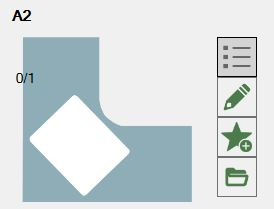
Ausgewähltes Werkstück zu den Favoriten hinzufügen
Jedes Werkstück kann über die folgende Schaltfläche in den Bereich der Favoriten aufgenommen werden:
 | Favorit hinzufügen |
Durch Drücken dieser Schaltfläche erscheint das folgende Pop-up:

Durch Ausfüllen des Textfelds und anschließende Bestätigung kann der Bediener das ausgewählte Werkstück in die zuvor beschriebene Favoritenliste aufnehmen.

Ursprungs-DXF suchen
Der Ordner der Ursprungs-DXF-Datei kann über die folgende Schaltfläche gesucht werden:
 | Werkstück suchen |
Wenn Parametrix die Ursprungs-DXF-Datei nach Drücken dieser Schaltfläche korrekt findet, wird ein Datei-Explorer-Fenster ähnlich dem folgenden geöffnet:

In diesem Bereich können Werkstücke durch Importieren von DXF-Dateien erstellt werden.

Dateiliste
Im linken Fensterbereich befindet sich eine Liste mit allen Ordnern und DXF-Dateien im aktuell ausgewählten Pfad.

Das Element am Anfang der Liste

ermöglicht die Rückkehr zum übergeordneten Ordner des aktuellen Ordners.
Anfangs wird die Liste der DXF-Dateien im Arbeitsordner des PCs angezeigt. Der Ordner kann über die entsprechenden Schaltflächen rechts neben der Dateiliste geändert werden.
 | USB-Speicher |
 | Arbeitsordner |
 | Ordner durchsuchen |
 | Datei löschen |
Angezeigte Dateien sortieren und filtern
Die Elemente unter der Liste dienen zum Anwenden von Filtern und zum Sortieren der angezeigten Dateien.

Im oberen Bereich des Bilds befindet sich eine Suchleiste, über die Dateien nach Name gefiltert werden können, sodass nur Dateien angezeigt werden, die den eingegebenen Text enthalten.
In diesem Bereich des Bildschirms befinden sich außerdem folgende Schaltflächen:
 | Filter löschen |
 | Nach Datum sortieren |
 | Nach Name sortieren |
Die Suche nach Name gilt ausschließlich für Dateien im Ordner und nicht für eventuell vorhandene Unterordner.
Die Sortierung nach Name und Datum gilt dagegen für jedes Listenelement; Ordner werden jedoch immer vor Dateien angezeigt.
Vorschau
Bei Auswahl einer Datei wird im Bereich in der Bildschirmmitte eine Vorschau der Zeichnung angezeigt, damit der Inhalt sofort erkannt werden kann.

Mit der Vorschau kann sowohl durch Ziehen des Inhalts als auch über die Schaltflächen rechts davon interagiert werden.
 | Zoom vergrößern |
 | Zoom verkleinern |
 | Ansicht zurücksetzen |
Zusätzliche Schaltflächen
Mit den folgenden Schaltflächen können außerdem zusätzliche Aktionen ausgeführt werden.
 | Detailbedienfeld |
Detailbedienfeld
Wenn eine Datei ausgewählt wurde, kann das „Detailbedienfeld“ geöffnet werden, um die DXF-Eigenschaften anzuzeigen. Dies erfolgt über die folgende Schaltfläche rechts neben der Vorschau:
Nach dem Öffnen wird zusätzlich zur Liste der Werkstücke, aus denen die ausgewählte DXF-Datei besteht, das folgende Bedienfeld angezeigt:

Layout-Sichtbarkeit verwalten
Im oberen Bereich dieses Bedienfelds werden die Layouts als Kontrollkästchen angezeigt, die beliebig aktiviert oder deaktiviert werden können:

Mit dem ersten Element dieser Layout-Liste kann die Anzeige aller Layouts aktiviert oder deaktiviert werden.
Seitenbedienfeld
Schaltflächen für Sichtbarkeit und Padding
Neben den bereits zuvor gezeigten Schaltflächen zum Ändern der Zoomstufe und zum Zurücksetzen des Zooms sind zwei neue Schaltflächen vorhanden:

 | Ausgewähltes Werkstück hervorheben |
 | Ansicht verschieben |
Polylinienliste
Im mittleren rechten Bereich des Bedienfelds werden die Werkstücke, aus denen die ausgewählte DXF-Datei besteht, als Polylinien angezeigt.
Wenn einer der in der Liste vorhandenen Werte ausgewählt wird, wird das entsprechende in der Vorschau sichtbare Werkstück gelb hervorgehoben.

Wenn die Schaltfläche neben jedem Werkstück gedrückt wird, wird die Liste der Polylinien sichtbar, aus denen das Werkstück besteht.
Außerdem kann eine einzelne Polylinie der DXF-Datei hervorgehoben werden, indem die entsprechende Zeile in der Liste ausgewählt wird:

Untere Schaltflächen
Diese Schaltflächen befinden sich im unteren Bereich der Seitenleiste.

 | Vorherige offene Polylinie suchen |
 | Vorherige offene Polylinie suchen |
Im folgenden Beispiel wurde das Detailbedienfeld für eine DXF-Datei geöffnet, die einige Werkstücke aus offenen Polylinien enthält; diese werden in der Liste rot angezeigt:

Rechteckige Werkstücke können durch Eingabe von Breite und Höhe erstellt und in die Liste der zu bearbeitenden Werkstücke aufgenommen werden.
Das Programm ermöglicht außerdem, jedem Werkstück eine Kennzeichnung (oder ein Etikett) zur Identifizierung zuzuweisen und die Anzahl der Wiederholungen von Rechtecken mit gleichen Abmessungen einzustellen.

Beschreibung der Parameter
Für die Erstellung rechteckiger Werkstücke werden folgende Daten benötigt:
 | Anzahl der Werkstücke |
 | Höhe |
 | Höhe |
 | Kennzeichnung |
Zusätzliche Schaltflächen
Mit den folgenden seitlichen Schaltflächen können außerdem zusätzliche Aktionen ausgeführt werden.
Einzelimport | |
 | Dynamic Tag Top |
Um die jeweilige Schaltflächenfunktion zu aktivieren, muss die Schaltfläche gedrückt werden. In diesem Fall wird sie hellgrün hervorgehoben.
In diesem Bereich können Werkstücke mit parametrischen Formen vorgegebener Gestalt erstellt werden. Zum Zeichnen einer Form müssen lediglich die sie bestimmenden Werte eingegeben werden.

Kategorien parametrischer Formen
Bezogen auf das obige Bild werden in der linken Spalte die Hauptkategorien parametrischer Formen dargestellt.
 | Rechteckige Formen |
 | Vierecke |
 | Dreiecksformen |
 | Küchenarbeitsplatten |
 | Sektorformen |
 | Elliptische Formen |
 | Polygonale Formen |
 | Bäder |
 | Stein- oder Grabformen |
 | Tische |
 | Sonderformen |
Vorschau und parametrierte Werte
Je nach ausgewählter Kategorie wird in der unmittelbar rechts danebenliegenden Spalte die Auswahl der passenden Form geöffnet.
Ein Bild in der Bildschirmmitte liefert detaillierte Hinweise zu den einzugebenden Abmessungen. Rechts neben dem Referenzbild wird eine Vorschau der gezeichneten Form angezeigt, die nach jeder Änderung der die Form bestimmenden Werte in Echtzeit aktualisiert wird.
Wie in den vorherigen Abschnitten kann nach Abschluss der Eingabe der Maße die Kennzeichnung (oder das Etikett), die auf dem Werkstück im Arbeitsbereich angezeigt wird, die Anzahl der Werkstückkopien eingegeben und festgelegt werden, ob der Einzelimport verwendet werden soll.
Im folgenden Bild ist ein Beispiel für die Erstellung einer Küchenarbeitsplatte zu sehen.

Innenaussparungen erstellen
Um Innenaussparungen zu erstellen, auf eines der inneren Rechtecke im mittleren Bild drücken. Es öffnet sich das im folgenden Bild dargestellte Fenster, in dem die Aussparung nach Bedarf geändert und anschließend in das Originalbild eingefügt werden kann.

Zusätzliche Einstellungen
Zusätzliche Parameter
Für die Erstellung rechteckiger Werkstücke werden folgende Daten benötigt:
 | Anzahl der Werkstücke |
 | Kennzeichnung |
Zusätzliche Schaltflächen
 | Einzelimport |
  | Mirror |
 | Zurücksetzen |
Leiste für nicht rechtwinklige Werkstücke
Einige Werkstücke können mit nicht rechtwinkligen Winkeln (also ungleich 90 Grad) erstellt werden.
Dazu wird eine Leiste über dem mittleren Bild verwendet, die alle Änderungsversionen dieses Bilds enthält. Änderbare Parameter sind grün dargestellt.

Mirror
Über die beiden entsprechenden Schaltflächen kann das am Bildschirm angezeigte Ergebnis jeweils entlang der vertikalen bzw. horizontalen Achse gespiegelt werden. Mit dieser Funktion lässt sich die Darstellung an die betrieblichen Anforderungen oder die aktuelle Bearbeitungsart anpassen.
Nachfolgend werden einige Beispiele für horizontale und vertikale Spiegelungen gezeigt:
Nur horizontale Spiegelung | Nur vertikale Spiegelung | Horizontale und vertikale Spiegelung |
 |  |  |
 |  |  |
Dieser Bereich ermöglicht dem Bediener, Werkstücke aus Dateien im CSV-Format zu importieren.
_importieren/schermata_pulita_eng-20250321-091704.png)
Vorschau
Die Liste links in diesem Bereich enthält alle CSV-Dateien im aktuell ausgewählten Pfad.
Die Auswahl eines Elements aus der CSV-Dateiliste aktualisiert die Vorschau im mittleren Bereich.
Im folgenden Beispiel ist die Aktualisierung der Vorschau nach Auswahl des ersten Listenelements zu sehen:
_importieren/schermata_bagno_eng-20250321-092252.png)
Abmessungsmultiplikatoren
Die Abmessungen der Werkstücke in der ausgewählten CSV-Datei können mit 10, 100 oder 1000 multipliziert werden.
Das folgende Bild zeigt die drei verfügbaren Multiplikatoren:
_importieren/pulsanti_moltiplicatore-20250320-154918.png)
Das folgende Bild setzt das Beispiel aus dem Kapitel „Vorschau“ fort, in dem sich die Werte „Breite“, „Höhe“ und „Stärke“ nach Drücken der zweiten Multiplikatorschaltfläche „X 100“ ändern:
_importieren/image-20250325-132949.png)
In diesem Beispiel wird außerdem gezeigt, dass die Schaltfläche „X 100“ nach dem Anklicken aktualisiert wird und ihre Hintergrundfarbe auf hellgrün wechselt.
Sortierung
Die Sortierfunktion füllt die Sortierliste anhand der Felder in der ausgewählten CSV-Datei und ermöglicht dem Bediener bei Bedarf, einen alphabetischen oder umgekehrt alphabetischen Filter auf Grundlage eines der in der ausgewählten Datei enthaltenen Felder anzuwenden.
_importieren/sezione_ordinamento_eng-20250320-155220.png)
Mit dieser Funktion kann der Bediener den Verlauf der erstellten Werkstücke abrufen.

Ansichtsarten der Werkstücke im Verlauf
Für die Anzeige der Werkstücke in diesem Bereich stehen drei verschiedene Modi zur Verfügung:

 | Schnittansicht |
 | Maßansicht |
 | Hüllmaßansicht |
Für die folgenden Beispiele wurden fünf Werkstücke (A1, A2, A3, A4 und A5) aus der DXF-Datei „Kitchen_Curve“ importiert.
Unabhängig von der ausgewählten Ansicht können alle Werkstücke sowohl in der Verlaufsliste links als auch in der Liste der aktuell importierten Werkstücke rechts angezeigt werden.
Schnittansicht
Die Schnittansicht hebt alle Schnitte, sowohl am Umfang als auch innerhalb des Werkstücks, hervor und blendet andere Informationen wie ihre Längenwerte aus.
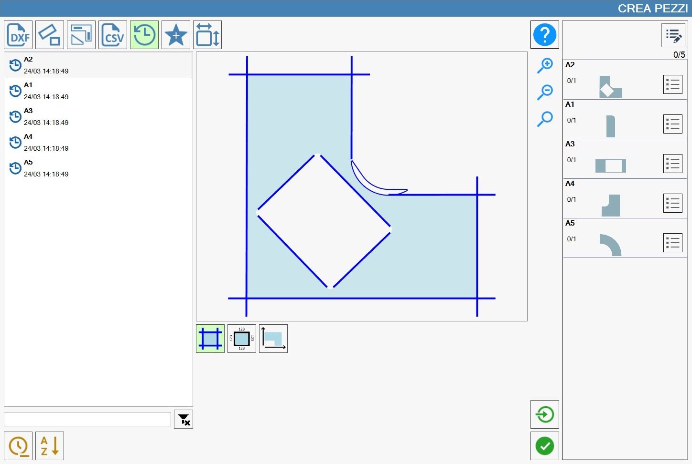
Ansicht der Schnittmaße
Die Ansicht der Schnittmaße hebt den Außenumfang schwarz hervor und zeigt in der Nähe der Mitte jedes Umfangsschnitts dessen Länge an.
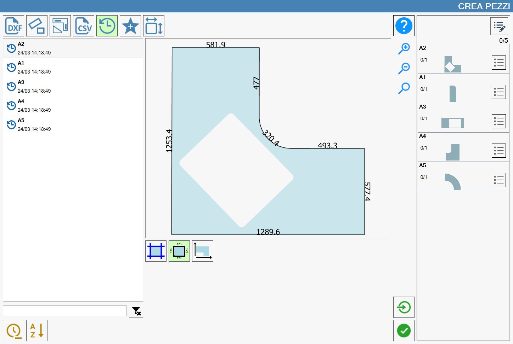
Hüllmaßansicht
Die Hüllmaßansicht hebt keine Schnitte hervor, sondern zeigt die maximalen Werkstückabmessungen in Bezug auf Breite und Länge.
Im folgenden Bild sind zwei schwarze Linien zu sehen, in deren Mitte jeweils der Wert der maximalen Länge bzw. Breite des Werkstücks steht. Dabei ist zu beachten, dass die Seiten des Werkstücks A2 nur zufällig mit den schwarzen Linien übereinstimmen; die übrigen Werkstückschnitte sind nicht hervorgehoben und zeigen keine Informationen.

Über den Favoritenbildschirm können zuvor als Favoriten gespeicherte Werkstücke in Parametrix importiert werden.
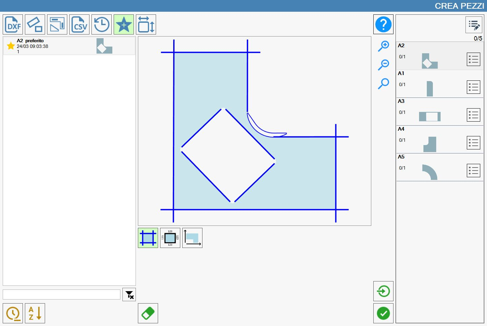
Werkstück zu Favoriten hinzufügen
Jedes Werkstück kann über die folgende Schaltfläche in den Bereich der Favoriten aufgenommen werden:
 | Favorit hinzufügen |
Durch Drücken dieser Schaltfläche erscheint das folgende Pop-up:

Durch Ausfüllen des Textfelds und anschließende Bestätigung kann der Bediener das ausgewählte Werkstück in die zuvor beschriebene Favoritenliste aufnehmen.

Ansichtsarten der Werkstücke im Verlauf
Für die Anzeige der Werkstücke in diesem Bereich stehen drei verschiedene Modi zur Verfügung:
 | Schnittansicht |
 | Maßansicht |
 | Hüllmaßansicht |
In diesem Bereich des Bedienfelds „Werkstücke erstellen“ können Handelswerkstücke erstellt werden. Diese Werkstückart hat folgende Eigenschaften:
sie werden mit einer großen Anzahl von Kopien erstellt;
Breite und Höhe können auch geändert werden, nachdem ein Werkstück in den Arbeitsbereich eingefügt wurde.
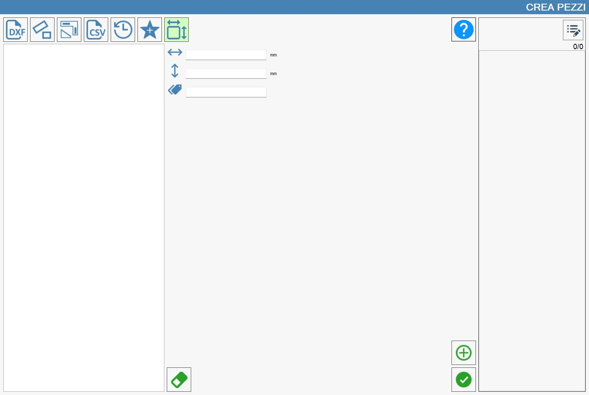
Parameter
 | Höhe |
 | Höhe |
 | Kennzeichnung |
Handelswerkstück importieren
Um die Erstellung eines Handelswerkstücks korrekt abzuschließen, muss die folgende Schaltfläche verwendet werden:
Handelswerkstücke importieren |
Der Erstellvorgang aktualisiert außerdem sowohl die Liste der Handelswerkstücke links als auch die Liste der zu bearbeitenden Werkstücke rechts. Das folgende Beispiel zeigt beide aktualisierten Listen:

Wie in der linken Bildschirmspalte zu sehen ist, steht vor dem Werkstücknamen ein grünes Symbol. Durch Anklicken wird es rot und das Werkstück aus der Liste rechts entfernt.

Wenn ein oder mehrere Werkstücke erstellt und in Parametrix importiert werden, fügt das Programm sie der Werkstückliste im rechten Bereich des Hauptbildschirms hinzu.
Über die Werkstückliste kann der Bediener:
Werkstücke in den Arbeitsbereich einfügen;
Die bearbeiteten und noch zu bearbeitenden Werkstücke verfolgen;
Bestimmte Änderungen an den Werkstücken vornehmen.

Listenelemente
Jede Zeile der Liste stellt ein in Parametrix importiertes Werkstück dar.

Wie in diesem Bild zu sehen ist, enthält eine Zeile folgende Informationen zum Werkstück:
Formvorschau | Vereinfachte Darstellung der Werkstückgeometrie. |
Werkstückkennzeichnung | Kennzeichnung, die dem Werkstück zur Identifizierung hinzugefügt wird. |
Anzahl eingefügter und gesamter Werkstücke | Gibt die Anzahl der Werkstücke dieser Zeile an, die in den Arbeitsbereich eingefügt wurden, sowie die Gesamtzahl der Werkstücke dieses Typs, die eingefügt werden können. |
Werkstücke in den Arbeitsbereich einfügen
Zum Einfügen der Werkstücke in den Arbeitsbereich wird die folgende Schaltfläche verwendet, die sich in jeder Zeile der Liste befindet:
 | Werkstücke in den Arbeitsbereich einfügen |
Das ausgewählte Werkstück wurde im Arbeitsbereich positioniert und die Anzahl der eingefügten Werkstücke dieser Zeile wurde aktualisiert.

Nach Erreichen der maximalen Anzahl verschwindet die Schaltfläche „Werkstücke einfügen“ in dieser Zeile, da alle Werkstücke dieser Zeile bearbeitet wurden.
Vorgänge an Werkstücken der Liste
Die Schaltflächen unter der Liste dienen zur Verwaltung der Listenelemente. Insbesondere:
 | Werkstückliste leeren |
 | Handelswerkstücke ausblenden/anzeigen |
 | Werkstück löschen |
 | Werkstücke filtern/sortieren |
 | Zusätzliche Werkstückeigenschaften |
Werkstück löschen
Mit dieser Funktion können Werkstücke einzeln aus der Liste gelöscht werden. Nach Drücken der Schaltfläche fordert das Programm den Benutzer auf, die zu löschende Zeile auszuwählen, und ersetzt den Pfeil zum Einfügen der Werkstücke in den Arbeitsbereich durch einen Radiergummi.

Durch Drücken dieser Schaltfläche wird die entsprechende Zeile und damit alle von ihr dargestellten Werkstücke gelöscht.
Mit dieser Funktion kann der Bediener die Werkstücke in der Liste filtern und/oder sortieren.
Beim Drücken der Schaltfläche öffnet sich das folgende Fenster.

Gefilterte Werkstückliste
Nachdem Kriterien zum Filtern oder Sortieren der Werkstücke eingestellt wurden, können sie über die Schaltfläche oben rechts angewendet werden.
 | Aktivieren/Deaktivieren |
Werkstücke, die den gewählten Filterkriterien nicht entsprechen, werden nicht in der Werkstückliste angezeigt.
Werkstücke im Arbeitsbereich, die die festgelegten Filterkriterien nicht erfüllen, werden entfernt.
Im folgenden Beispiel sollen nur Werkstücke mit einer Höhe größer als 600 mm angezeigt und in aufsteigender alphabetischer Reihenfolge angeordnet werden.
Vor Anwendung von Filter und Sortierung | Nach Anwendung von Filter und Sortierung |
 |  |
Die Filter- und Sortierfunktion funktioniert nicht mit Handelswerkstücken.
Die Filter- und Sortierkriterien werden auch von der Nesting-Funktion berücksichtigt.
Werkstücke filtern
Im oberen Bereich dieses Fensters kann der Bediener einen Filter auf Grundlage verschiedener Werkstückeigenschaften hinzufügen.

Wie zu sehen ist, stehen folgende Schaltflächen zur Verfügung.
Filteranwendungsmodus „Ausschluss“ | |
 | Filter hinzufügen |
 | Filter löschen |
Filter erstellen
Zum Erstellen eines Filters im ersten Dropdown-Menü links die zu verwendende Eigenschaft aus den angebotenen auswählen.

Nachdem die unterscheidende Eigenschaft gewählt wurde, im zweiten Menü einen Vergleichsoperator auswählen.

Anschließend einen zur Eigenschaft passenden Wert in das danebenliegende Feld eingeben, um eine logische Bedingung zu erstellen.

Über die Schaltfläche rechts neben dem Textfeld wird festgelegt, wie der neu erstellte Filter mit anderen gegebenenfalls vorhandenen Filtern in der Liste verknüpft wird.
Im Modus „Ausschluss“ muss ein Werkstück
gleichzeitig
die neu zu erstellende logische Bedingung und das Ergebnis der vorherigen Bedingungen erfüllen.
Im Modus „Einschluss“ muss ein Werkstück die neu zu erstellende Bedingung
oder
das Ergebnis der vorherigen Bedingungen erfüllen.
Um die Erstellung des Filters abzuschließen, die letzte Schaltfläche in dieser Zeile verwenden. Der Filter wird der darunterliegenden Liste hinzugefügt.

Werkstücke sortieren
Im unteren Bereich des Fensters kann der Bediener festlegen, die Werkstücke nach bestimmten Eigenschaften zu sortieren.

Nach Auswahl eines Eintrags aus dem Dropdown-Menü können folgende Aktionen ausgeführt werden:
 | Aufsteigend/absteigend sortieren |
 | Sortierung löschen |
Mehrfachsortierung (Optional)
Mit dieser Funktion können die Werkstücke in der Liste nach mehreren Kriterien sortiert werden.

In diesem Modus können mit den folgenden Schaltflächen Sortierkriterien hinzugefügt werden:
 | Sortierkriterium hinzufügen |
 | Position ändern |
Die Kriterien in dieser Liste werden von oben nach unten berücksichtigt.
Das bedeutet, dass die Werkstücke nach dem ersten Kriterium sortiert werden. Wenn zwei oder mehr Werkstücke für die dem ersten Kriterium zugeordnete Eigenschaft denselben Wert haben, werden sie nach dem nächsten Kriterium sortiert. Dies wird für jedes weitere Kriterium in der Liste fortgesetzt.
Die folgende Abbildung zeigt ein Beispiel für eine Mehrfachsortierung.
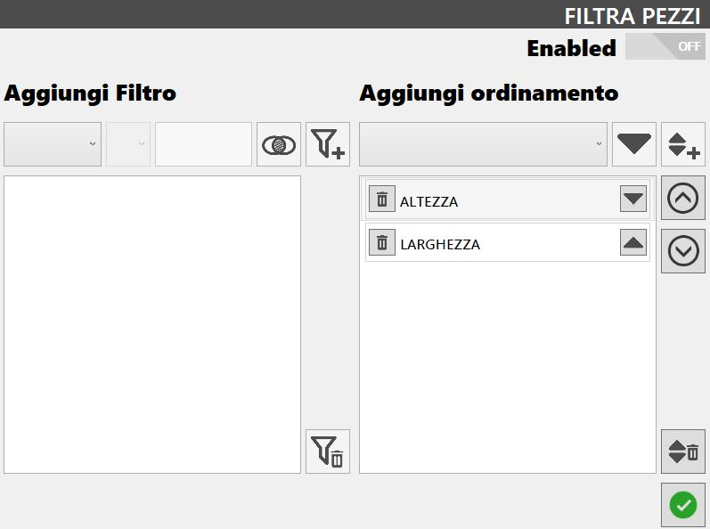
Mit dieser Funktion können die zusätzlichen Eigenschaften des Werkstücks geändert werden. Es handelt sich um Informationen zum Werkstück, die in verschiedenen Bereichen des Programms angezeigt und auch in die für die Maschine erzeugte ISO-Datei übernommen werden können.
Nach Betätigung der Schaltfläche und anschließend der gewünschten Zeile in der Werkstückliste öffnet sich das folgende Fenster.

Eigenschaftenkonfiguration
Im mittleren Bereich des Panels werden die zusätzlichen Eigenschaften aufgelistet, die einem Werkstück zugewiesen werden können.
Die in diesem Fenster angezeigten Felder können mit Unterstützung eines Donatoni-Technikers angepasst werden.
Schaltflächen
Im unteren Bereich des Fensters befinden sich die beiden nachfolgend dargestellten Schaltflächen:
 | Kopieren |
 | Einfügen |
Nach der Bestätigung werden diese Informationen allen Werkstücken zugeordnet, die mit der ausgewählten Listenzeile verknüpft sind.
Dieses Bedienfeld ermöglicht dem Bediener, verschiedene Bearbeitungsarten auf ein ausgewähltes Werkstück anzuwenden.
Beim Öffnen wird folgender Bildschirm angezeigt:
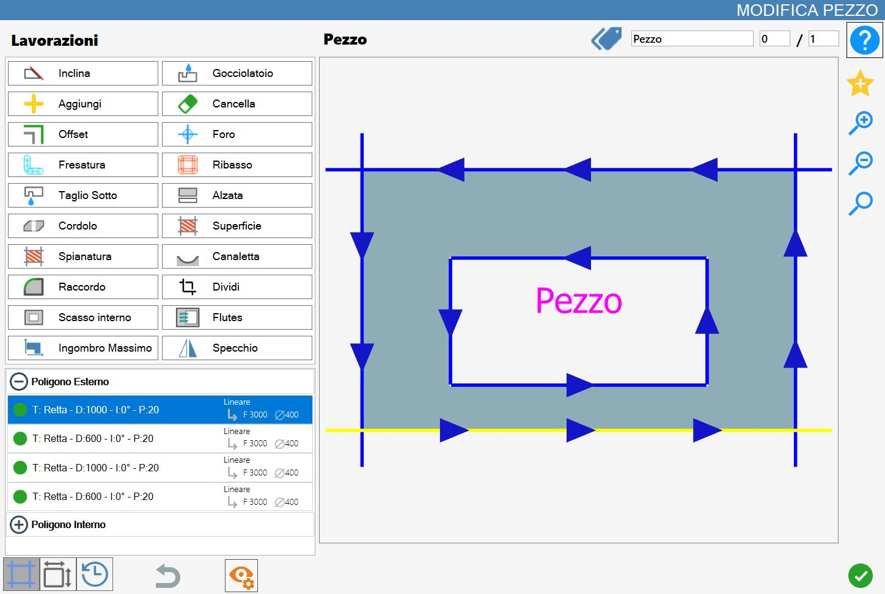
Einige der in diesem Abschnitt beschriebenen Funktionen sind auch auf der Parametrix-Hauptseite vorhanden, jedoch mit einem Unterschied.
Wenn ein Werkstück oder ein Schnitt über das Bedienfeld „Werkstück bearbeiten“ geändert wird, werden alle Werkstücke der ausgewählten Zeile entsprechend mit denselben Bearbeitungen geändert.
Wenn die Bearbeitung dagegen im Arbeitsbereich eingestellt wird, wird nur das ausgewählte Werkstück geändert.
Bearbeitungsarten
Über das Bedienfeld „Werkstück bearbeiten“ können eine oder mehrere der folgenden Bearbeitungen angewendet werden, die nachfolgend einzeln erläutert werden. Parametrix ermöglicht insbesondere:
 | Gehrung |  | Tropfrinne |
 | Hinzufügen |  | Löschen |
 | Offset |  | Bohrung |
 | Fräsen |  | Absenkung |
 | Unterschnitt - (Optional) |  | Aufkantung |
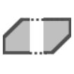 | Randprofil |  | Oberfläche - (Optional) |
| Planfräsen - (Optional) | Rinne - (Optional) | |
 | Ausrundung |  | Teilen |
 | Innenaussparung |  | Flutes |
 | Maximale Hüllkontur - (Optional) |  | Spiegeln |
Je nach Kombination der Optionen sind einige dieser Schaltflächen möglicherweise nicht vorhanden.
Schnittliste
Die Schnitte des Werkstücks werden im unteren linken Bereich dieses Bedienfelds angezeigt.
Mithilfe einer entsprechenden Unterteilung wird angegeben, ob ein Schnitt zum Außenumfang oder zu einem der Innenumfänge gehört. Durch diese Klassifizierung kann die Liste der zu einem Polygon gehörenden Schnitte durch Drücken des Symbols des entsprechenden Bereichs ein-/ausgeblendet werden.

Wie im Bild zu sehen ist, werden in jeder Zeile einige Informationen zum dargestellten Schnitt angezeigt. Insbesondere:
Bearbeitung verwalten | |
 | Schnittinformationen
|
 | Bearbeitungsinformationen
|
Diese Informationen ändern sich je nach beschriebener Schnittart. Es werden nicht immer alle Informationen angezeigt.
Bei Bohrungen kann beispielsweise nur die Eindringtiefe in das Material angezeigt werden.
Wenn an einem Teil des Werkstücks kein Schnitt vorhanden ist, wird dies mit „Keine“ angegeben.
Vorschau
Der Hauptbereich der Funktion „Werkstück bearbeiten“ bietet dem Bediener eine vollständige Vorschau des ausgewählten Werkstücks mit allen derzeit angewendeten Bearbeitungen.

Mit dem angezeigten Werkstück kann einfach durch Verschieben der Vorschau oder über die Schaltflächen zum Ändern des Zooms rechts daneben interagiert werden.
Außerdem sind in diesem Bereich weitere Funktionen vorhanden, die nachfolgend beschrieben werden.
Kennzeichnung | |
 | Anzahl der Werkstücke |
 | Favorit hinzufügen |
Schnittauswahl
Ein Schnitt kann direkt in der Vorschau ausgewählt werden; seine Farbe wechselt zur Bestätigung der Auswahl auf gelb. Alternativ kann die entsprechende Zeile in der Schnittliste im Menü unten links ausgewählt werden.
Durch Anklicken des grünen Punkts links neben jedem Listenelement kann der entsprechende Schnitt deaktiviert werden.
In diesem Fall wird der Punkt rot und die Werkstückvorschau aktualisiert; die Farbe des deaktivierten Schnitts wechselt auf grau.
Im folgenden Beispiel wurden die ersten beiden Schnitte des Außenpolygons des Werkstücks deaktiviert:

Untere Leiste
In dieser Leiste stehen einige Funktionen zur Verfügung, die die Verwendung der Bearbeitungen unter Werkstück bearbeiten vereinfachen:

 | Schnitte |
 | Seiten |
 | Verlauf |
 | Abbrechen Die Schaltfläche funktioniert, solange das Bedienfeld „Werkstück bearbeiten“ für das betreffende Werkstück geöffnet bleibt.
|
 | Ansicht ändern |
Verlauf
Ermöglicht die Anzeige aller auf das aktuelle Werkstück angewendeten Änderungen und bei Bedarf das Zurücksetzen des aktuellen Werkstücks auf einen früheren Zustand.
Wenn Änderungen am aktuellen Werkstück vorgenommen wurden, werden diese in der Liste links angezeigt:

Im linken Menü werden die Bearbeitungszustände des Werkstücks angezeigt.
 | Bearbeitungszustand
|
Der unveränderte Zustand des aktuellen Werkstücks wird „Default“ genannt.
Wenn im linken Menü ein Eintrag ausgewählt wird, erscheint die Vorschau für den Zeitpunkt, an dem die Bearbeitung angewendet wurde.

Durch Drücken der Bestätigungstaste wird das Werkstück auf den ausgewählten Zustand zurückgesetzt. Alle Änderungen nach dem ausgewählten Zustand werden dadurch entfernt.
Im unteren Bereich des Bedienfelds werden drei Hilfsschaltflächen zur Anzeige des Werkstücks in der Vorschau angezeigt:
 | Schnitte anzeigen |
 | Maße anzeigen |
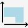 | Winkel anzeigen |
Ansicht ändern
Dieser Modus stellt dem Bediener einige Schaltflächen zur Verfügung, die nur sichtbar sind, wenn „Ansicht ändern“ aktiviert ist.

Jede der folgenden Schaltflächen aktiviert oder deaktiviert eines der folgenden Werkstückelemente:
 | Schnitte |
 | Bohrungen |
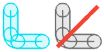 | Fräsungen |
 | Absenkungen |
Pfeile auf Schnitten | |
 | Werkstückname |
 | Dynamic Tags |
 | Umfang hervorheben |
Die Funktion „Neigung“ definiert eine Bearbeitung mit einer A-Achse ungleich 0.
Die Benutzeroberfläche für den Bearbeitungstyp „Gehrungsschnitt“ sieht ähnlich wie in der folgenden Abbildung aus:

Modus
 | Winkelrichtung _ |
 | Winkelrichtung - |
Parameter
Grad | Stellt den Winkel zwischen der Richtung des montierten Werkzeugs und der Oberfläche des zu bearbeitenden Materials dar. |
Ausführung der Bearbeitung
Die Bearbeitung kann angewendet werden, indem die Schaltfläche links neben dem entsprechenden Schnitt in der Polygonliste gedrückt wird.
Ein rotes Symbol mit einem „X“ zeigt an, dass die Bearbeitung nicht auf den gewünschten Schnitt angewendet werden kann.
Nach Auswahl der Winkelrichtung wird der gewünschte Wert daneben eingegeben und der Schnitt ausgewählt, für den der Gehrungsschnitt festgelegt werden soll.
Nach Anwendung der Bearbeitung wird der Gehrungsschnitt in einer anderen Farbe angezeigt.
Je nach Auswahl der Winkelrichtung können zwei unterschiedliche Ergebnisse erzielt werden:
Winkelrichtung: Positiv
In der folgenden Beispielabbildung wurde die Bearbeitung Gehrungsschnitt (45.0_) mit positiver Winkelrichtung auf jede Seite außer dem inneren Bogen angewendet, da das innerhalb des Umfangs liegende Werkzeug nicht geneigt werden kann.

Winkelrichtung: Negativ
In der gezeigten Beispielabbildung wurden die Gehrungsschnitte (45.0_) mit negativer Winkelrichtung in umgekehrter Weise zur im vorherigen Abschnitt dargestellten Konfiguration auf die Schnitte des Werkstücks angewendet

Mit dieser Funktion kann ein Schnitt mit anderen Eigenschaften als ein normaler Schnitt hinzugefügt werden.
Die sich öffnende Benutzeroberfläche sieht ähnlich wie in der folgenden Abbildung aus:

Parameter
Die Schnittbreite kann eingestellt werden (sie muss gleich oder größer als die Scheibendicke sein).
Abstand vom Rand | Abstand zwischen dem ausgewählten Schnitt und der Tropfrinnenbearbeitung. |
Schnittbreite | Dies ist die Breite der Bearbeitung. Eine Tropfrinne kann breiter als die Scheibendicke ausgeführt werden. |
Schnitttiefe | Dies ist die Eintauchtiefe in das Material. |
Startabstand | Der Abstand nach innen, mit dem die Bearbeitung in Bezug auf den Schnittanfang erstellt wird. |
Endabstand | Der Abstand nach innen, mit dem die Bearbeitung in Bezug auf das Schnittende erstellt wird. |
Startabstand und Endabstand können mit den Schaltflächen rechts neben dem Wert aktiviert oder deaktiviert werden.
Sind sie deaktiviert, werden sie von Parametrix nicht berücksichtigt; sind sie aktiviert, berechnet das Programm die Verschiebung.
Startabstand und Endabstand
Diese Parameter können mit den Schaltflächen rechts neben dem Wert aktiviert oder deaktiviert werden. Wenn sie grau (ausgeschaltet) sind, werden sie von Parametrix nicht berücksichtigt; wenn sie grün (eingeschaltet – wie in der Abbildung) sind, berechnet das Programm die Verschiebung.

Ausführung der Bearbeitung
Die Bearbeitung kann angewendet werden, indem die Schaltfläche links neben dem entsprechenden Schnitt in der Polygonliste gedrückt wird.
Ein rotes Symbol mit einem „X“ zeigt an, dass die Bearbeitung nicht auf den gewünschten Schnitt angewendet werden kann.
Je nach eingestellten Bearbeitungsparametern wird eine Tropfrinne parallel zum Schnitt des ausgewählten Werkstücks eingefügt.

Die folgende Abbildung zeigt eine Tropfrinnenbearbeitung, die mit denselben Parametern wie im vorherigen Beispiel ausgeführt wurde.

In beiden Beispielen wurde die Bearbeitung auf den unteren Schnitt angewendet.
Außerdem wurde sie der Liste „Zusätzliche Bearbeitungen“ hinzugefügt, die sich unten links im Panel „Werkstück bearbeiten“ befindet.
Mit dieser Funktion kann in einem gewünschten Abstand ein zu einem bereits vorhandenen Schnitt paralleler Schnitt hinzugefügt werden.
Diese Bearbeitung kann sowohl auf lineare Schnitte als auch auf Kreisbögen angewendet werden.

Parameter
Zum Hinzufügen eines Schnitts muss der folgende Parameter eingestellt werden:
Abstand | Abstand vom ausgewählten Schnitt, in dem der parallele Schnitt hinzugefügt wird. |
Ausführung der Bearbeitung
Die Bearbeitung kann angewendet werden, indem die Schaltfläche links neben dem entsprechenden Schnitt in der Polygonliste gedrückt wird.
Ein rotes Symbol mit einem „X“ zeigt an, dass die Bearbeitung nicht auf den gewünschten Schnitt angewendet werden kann.
Nach Einstellung des Parameters Abstand wird der Schnitt ausgewählt, in Bezug auf den der neue Schnitt erstellt werden soll.
Die Richtung, in der der neue Schnitt hinzugefügt wird, wird so berechnet, dass das Werkstück nicht beschädigt wird: nach außen, wenn ein Element des äußeren Polygons ausgewählt wird, oder nach innen bei einem inneren Polygon.
Wenn der Wert für Abstand negativ ist, wird der hinzugefügte Schnitt in der entgegengesetzten Verschieberichtung berechnet.
Die folgende Abbildung zeigt das Ergebnis des Hinzufügens von zwei Schnitten, wobei die beiden Geraden ausgewählt wurden, die die Aussparung der Küchenarbeitsplatte definieren.

Wie dargestellt, wird der neue parallele Schnitt im Bereich Hinzugefügte Bearbeitungen eingefügt und übernimmt die Eigenschaften des ausgewählten Schnitts, wie Richtung und Bearbeitungstyp.
Schaltfläche zum Hinzufügen eines Schnitts an konkaven Ecken
 | Konkave Schnitte |
|---|

Mit der Funktion „Löschen“ können ein oder mehrere Schnitte in der Figur gelöscht werden.
Die Benutzeroberfläche für diese Funktion sieht ähnlich wie in der folgenden Abbildung aus:

Ausführung der Bearbeitung
Die Bearbeitung kann angewendet werden, indem die Schaltfläche links neben dem entsprechenden Schnitt in der Polygonliste gedrückt wird.
Ein rotes Symbol mit einem „X“ zeigt an, dass die Bearbeitung nicht auf den gewünschten Schnitt angewendet werden kann.
Nach dem Löschen eines der Schnitte sind die folgenden Änderungen sichtbar:

Wenn alle Schnitte aus der Liste der zusätzlichen Bearbeitungen entfernt wurden, wird auch die Liste automatisch gelöscht.
Wird ein Schnitt aus dem Polygon gelöscht, sieht das Ergebnis ähnlich wie in der folgenden Abbildung aus:

Mit dieser Funktion kann das Werkstück verbreitert werden, indem der ausgewählte Schnitt parallel verschoben wird.
Die folgende Abbildung zeigt die Benutzeroberfläche der Funktion anhand eines Beispielwerkstücks zu Demonstrationszwecken.

Parameter
Offset | Ermöglicht das Verbreitern des Werkstücks durch paralleles Verschieben des ausgewählten Schnitts. |
Ausführung der Bearbeitung
Die Bearbeitung kann angewendet werden, indem die Schaltfläche links neben dem entsprechenden Schnitt in der Polygonliste gedrückt wird.
Ein rotes Symbol mit einem „X“ zeigt an, dass die Bearbeitung nicht auf den gewünschten Schnitt angewendet werden kann.
Die folgende Abbildung zeigt das Werkstück nach dem Hinzufügen eines Offsets, wobei der linke Seitenschnitt des inneren Polygons als Bezug verwendet wurde.

Diese Bearbeitung führt nach ihrer Ausführung weder zum Hinzufügen noch zum Entfernen von Schnitten aus der Liste, sondern aktualisiert lediglich die Parameter der betroffenen Schnitte entsprechend den vorgenommenen Änderungen.
Auf dieser Seite kann eine einzelne Bohrung an einer bestimmten Position oder eine Reihe von Bohrungen mit festem Abstand ausgeführt werden.

Bearbeitungsarten
Um diese Bearbeitung zu verwenden, muss zunächst einer der beiden verfügbaren Modi über die entsprechende Schaltfläche ausgewählt werden:
Die Modi „Bohrung im Material“ und „Scheibenrest entfernen“ schließen sich gegenseitig aus: Durch Aktivieren eines Modus wird der andere automatisch deaktiviert.
Bohrung im Material | |
 | Scheibenrest entfernen |
Bohrung im Material
Bei Auswahl dieses Bearbeitungsmodus wird der aktuell ausgewählte Eckpunkt orange hervorgehoben. Von diesem Punkt aus wird eine Vorschau der hinzuzufügenden Bohrung projiziert, die ebenfalls orange dargestellt und anhand der eingestellten Parameter erzeugt wird.

Parameter
Eindringen | Gibt die Tiefe an, die die Bearbeitung erreichen muss. |
Abstand X-Achse | Abstand auf der X-Achse vom Startpunkt des ausgewählten Schnitts, an dem die Bohrung erstellt wird. |
Abstand Y-Achse | Abstand auf der Y-Achse vom Startpunkt des ausgewählten Schnitts, an dem die Bohrung erstellt wird. |
Bezogen auf den ausgewählten Punkt gilt der Bereich rechts vom Kreis (für X) und oberhalb des Kreises (für Y) als positiv, wie in der Abbildung dargestellt.

Ausführung Bohrung im Material
Die Bearbeitung kann angewendet werden, indem die Schaltfläche links neben dem entsprechenden Schnitt in der Polygonliste gedrückt wird.
Ein rotes Symbol mit einem „X“ zeigt an, dass die Bearbeitung nicht auf den gewünschten Schnitt angewendet werden kann.
Nach Auswahl eines Eckpunkts und Einstellung der Parameter Abstand und Eindringtiefe kann die Bearbeitung durch Drücken der grünen Schaltfläche OK bestätigt werden.
Bei jeder erfolgreich in das Material eingefügten Bohrung wird die Vorschau aktualisiert und die Bohrung automatisch in den Bereich „Zusätzliche Bearbeitungen“ links eingefügt:

Im Gegensatz zu „Scheibenrest entfernen“ können jedoch auch die Mittelpunkte der Bögen ausgewählt werden. Diese werden in der Vorschau zusammen mit allen anderen gültigen Bezugspunkten zum Einfügen von Bohrungen in das Material hervorgehoben.
Scheibenrest entfernen
Bei Aktivierung dieses Modus wird der ausgewählte Eckpunkt zum Ursprungspunkt einer orangefarbenen Vorschau aus mehreren Bohrungen. Deren Größe hängt vom montierten Kernbohrer ab und deren Anzahl wird durch den Parameter Bohrungsabstand bestimmt.

Parameter Scheibenrest entfernen
Eindringen | Gibt die Tiefe an, die die Bearbeitung erreichen muss. |
Abstand automatische Bohrungen | Bestimmt den Abstand zwischen den Ursprungspunkten der Bohrungen. |
Ausführung Scheibenrest entfernen
Die Bearbeitung kann angewendet werden, indem die Schaltfläche links neben dem entsprechenden Schnitt in der Polygonliste gedrückt wird.
Ein rotes Symbol mit einem „X“ zeigt an, dass die Bearbeitung nicht auf den gewünschten Schnitt angewendet werden kann.
Der Modus „Scheibenrest entfernen“ kann zwischen zwei aufeinanderfolgenden Schnitten verwendet werden, unabhängig davon, ob beide Geraden, beide Kurven oder jeweils einer von jedem Typ sind.

Die Bohrung wird zur Liste des inneren Polygons hinzugefügt und kennzeichnet die Bearbeitung zum Entfernen des Scheibenrests.
Nachfolgend ist ein Beispiel für Scheibenrest entfernen an zwei benachbarten Seiten des inneren Polygons dargestellt:
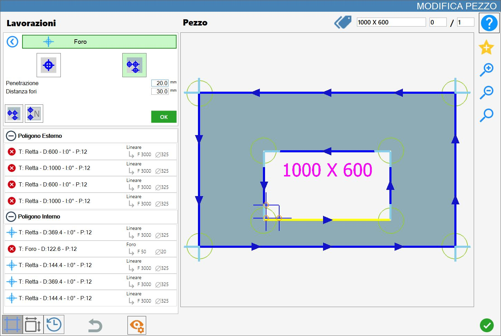
Verfügbare Schaltflächen im Modus Scheibenrest entfernen
 | Konkave Bohrungen |
|---|---|
 | Anzahl Bohrungen |
Mit der Funktion „Fräsen“ kann eine Fräsbearbeitung am Werkstück, an einer Seite, an einem Rand oder am gesamten Umfang erstellt werden.
Die Benutzeroberfläche für diese Funktion sieht ähnlich wie in der folgenden Abbildung aus:

Parameter
Eckpunkt | Entfernt Material, das die Scheibe nicht beseitigen kann, ohne das Werkstück zu beschädigen. Dient ausschließlich zum Fertigbearbeiten bestimmter Punkte des Werkstücks. |
Seite | Der Fräser wird zum Schneiden einer Seite des Werkstücks verwendet. Er ergänzt den Scheibenschnitt nicht, sondern ersetzt ihn vollständig. |
Umfang | Der Fräser wird anstelle der Scheibe verwendet, um den Schnitt über ein gesamtes Polygon des Werkstücks auszuführen. Wie im Modus „Seite“ ersetzt er die Scheibe. |
In jedem Modus entspricht die Schnittbreite dem Durchmesser des montierten Fräsers. Wird dieses Element geändert, werden die Schnitte automatisch mit dem neuen Maß aktualisiert.
Im Modus „Eckpunkt“ führt eine Änderung der Materialdicke oder des Scheibendurchmessers zu einer Verlängerung oder Verkürzung des Schnitts, damit er an die neu gewählten Maße angepasst wird.
Ist der Fräser zu groß, um die ausgewählte Seite zu schneiden, wird eine Fehlermeldung auf dem Bildschirm angezeigt.
Dicke | Die derzeit in Parametrix eingestellte Plattendicke wird angezeigt, um den Bediener beim Anwenden der Bearbeitung zu unterstützen. |
 | Eindringen |
 | Fräsen an Innenecken |
Ausführung der Bearbeitung
Die Bearbeitung kann angewendet werden, indem die Schaltfläche links neben dem entsprechenden Schnitt in der Polygonliste gedrückt wird.
Ein rotes Symbol mit einem „X“ zeigt an, dass die Bearbeitung nicht auf den gewünschten Schnitt angewendet werden kann.
Die Auswirkungen des Fräsens unterscheiden sich je nach ausgewähltem Modus und weisen einige Unterschiede auf, die in den folgenden Abschnitten beschrieben werden.
Die Fräsbearbeitung beginnt am in der Abbildung angegebenen Ansetzpunkt, der durch den ausgefüllten farbigen Kreis am Ursprung gekennzeichnet ist.
Jede auf ein Werkstück angewendete Fräsbearbeitung wird in die einem Polygon zugeordnete Schnittliste eingefügt und grafisch hellblau dargestellt.
Im Modus Eckpunkt wird die Fräsbearbeitung am ausgewählten Eckpunkt ausgerichtet.
In den Modi Seite und Umfang werden jeweils ein bzw. alle Schnitte des Polygons ersetzt.
Ausführung an einem Eckpunkt
Die Fräsbearbeitung wird auf den Eckpunkt angewendet, der dem ausgewählten Punkt eines Schnitts in der Vorschau am nächsten liegt.
Die Bearbeitung wird zwischen zwei aufeinanderfolgenden Schnitten angewendet.
Die folgende Beispielabbildung zeigt zwei Fräsbearbeitungen an Eckpunkten: die erste an einem oberen linken Eckpunkt des inneren Polygons, die zweite an einem Eckpunkt des äußeren Polygons.

Ausführung an einer Seite
Durch Auswahl eines beliebigen Punkts eines Schnitts in der Vorschau wird die Fräsbearbeitung entlang der gesamten entsprechenden Seite angewendet.
Die folgende Abbildung zeigt zwei Fräsbearbeitungen an Seiten: die erste an der linken Seite des inneren Polygons, die zweite an einer unteren Seite des äußeren Polygons.

Ausführung am Umfang
Unabhängig vom ausgewählten Punkt oder Schnitt wird die Fräsbearbeitung entlang des gesamten Umfangs des ausgewählten Polygons ausgeführt.

Mit der Funktion „Absenkung“ kann dem oberen Rand des Werkstücks oder der Küchenarbeitsplatte ein Profil hinzugefügt werden.
Sie wird hauptsächlich verwendet, um die Innenausschnitte von Küchenarbeitsplatten um einen bestimmten Betrag abzusenken, damit ein Spülbecken eingesetzt werden kann.
Für diese Bearbeitung wird der Fräser verwendet.
Die Benutzeroberfläche für diese Funktion sieht ähnlich wie in der folgenden Abbildung aus:

Parameter
Eintauchen | Die Tiefe, mit der der Schnitt ausgeführt wird. |
Abstand | Ermöglicht die Angabe des gewünschten Abstands zur Werkstückseite. Positive, negative und Nullwerte sind zulässig.
|
Ausführung der Bearbeitung
Die Bearbeitung kann angewendet werden, indem die Schaltfläche links neben dem entsprechenden Schnitt in der Polygonliste gedrückt wird.
Ein rotes Symbol mit einem „X“ zeigt an, dass die Bearbeitung nicht auf den gewünschten Schnitt angewendet werden kann.
Die Absenkung wird auf das gesamte Polygon eines ausgewählten Schnitts angewendet, unabhängig davon, an welcher Stelle dieser ausgewählt wurde.
Nachfolgend ein Beispiel für eine Absenkung mit positivem Wert des Parameters Abstand:

Mit dieser Funktion kann der Bediener unterhalb eines ausgewählten Schnitts am ausgewählten Werkstück einen Unterschnitt hinzufügen.
Die Benutzeroberfläche für diese Funktion sieht ähnlich wie in der folgenden Abbildung aus:
/2-20250630-123653.png)
Parameter
Abstand vom Rand | Abstand vom ausgewählten Schnitt zur Bearbeitung des Unterschnitts. |
Schnitttiefe | Dies ist die Eintauchtiefe in das Material. |
Startabstand | Der Abstand nach innen, mit dem die Bearbeitung in Bezug auf den Schnittanfang erstellt wird. |
Endabstand | Der Abstand nach innen, mit dem die Bearbeitung in Bezug auf das Schnittende erstellt wird. |
Startabstand und Endabstand können mit den Schaltflächen rechts neben dem Wert aktiviert oder deaktiviert werden.
Sind sie deaktiviert, werden sie von Parametrix nicht berücksichtigt; sind sie aktiviert, berechnet das Programm die Verschiebung.
Startabstand und Endabstand
Diese Parameter können mit den Schaltflächen rechts neben dem Wert aktiviert oder deaktiviert werden. Wenn sie grau (ausgeschaltet) sind, werden sie von Parametrix nicht berücksichtigt; wenn sie grün (eingeschaltet – wie in der Abbildung) sind, berechnet das Programm die Verschiebung.
/spiegazione_distanze_e_direzione_b-20250623-072340.png)
Ausführung der Bearbeitung
Die Bearbeitung kann angewendet werden, indem die Schaltfläche links neben dem entsprechenden Schnitt in der Polygonliste gedrückt wird.
Ein rotes Symbol mit einem „X“ zeigt an, dass die Bearbeitung nicht auf den gewünschten Schnitt angewendet werden kann.
Je nach eingestellten Bearbeitungsparametern wird ein Unterschnitt parallel zum Schnitt des ausgewählten Werkstücks eingefügt.
/3-20250630-123927.png)
Die folgende Abbildung zeigt eine Tropfrinnenbearbeitung, die mit denselben Parametern wie im vorherigen Beispiel ausgeführt wurde.
/4-20250630-123848.png)
In beiden Beispielen wurde die Bearbeitung auf den unteren geraden Schnitt angewendet.
Außerdem wurde sie der Liste „Zusätzliche Bearbeitungen“ hinzugefügt, die sich unten links im Panel „Werkstück bearbeiten“ befindet.
Mit dieser Funktion kann ausgehend von der Seite eines Objekts ein rechteckiges Werkstück erstellt werden, um eine Aufkantung zu erhalten.

Bearbeitungsarten
Um diese Bearbeitung zu verwenden, muss zunächst einer der beiden verfügbaren Modi über die entsprechende Schaltfläche ausgewählt werden:
 | Modus Rückwand |
 | Modus Aufkantung |
Parameter
Höhe | Höhe der Aufkantung, die bei Ausführung der Bearbeitung eingefügt wird. |
Werkstückseiten neigen | Wenn aktiviert, werden automatisch Gehrungsschnitte eingefügt, falls andernfalls Schnitte kollidieren würden. |
Zusätzlicher Parameter für den Modus Aufkantung
Grad | Dieser Parameter ist nur aktiv, wenn der Modus Rückwand ausgewählt ist. |
Ausführung der Bearbeitung
Die Bearbeitung kann angewendet werden, indem die Schaltfläche links neben dem entsprechenden Schnitt in der Polygonliste gedrückt wird.
Ein rotes Symbol mit einem „X“ zeigt an, dass die Bearbeitung nicht auf den gewünschten Schnitt angewendet werden kann.
Durch direktes Anklicken des Schnitts in der Vorschau oder, sofern möglich, des Symbols links neben dem Schnitt in der entsprechenden Liste auf der linken Seite wird die ausgewählte Bearbeitung ausgeführt.
Bei jeder erfolgreich auf das Material angewendeten Aufkantung oder Verbindung werden die Vorschau und die Schnittliste links aktualisiert.
Jedes mit dieser Funktion erstellte Werkstück wird der Werkstückliste von Parametrix hinzugefügt.
Die neu hinzugefügten Werkstücke werden außerdem in eine Liste unmittelbar oberhalb der Vorschau im Panel „Werkstück bearbeiten“ aufgenommen;

Aus dieser Liste kann das gewünschte Werkstück des Blocks ausgewählt werden, um dessen Vorschau und die zugehörigen Schnitte in der Schnittliste anzuzeigen.
Ausführung Rückwand
Nun wird die Anwendung von zwei Rückwänden gezeigt, wenn der Parameter „Werkstückseiten neigen“ aktiviert bzw. deaktiviert ist.
Zunächst wird eine Rückwand mit einer Höhe von 1000 mm an der unteren Seite des Rechtecks angewendet und anschließend eine zweite Rückwand an der rechten Seite desselben Rechtecks.
Werkstückseiten neigen deaktiviert
Im resultierenden Werkstück erscheinen keine geneigten Seiten und die Schnitte des ursprünglichen Werkstücks werden in der Schnittliste nicht geändert:

Werkstückseiten neigen aktiviert
Bei einer Eckpunktausrichtung der neuen Werkstücke, d. h. Pezzo_1 und Pezzo_2, werden die nicht an das ursprüngliche Werkstück angrenzenden Seiten mit gemeinsamem Eckpunkt durch Gehrungsschnitte ersetzt:

Ausführung Aufkantung
Nun wird die Anwendung von zwei Aufkantungen gezeigt, wenn der Parameter „Werkstückseiten neigen“ aktiviert bzw. deaktiviert ist.
Zunächst wird eine Aufkantung mit einer Höhe von 50 mm an der unteren Seite des Rechtecks angewendet und anschließend eine zweite Aufkantung an der rechten Seite desselben Rechtecks.
In diesem Modus werden auf das ursprüngliche Werkstück (Pezzo) und jedes eventuell erzeugte Werkstück (Pezzo_1 und Pezzo_2) automatisch Gehrungsschnitte auf allen Seiten angewendet, die aneinander angrenzen.
Der Neigungswinkel wird durch den Parameter Grad bestimmt.
Werkstückseiten neigen deaktiviert
In diesem Fall werden die angrenzenden Seiten zwischen dem ursprünglichen Werkstück und den neu erstellten Werkstücken automatisch durch Gehrungsschnitte ersetzt.
Die Neigung des Schnitts hängt vom eingestellten Parameter Grad ab.

Werkstückseiten neigen aktiviert
Wie im vorherigen Fall werden Gehrungsschnitte an den aneinander angrenzenden Schnitten der verschiedenen Werkstücke eingefügt, wobei die Neigung vom Wert des Parameters Grad abhängt.
Wenn zusätzlich der Parameter „Werkstückseiten neigen“ aktiviert wird, werden wie bei den Rückwänden bei einer Ausrichtung der Eckpunkte der neuen Werkstücke die nicht an das ursprüngliche Werkstück angrenzenden Seiten mit gemeinsamem Eckpunkt automatisch durch Gehrungsschnitte ersetzt.

Werkstücke teilen
Wenn dem ausgewählten Werkstück über Bearbeitungen vom Typ Aufkantung oder Rückwand ein oder mehrere Werkstücke zugeordnet wurden, erscheint oben im Panel „Werkstück bearbeiten“ eine spezielle Schaltfläche zur Verwaltung der zugeordneten Werkstücke.
 | Werkstücke teilen |
|---|
Vor dem Teilen werden die zugeordneten Werkstücke im Arbeitsbereich als Einheit verwaltet. In diesem Zustand wird ein Block aus mehreren Elementen erstellt, auf die dieselben Vorgänge angewendet werden, ohne dass sie bereits getrennt sind.
Wird beispielsweise das ursprüngliche Werkstück, eine Aufkantung oder eine Rückwand aus der Werkstückliste dem Arbeitsbereich hinzugefügt, werden automatisch auch alle anderen zugeordneten Elemente eingefügt.

Beim Drücken der Schaltfläche Werkstücke teilen, wird jedes durch Aufkantung oder Rückwand erzeugte Werkstück vom ursprünglichen Werkstück getrennt und als unabhängiges Element behandelt.
Anschließend verschwinden sowohl die Liste der zugeordneten Werkstücke, die zuvor oberhalb der Vorschau im Panel Werkstück bearbeiten sichtbar war, als auch die Schaltfläche zum Teilen der Werkstücke aus der Benutzeroberfläche.
Beim Teilen behält jedes Werkstück die bei der Erzeugung durch Aufkantung oder Rückwand erhaltenen Gehrungsschnitte sowie alle Anpassungen und Änderungen bei, die vorgenommen wurden, solange es noch dem ursprünglichen Werkstück zugeordnet war.
Die folgende Abbildung zeigt die getrennte Verwaltung der einzelnen Werkstücke, die zuvor zum selben Block gehörten.
Insbesondere wurden nur zwei der drei Werkstücke in den Arbeitsbereich eingefügt (das ursprüngliche Werkstück und das erste durch Anwendung der ersten Aufkantung erzeugte Werkstück), und das zweite Werkstück wurde neu positioniert und gedreht, ohne eine Beeinträchtigung des ursprünglichen Werkstücks zu verursachen:

Mit dieser Funktion kann den Schnitten des ausgewählten Werkstücks ein Randprofil vom Typ Fase , vom Typ Unterfase (Viertelstab) oder beides hinzugefügt werden.
Die Benutzeroberfläche für diese Funktion sieht ähnlich wie in der folgenden Abbildung aus:

Parameter
Um diese Bearbeitung zu verwenden, muss zunächst einer der drei verfügbaren Modi über die entsprechende Schaltfläche ausgewählt werden:
Die Modi „Fase“, „Unterfase“ oder „Fase und Unterfase“ schließen sich gegenseitig aus: Das Aktivieren eines Modus deaktiviert automatisch die anderen.
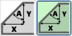 | Fase |
 | Unterfase (Viertelstab) |
 | Fase und Unterfase |
Die folgenden Parameter sind für beide Bearbeitungsarten gleich:
X-Maß | Abstand entlang der X-Achse vom Werkstückrand. |
Y-Maß | Abstand entlang der Y-Achse vom Werkstückrand. |
Neigung A | Neigungswinkel des Schnitts in Grad. |
Neigung B | Neigungswinkel des Schnitts in Bezug auf die Unterfase in Grad. |
Dicke | Die derzeit in Parametrix eingestellte Plattendicke wird angezeigt, um den Bediener beim Anwenden der Bearbeitung zu unterstützen. |
Umfang | Bei Aktivierung dieses Parameters wird die Bearbeitung am gesamten Umfang des Werkstücks ausgeführt. |
Neben den ersten drei geometrischen Parametern befinden sich quadratische Auswahlfelder, die zunächst deaktiviert sind. Eines davon muss aktiviert werden, um festzulegen, welcher Parameter konstant bleiben soll; wird anschließend ein zweiter Wert angegeben, wird der dritte automatisch berechnet. Die Auswahlfelder können nicht aktiviert werden, wenn der Wert des entsprechenden Parameters gleich null ist, um geometrisch inkonsistente oder ungültige Konfigurationen zu vermeiden.
Ausführung der Bearbeitung
Die Bearbeitung kann angewendet werden, indem die Schaltfläche links neben dem entsprechenden Schnitt in der Polygonliste gedrückt wird.
Ein rotes Symbol mit einem „X“ zeigt an, dass die Bearbeitung nicht auf den gewünschten Schnitt angewendet werden kann.
Die Randprofilbearbeitung kann nur an geraden Schnitten ausgeführt werden.
Bei jedem erfolgreich auf das Material angewendeten Randprofil wird die Vorschau aktualisiert und das Randprofil automatisch in den Bereich „Hinzugefügte Bearbeitungen“ links eingefügt.
Ausführung Fase
Seite
Die folgende Abbildung zeigt die Randprofilbearbeitung an einer Werkstückseite an der oberen Kante.
Um die Bearbeitung auf die gewünschte Seite anzuwenden, muss diese angeklickt werden.

Umfang
Die folgende Abbildung zeigt die Randprofilbearbeitung am Werkstückumfang an der oberen Kante.
Um die Bearbeitung auf den Umfang anzuwenden, muss das Kontrollkästchen rechts neben der Beschriftung aktiviert und anschließend eine Werkstückseite angeklickt werden.

Ausführung Unterfase
Seite
Die folgende Abbildung zeigt die Randprofilbearbeitung an einer Werkstückseite an der unteren Kante.
Um die Bearbeitung auf die gewünschte Seite anzuwenden, muss diese angeklickt werden.

Umfang
Die folgende Abbildung zeigt die Randprofilbearbeitung am Werkstückumfang an der unteren Kante.
Um die Bearbeitung auf den Umfang anzuwenden, muss das Kontrollkästchen rechts neben der Beschriftung aktiviert und anschließend eine Werkstückseite angeklickt werden.
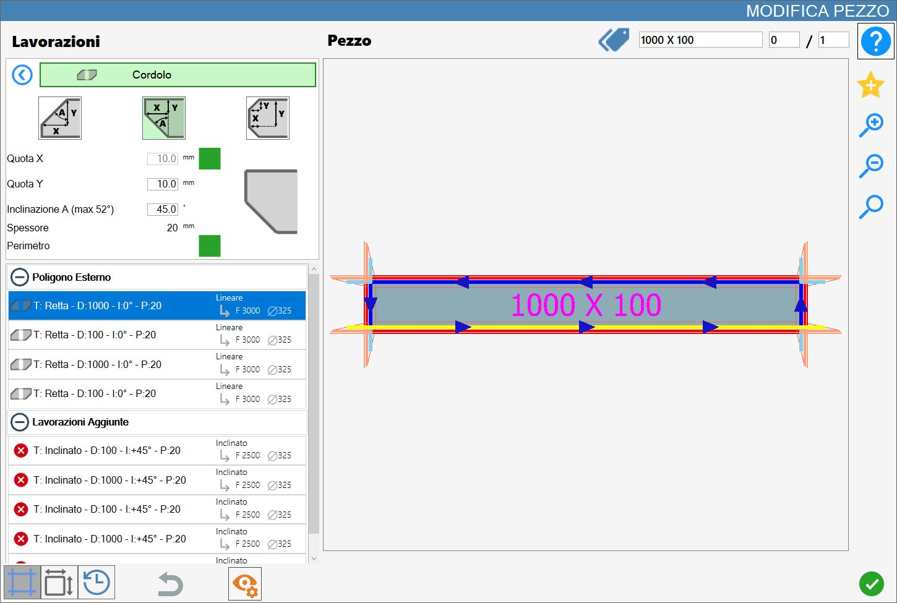
Ausführung Fase und Unterfase
Seite
Die folgende Abbildung zeigt die Randprofilbearbeitung an einer Werkstückseite an der oberen und unteren Kante
Um die Bearbeitung auf die gewünschte Seite anzuwenden, muss diese angeklickt werden.

Umfang
Die folgende Abbildung zeigt die Randprofilbearbeitung am Werkstückumfang an der oberen und unteren Kante.
Um die Bearbeitung auf den Umfang anzuwenden, muss das Kontrollkästchen rechts neben der Beschriftung aktiviert und anschließend eine Werkstückseite angeklickt werden.

Mit dieser Funktion kann der Bediener Bearbeitungen auf der Materialoberfläche ausführen.
/5.00.png)
Bearbeitungsarten
Um diese Bearbeitung zu verwenden, muss zunächst einer der beiden verfügbaren Modi über die entsprechende Schaltfläche ausgewählt werden:
Die Modi „Rechteckige Oberfläche“ und „Zickzack-Oberfläche“ schließen sich gegenseitig aus: Durch Aktivieren eines Modus wird der andere automatisch deaktiviert.
/2.3-20250702-115519.png) | Rechteckige Oberfläche |
/3.3-20250702-115539.png) | Zickzack-Oberfläche |
Parameter
Drehung C-Achse | Bestimmt die Ausrichtung der Bearbeitung, die in Bezug auf die Arbeitsebene horizontal (0_) oder vertikal (90_) sein kann. |
Bahnverlängerung | Jeder durch diese Bearbeitung erzeugte Schnitt wird sowohl am Anfang als auch am Ende um die in diesem Parameter angegebene Länge verlängert. |
Schnitttiefe | Gibt die Bearbeitungstiefe im Material an. |
Ausführung der Bearbeitung
Die Bearbeitung kann angewendet werden, indem die Schaltfläche links neben dem entsprechenden Schnitt in der Polygonliste gedrückt wird.
Ein rotes Symbol mit einem „X“ zeigt an, dass die Bearbeitung nicht auf den gewünschten Schnitt angewendet werden kann.
Ausführung Rechteckige Oberfläche
Nach Einstellung der Bearbeitungsparameter eine Seite des Werkstücks auswählen, auf der die Bearbeitung ausgeführt werden soll.
Die Schnitte werden von unten nach oben ausgeführt.
Ausführung Zickzack-Oberfläche
Nach Einstellung der Bearbeitungsparameter eine Seite des Werkstücks auswählen, auf der die Bearbeitung ausgeführt werden soll.
Die Schnitte werden von unten nach oben ausgeführt.
/5.01.png)
Bearbeitungsparameter der Platte
Der Bediener kann die Parameter für Oberflächenbearbeitungen im Panel der Bearbeitungsparameter der Platte ändern.
/5.02.png)
Rechteckige Oberfläche
Dieser Bildschirm zeigt die Bearbeitungsparameter für den Modus „Rechteckige Oberfläche“.
/9.2.1-20250702-133450.png)
Parameterbeschreibung
/4.1_c-20250703-065057.png) | Abstand zwischen Bahnen im Vorlauf |
/4.2_c-20250703-065231.png) | Abstand zwischen Bahnen im Rücklauf |
/4.3_c-20250703-065258.png) | Nur Vorlaufbahnen |
/4.4_c-20250703-065325.png) | Nur Rücklaufbahnen |
/4.5_c-20250703-065355.png) | Scheibe am Bahnende anheben |
/4.6_c-20250703-065456.png) | Kolbendruck |
Die Aktivierungen der Parameter für Bahnen in einer bestimmten Richtung schließen sich gegenseitig aus.
Wenn einer der beiden aktiviert ist, erzwingt das Programm auch die Aktivierung des Anhebens der Scheibe am Ende der Bahn.
Beschreibung der Geschwindigkeitsparameter
/5.1_b-20250313-160704.png) | Eintauchen |
/5.2_b-20250703-061911.png) | Vorwärts |
/5.3_b-20250703-061803.png) | Rückwärts |
Zickzack-Oberfläche
Dieser Bildschirm zeigt die Bearbeitungsparameter für den Modus „Zickzack-Oberfläche“.
/9.3.1-20250703-060757.png)
Parameterbeschreibung
/6.1_c-20250703-070354.png) | Abstand zwischen Bahnen im Vorlauf |
/6.2_c-20250703-070442.png) | Abstand zwischen Bahnen im Rücklauf |
Mit dieser Funktion kann der Bediener eine Planfräsbearbeitung am Werkstück ausführen.
/2.00.png)
Parameter
Bahnverlängerung | Jeder durch diese Bearbeitung erzeugte Schnitt wird sowohl am Anfang als auch am Ende um die in diesem Parameter angegebene Länge verlängert. |
Ausführung der Bearbeitung
Ausgehend von der in den Materialparametern eingestellten Plattendicke wird das Werkstück wie folgt bearbeitet, um die in den Bearbeitungsparametern eingestellte Zieldicke zu erreichen:
Zunächst werden parallele Schnitte von links nach rechts in einem in den Parametern eingestellten Abstand ausgeführt. Dabei werden die Parameter des linearen Schnitts verwendet.
Anschließend werden Schnitte entlang der Y-Achse ausgeführt, um ein Raster zu erzeugen; auch hierfür werden die Parameter des linearen Schnitts verwendet.
Die anfängliche Plattendicke muss als Materialdicke eingestellt werden (für höhere Genauigkeit kann anschließend eine Antastung hinzugefügt werden).
Die Zieldicke wird in den Bearbeitungsparametern eingestellt (und bezieht sich auf die Arbeitstischhöhe).
Bearbeitungsparameter der Platte
Der Bediener kann die Parameter für das Planfräsen im Panel der Bearbeitungsparameter der Platte ändern.
/2.01.png)
Parameter Planfrässchnitte
/2.02.png)
Parameterbeschreibung
/2.03.png) | Abstand zwischen horizontalen Bahnen |
/2.04.png) | Abstand zwischen vertikalen Bahnen |
/2.05.png) | Planfräshöhe |
/2.06.png) | Werkzeug um 90 Grad drehen |
Mit dieser Funktion kann der Bediener in einem Bereich des Werkstücks eine Nut hinzufügen.
Die Benutzeroberfläche für diese Funktion sieht ähnlich wie in der folgenden Abbildung aus:
/1.0-20250704-082817.png)
Parameter
Abstand vom Rand | Der Bediener muss den gewünschten Abstand von einem der Werkstückränder in mm eingeben. |
Schnittbreite | Der Bediener muss die Bearbeitungsbreite der Nut in mm eingeben. |
Schnitttiefe | Der Bediener muss die Bearbeitungstiefe der Nut in mm eingeben. |
Startabstand | Der Bediener kann den Abstand in mm vom Bezugsschnitt der Nut eingeben. |
Endabstand | Der Bediener kann den Abstand in mm vom Bezugsschnitt des Werkstücks für die Nut eingeben. |
Automatische Tropfrinnen | Der Bediener kann festlegen, ob nach dem Erstellen der Nut automatisch Tropfrinnen am Werkstück erzeugt werden sollen. |
Dicke | Materialdicke. |
Startabstand, Endabstand und automatische Tropfrinnen können mit den Schaltflächen rechts neben dem Wert aktiviert oder deaktiviert werden.
Sind sie deaktiviert, werden sie von Parametrix nicht berücksichtigt; sind sie aktiviert, berechnet das Programm die Verschiebung.
Ausführung der Bearbeitung
Nut mit deaktiviertem Start- und Endabstand
Die Nut wird in einem Abstand von 250mm vom ausgewählten Schnitt erstellt und erstreckt sich über die gesamte Länge des Werkstücks, mit einer Bearbeitungsbreite von 100mm und einer Schnitttiefe von 10mm.
/1.2-20250704-093832.png)
Nut mit aktiviertem Startabstand und deaktiviertem Endabstand
Die Nut wird in einem Abstand von 250mm vom ausgewählten Schnitt erstellt, mit einer Bearbeitungsbreite von 100mm und einer Schnitttiefe von 10mm.
Wie zu sehen ist, beginnt die Nut bei einem eingestellten Startabstand von 100mm in 100m Abstand vom ausgewählten Schnitt.
/1.3-20250704-093940.png)
Nut mit deaktiviertem Startabstand und aktiviertem Endabstand
Die Nut wird in einem Abstand von 250mm vom ausgewählten Schnitt erstellt, mit einer Bearbeitungsbreite von 100mm und einer Schnitttiefe von 10mm.
Wie zu sehen ist, endet die Nut bei einem eingestellten Endabstand von 100mm in 100m Abstand vom ausgewählten Schnitt.
/1.4-20250704-094210.png)
Nut mit aktiviertem Start- und Endabstand
Die Nut wird in einem Abstand von 250mm vom ausgewählten Schnitt erstellt, mit einer Bearbeitungsbreite von 100mm und einer Schnitttiefe von 10mm.
Wie zu sehen ist, beginnt und endet die Nut bei einem Startabstand von 100mm und einem Endabstand von 100mm in 100m Abstand vom ausgewählten Schnitt.
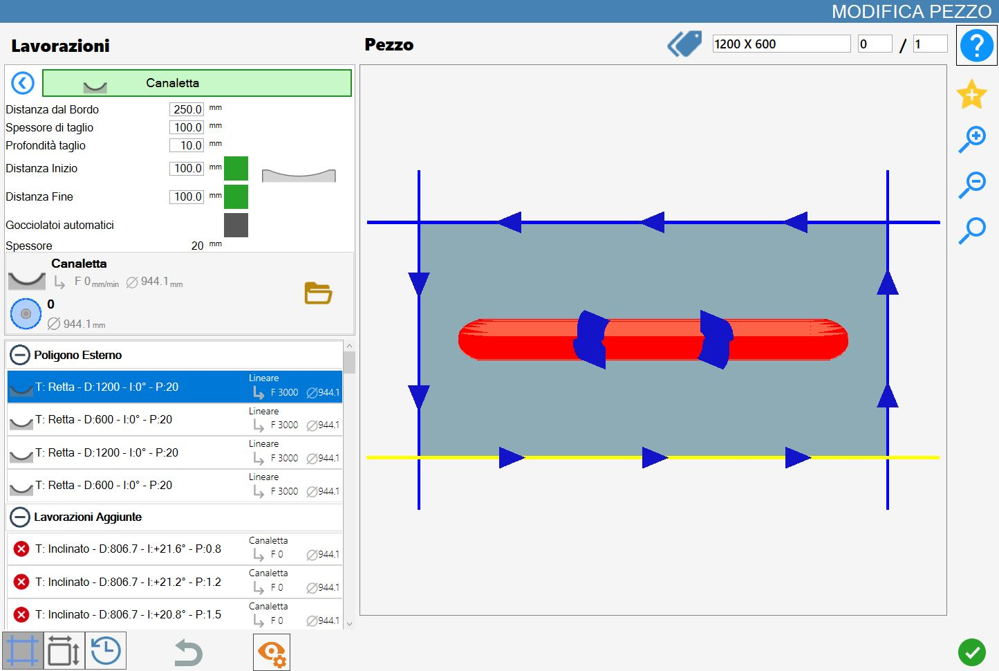
Nut mit aktivierten automatischen Tropfrinnen
Am Werkstück werden automatisch Tropfrinnen hinzugefügt (zu Tropfrinnen siehe Kapitel 3.12.2).
Die Tropfrinnen werden auf halbem Weg zwischen der Nut und dem nächstgelegenen Schnitt positioniert.
/1.6-20250704-094324.png)
Bearbeitungsparameter der Platte
Der Bediener kann die Parameter für die Nuten im Panel der Bearbeitungsparameter der Platte ändern.
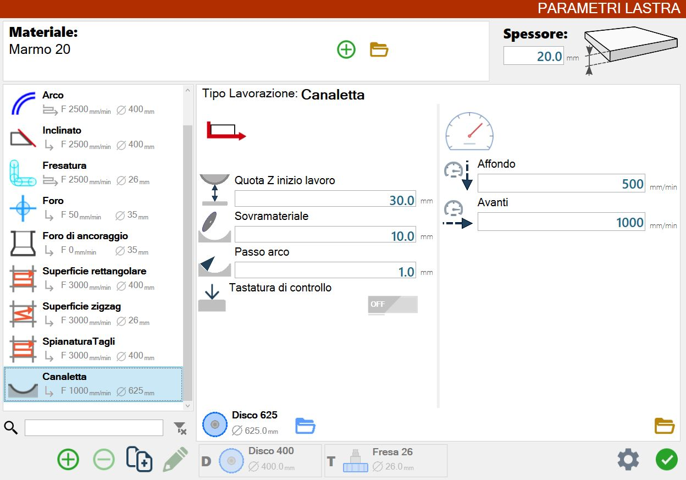
Bearbeitung mit Einzelbahnen
Dieser Bildschirm zeigt die Bearbeitungsparameter für Einzelbahnen.
/2.01.png)
Beschreibung der Parameter
/2.04.png) | Z-Höhe Bearbeitungsbeginn |
/2.05.png) | Aufmaß |
Bogenschritt | |
/2.07.png) | Kontrollantastung |
Bearbeitung mit Stufenbahnen
Dieser Bildschirm zeigt die Bearbeitungsparameter für Stufenbahnen.
/2.02.png)
Beschreibung der Parameter
/2.03.png) | Vorwärts |
Mit dieser Funktion kann der Bediener an einem Eckpunkt oder einer Seite des Werkstücks eine Verrundung hinzufügen.
Die Benutzeroberfläche für diese Funktion sieht ähnlich wie in der folgenden Abbildung aus:

Parameter
Die Modi „Einzelner Eckpunkt“, „Seite“ und „Polygoneckpunkte“ schließen sich gegenseitig aus: Durch Aktivieren eines Modus werden die anderen automatisch deaktiviert.
 | Einzelner Eckpunkt |
 | Seite |
 | Polygoneckpunkte |
Parameter für „Einzelner Eckpunkt“ und „Polygoneckpunkte“
 | Radius R |
Parameter „Seite“
 | Offset 0 |
Ausführung der Bearbeitung
Die Bearbeitung kann angewendet werden, indem die Schaltfläche links neben dem entsprechenden Schnitt in der Polygonliste gedrückt wird.
Ein rotes Symbol mit einem „X“ zeigt an, dass die Bearbeitung nicht auf den gewünschten Schnitt angewendet werden kann.
Nachfolgend wird die Anwendung der Verrundungen in den verschiedenen Modi dargestellt. Eine Vorschau der Bearbeitung ermöglicht dem Bediener, das erwartete Ergebnis zu sehen. Die Bearbeitung wird erst nach Bestätigung mit der grünen Schaltfläche „OK“ tatsächlich angewendet.
!
Bei jeder Anwendung einer Verrundung gehen alle zuvor auf die Werkstückschnitte angewendeten Einstellungen verloren.
Ausführung Verrundung an einem einzelnen Eckpunkt
Bei Auswahl dieses Modus kann die Bearbeitung an einzelnen Eckpunkten des Werkstücks ausgeführt werden.
Damit die Bearbeitung korrekt angewendet wird, darf für den Parameter Radius kein negativer Wert eingestellt werden.
In der folgenden Beispielabbildung wurden drei Verrundungen mit einem Radius von 100,0 mm angewendet.

In der Schnittliste links ergeben sich bei jeder Anwendung einer Verrundung an einem Eckpunkt einige Änderungen:
Vorhandene weitere Bearbeitungen werden entfernt.
In die Liste wird eine Kurve, die neue Verrundung, eingefügt.
Die Längen der an den ausgewählten Eckpunkt angrenzenden Seiten werden um den durch den Parameter Radius festgelegten Wert verkürzt.
Ausführung Verrundung an einer Seite
Bei Auswahl dieses Modus kann die Bearbeitung an den Seiten des Werkstücks ausgeführt werden. Für Verrundungen in diesem Modus gibt es abhängig vom Wert des Parameters Offset zwei Hauptfälle: einen positiven und einen negativen Wert.
In der folgenden Beispielabbildung wurde am unteren Schnitt des ausgewählten Werkstücks eine Verrundung mit einem Offset von 100,0 mm angewendet.

Die folgende Abbildung zeigt das Gegenbeispiel zum vorherigen Fall: Am unteren Schnitt des ausgewählten Werkstücks wurde eine Verrundung mit einem negativen Offset von -100mm angewendet.

In der Schnittliste links ergeben sich bei jeder Anwendung einer Verrundung an einer Seite einige Änderungen:
Vorhandene weitere Bearbeitungen werden entfernt.
Der ausgewählte gerade Schnitt wird durch einen gekrümmten Schnitt ersetzt.
Bei einem positiven Wert des Parameters Offset besteht die eingefügte Verrundung aus einer zum ausgewählten Polygon hin nach innen verlaufenden Kurve, unabhängig davon, ob es sich um ein inneres oder äußeres Polygon handelt.
Bei einem negativen Wert des Parameters Offset besteht die angewendete Verrundung dagegen aus einer vom ausgewählten Polygon nach außen verlaufenden Kurve.
Ausführung Verrundung an den Eckpunkten des ausgewählten Polygons
In diesem Modus können so viele Verrundungen angewendet werden, wie das ausgewählte Polygon Eckpunkte hat.
Damit die Bearbeitung erfolgreich ausgeführt wird, darf kein negativer Radiuswert eingegeben werden.
Die folgende Abbildung zeigt die Bearbeitung an allen Eckpunkten des Werkstücks:

Wie beim Modus für einzelne Eckpunkte ergeben sich bei Verwendung dieses Modus einige Änderungen in der Schnittliste links:
Vorhandene weitere Bearbeitungen werden entfernt.
Der ausgewählte gerade Schnitt wird durch einen gekrümmten Schnitt ersetzt.
Bei einem positiven Wert des Parameters Offset besteht die eingefügte Verrundung aus einer zum ausgewählten Polygon hin nach innen verlaufenden Kurve, unabhängig davon, ob es sich um ein inneres oder äußeres Polygon handelt.
Bei einem negativen Wert des Parameters Offset besteht die angewendete Verrundung dagegen aus einer vom ausgewählten Polygon nach außen verlaufenden Kurve.
Mit der Funktion „Teilen“ kann das Werkstück anhand des Bezugs, der Seite, einer senkrechten Linie oder einer benutzerdefinierten Linie geteilt werden.
Die Benutzeroberfläche für diese Funktion sieht ähnlich wie in der folgenden Abbildung aus:

Parameter
Um diese Bearbeitung zu verwenden, muss zunächst einer der drei verfügbaren Modi über die entsprechende Schaltfläche ausgewählt werden:
 | Paralleler Schnitt |
 | Orthogonaler Schnitt |
 | Schnitt durch zwei Punkte |
Parameter für „Paralleler Schnitt“ und „Orthogonaler Schnitt“
Für die nächsten beiden untenstehenden Schaltflächen kann diese Funktion über das Kontrollkästchen rechts neben der Beschriftung „Schnittverlängerung“ aktiviert oder deaktiviert werden.
Schnitte verlängern | Mit dieser Funktion kann der Bediener den auf die ausgewählte Seite angewendeten Schnitt verlängern, sodass er sich in Schnittrichtung über die gesamte Länge des Werkstücks erstreckt. |
Offset | Der Bediener kann den Abstand des Schnitts entlang der Querachse einstellen, gemessen von der Mitte der Bezugsseite. |
Parameter für „Schnitt durch zwei Punkte“
Für die nächste Schaltfläche können die Koordinaten der beiden Punkte festgelegt werden, aus denen die Trennlinie besteht.
Parameter der Punkte der Trennlinie einstellen | Nach Aktivierung der Funktion stehen vier Parameterfelder zur Verfügung, in denen der Bediener die Koordinaten (X, Y) des Start- und Endpunkts der Schnittlinie angeben kann. |
 | Schnittausrichtung |
 | Eckpunktfang |
Ausführung der Bearbeitung
Die Bearbeitung kann angewendet werden, indem die Schaltfläche links neben dem entsprechenden Schnitt in der Polygonliste gedrückt wird.
Ein rotes Symbol mit einem „X“ zeigt an, dass die Bearbeitung nicht auf den gewünschten Schnitt angewendet werden kann.
Paralleler Schnitt
In der folgenden Abbildung wurde ein paralleler Schnitt am Werkstück ausgeführt, das bereits auf dem Titelbild des Kapitels dargestellt wurde:

Orthogonaler Schnitt
In der folgenden Abbildung wurde ein orthogonaler Schnitt am Werkstück ausgeführt, das bereits auf dem Titelbild des Kapitels dargestellt wurde:

Schnitt durch zwei Punkte
In der folgenden Abbildung wurde ein Schnitt durch zwei Punkte mithilfe der Eckpunktfangfunktion am Werkstück ausgeführt, das bereits auf dem Titelbild des Kapitels dargestellt wurde:

In der folgenden Abbildung wurde ein Schnitt durch zwei Punkte ohne Verwendung einer besonderen Funktion am Werkstück ausgeführt, das bereits auf dem Titelbild des Kapitels dargestellt wurde:

Werkstücke teilen
Wenn dem ausgewählten Werkstück über Teilungsbearbeitungen ein oder mehrere Werkstücke zugeordnet wurden, erscheint oben im Panel „Werkstück bearbeiten“ eine spezielle Schaltfläche zur Verwaltung der zugeordneten Werkstücke.
 | Werkstücke teilen |
|---|
Vor dem Teilen werden die zugeordneten Werkstücke im Arbeitsbereich als Einheit verwaltet. In diesem Zustand wird ein Block aus mehreren Elementen erstellt, auf die dieselben Vorgänge angewendet werden, ohne dass sie bereits getrennt sind.
Wird beispielsweise eines der durch Teilen erzeugten Werkstücke aus der Werkstückliste dem Arbeitsbereich hinzugefügt, werden automatisch auch alle anderen zugeordneten Elemente eingefügt.
Beim Drücken der Schaltfläche Werkstücke teilen, wird jedes durch Teilen erzeugte Werkstück vom ursprünglichen Werkstück getrennt und als unabhängiges Element behandelt.
Anschließend verschwinden sowohl die Liste der zugeordneten Werkstücke, die zuvor oberhalb der Vorschau im Panel Werkstück bearbeiten sichtbar war, als auch die Schaltfläche zum Teilen der Werkstücke aus der Benutzeroberfläche.
Mit der Funktion „Innenausschnitt“ kann dem Werkstück ein rechteckiger, kreisförmiger oder elliptischer Innenausschnitt hinzugefügt werden.
Die Benutzeroberfläche für diese Funktion sieht ähnlich wie in der folgenden Abbildung aus:

Bearbeitungsarten
Um diese Bearbeitung zu verwenden, muss zunächst einer der beiden verfügbaren Modi über die entsprechende Schaltfläche ausgewählt werden:
Die Modi „Rechteckig“, „Kreisförmig“ und „Elliptisch“ schließen sich gegenseitig aus: Durch Aktivieren eines Modus wird der andere automatisch deaktiviert.
 | Rechteckiger Ausschnitt |
 | Kreisförmiger Ausschnitt |
 | Elliptischer Ausschnitt |
Rechteckiger Ausschnitt
Wenn dieser Modus aktiviert ist, wird die Vorschau des rechteckigen Ausschnitts direkt in der Bearbeitungsvorschau hellgrün hervorgehoben. Abmessungen und Position des Ausschnitts hängen von den Standardparametern ab, die vom Benutzer geändert werden können.
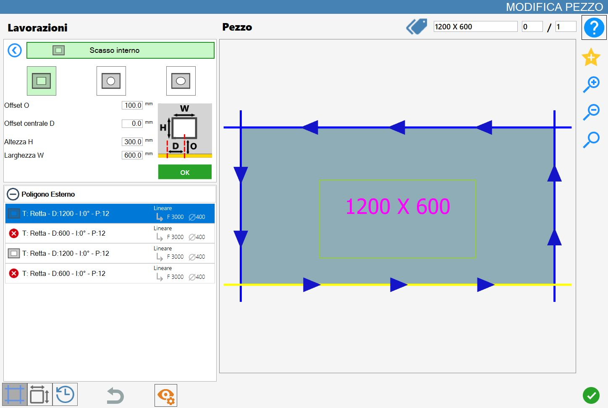
Parameter rechteckiger Ausschnitt
In diesem Modus wird das folgende Parameterpanel angezeigt:

Offset O | Abstand zwischen dem Rand des Ausschnitts und der Bezugsseite des ausgewählten Werkstücks. |
Mittiger Offset D | Abstand zwischen der zur ausgewählten Seite parallelen Werkstückseite und der Mitte des Ausschnitts. |
Höhe H | Höhe des Ausschnitts. |
Breite W | Breite des Ausschnitts. |
Ausführung rechteckiger Ausschnitt
Die Bearbeitung kann angewendet werden, indem die Schaltfläche links neben dem entsprechenden Schnitt in der Polygonliste gedrückt wird.
Ein rotes Symbol mit einem „X“ zeigt an, dass die Bearbeitung nicht auf den gewünschten Schnitt angewendet werden kann.
Nach Bestätigung der Bearbeitung wird dem Werkstück sowohl grafisch als auch in der Polygonliste links ein neues inneres Polygon hinzugefügt:

Kreisförmiger Ausschnitt
Wenn dieser Modus aktiviert ist, wird die Vorschau des kreisförmigen Ausschnitts direkt in der Bearbeitungsvorschau hellgrün hervorgehoben. Abmessungen und Position des Ausschnitts hängen von den Standardparametern ab, die vom Benutzer geändert werden können.

Parameter kreisförmiger Ausschnitt
In diesem Modus wird das folgende Parameterpanel angezeigt:
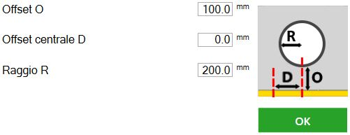
Offset O | Abstand zwischen dem Rand des Ausschnitts und der Bezugsseite des ausgewählten Werkstücks. |
Mittiger Offset D | Abstand zwischen der zur ausgewählten Seite parallelen Werkstückseite und der Mitte des Ausschnitts. |
Radius R | Radius des Ausschnitts. |
Ausführung kreisförmiger Ausschnitt
Die Bearbeitung kann angewendet werden, indem die Schaltfläche links neben dem entsprechenden Schnitt in der Polygonliste gedrückt wird.
Ein rotes Symbol mit einem „X“ zeigt an, dass die Bearbeitung nicht auf den gewünschten Schnitt angewendet werden kann.
Nach Bestätigung der Bearbeitung wird dem Werkstück sowohl grafisch als auch in der Polygonliste links ein neues inneres Polygon hinzugefügt:

Elliptischer Ausschnitt
Wenn dieser Modus aktiviert ist, wird die Vorschau des elliptischen Ausschnitts direkt in der Bearbeitungsvorschau hellgrün hervorgehoben. Abmessungen und Position des Ausschnitts hängen von den Standardparametern ab, die vom Benutzer geändert werden können.

Parameter elliptischer Ausschnitt
In diesem Modus wird das folgende Parameterpanel angezeigt:

Offset O | Abstand zwischen dem Rand des Ausschnitts und der Bezugsseite des ausgewählten Werkstücks. |
Mittiger Offset D | Abstand zwischen der zur ausgewählten Seite parallelen Werkstückseite und der Mitte des Ausschnitts. |
Bis | Wert der großen Halbachse des elliptischen Ausschnitts. |
B | Wert der kleinen Halbachse des elliptischen Ausschnitts. |
Ausführung elliptischer Ausschnitt
Die Bearbeitung kann angewendet werden, indem die Schaltfläche links neben dem entsprechenden Schnitt in der Polygonliste gedrückt wird.
Ein rotes Symbol mit einem „X“ zeigt an, dass die Bearbeitung nicht auf den gewünschten Schnitt angewendet werden kann.
Nach Bestätigung der Bearbeitung wird dem Werkstück sowohl grafisch als auch in der Polygonliste links ein neues inneres Polygon hinzugefügt:

Optional: Bohrungen für Armaturen
Durch Drücken der Schaltfläche links neben „OK“ kann die Option für Armaturenbohrungen aktiviert werden. Diese Option erzeugt zusätzliche Bohrungen zur zentralen Hauptbohrung und blendet einige zu konfigurierende Parameter ein.

Wenn der Durchmesser der Armaturenbohrung gleich oder kleiner als der Wert des maximalen Bohrungsradius ist, werden die Armaturenbohrungen als Bohrungen erstellt; ist der Durchmesser größer als der maximale Bohrungsradius, werden sie als innere Ausschnitte erstellt.
Parameter Armaturenbohrungen
In diesem Modus wird das folgende Parameterpanel angezeigt:

Anzahl Bohrungen | Gibt an, wie viele Bohrungen bei der aktuellen Bearbeitung auf den ausgewählten Schnitt angewendet werden. |
Bohrungsdurchmesser | Gibt den Durchmesser der bei der Bearbeitung angewendeten Bohrungen an. |
Abstand zwischen Bohrungen | Gibt den gemessenen Abstand zwischen den Mittelpunkten zweier aufeinanderfolgender Bohrungen an. |
Abstand vom Ausschnitt | Gibt den Abstand zwischen dem Mittelpunkt der Bohrung und dem Rand des Ausschnitts an. |
Ausführung Armaturenbohrungen
HINWEIS
Die Bearbeitung kann angewendet werden, indem die Schaltfläche links neben dem entsprechenden Schnitt in der Polygonliste gedrückt wird.
Ein rotes Symbol mit einem „X“ zeigt an, dass die Bearbeitung nicht auf den gewünschten Schnitt angewendet werden kann.
Nach Bestätigung der Bearbeitung werden zusätzlich zu einem neuen inneren Polygon des Werkstücks auch die Armaturenbohrungen sowohl grafisch als auch in der Liste der hinzugefügten Bearbeitungen links eingefügt:
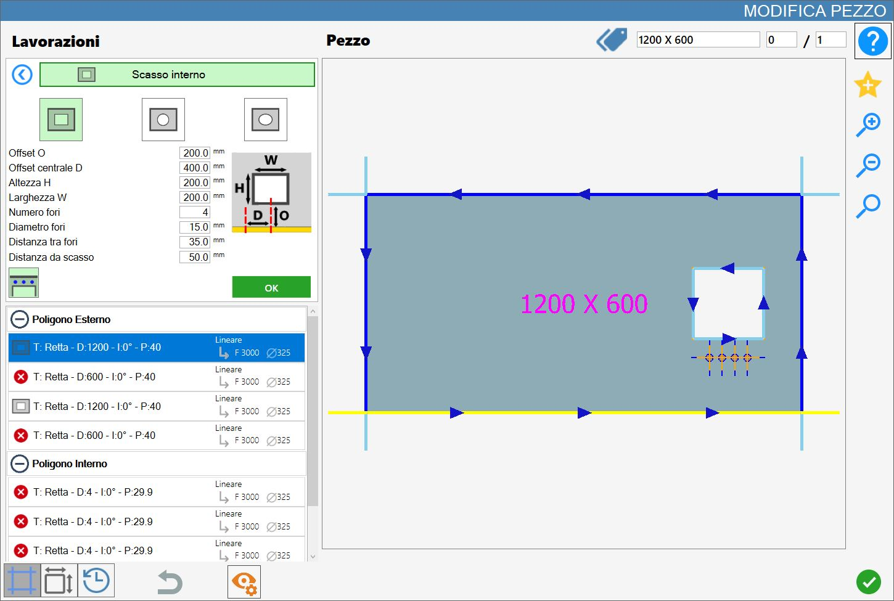
Mit dieser Funktion können am ausgewählten geraden oder gekrümmten Schnitt Bearbeitungen mit dem aktuell an der Maschine montierten Fräser ausgeführt werden, um Flutes zu erzeugen.

Parameter
Das Ergebnis variiert abhängig vom Wert der folgenden Parameter:
Anzahl Flutes | Gibt an, wie viele Flutes bei der aktuellen Bearbeitung auf den ausgewählten Schnitt angewendet werden. |
 | Anzahl neu berechnen |
Länge | Gibt an, wie weit die Flutes in den Schnitt hineinreichen. |
Abstand | Dieser Wert stellt den Abstand zwischen den Flutes dar und berücksichtigt den Durchmesser des montierten Werkzeugs. |
Startabstand | Dieser Wert definiert den Abstand zwischen den im Werkstück liegenden Endpunkten der Flutes und damit den freien Zwischenraum. |
Interne Verlängerung | Gibt an, wie weit die Flutes über den Bezugsschnitt hinaus verlängert werden. |
Anfangstiefe | Eindringtiefe in das Material am Startpunkt der Entwässerungsnut. |
Endtiefe | Eindringtiefe in das Material am Endpunkt der Entwässerungsnut. |
Flute-Typ auf Bögen | Für Flutes auf Kurven stehen drei nachfolgend dargestellte Modi zur Verfügung. |
Schnittbreite | Für Flutes, die im Scheibenmodus eingefügt werden, steht die Variable Schnittbreite zur Verfügung. |
Überlappung Tropfrinne | Für Flutes, die im Füllmodus eingefügt werden, kann der Prozentsatz geändert werden. |
Anzahl neu berechnen
Die Schaltfläche rechts neben der Anzahl der Flutes füllt den ausgewählten Schnitt unter Berücksichtigung der übrigen Parameterwerte mit möglichst vielen Flutes.
Die folgende Beispielabbildung zeigt das Ergebnis der Flute-Füllung im Vergleich zur ersten Abbildung am Kapitelanfang.

Flute-Einfügemodus
Für das Einfügen der Flutes stehen folgende Optionen zur Verfügung:
 | Einfügen nach Anzahl |
Einfügen durch Füllen | |
 | Scheibenmodus |
 | Fräsermodus |
Flute-Modus auf Bögen
Wenn ein gekrümmter Schnitt eines Polygons ausgewählt wird, erscheint ein neuer Parameter, für den einer von drei Werten gewählt werden kann:
 | Radial |
 | Bogenausrichtung |
 | Tangentialausrichtung |
Modus 1: Radial
In diesem Modus haben die Flutes einen gemeinsamen Ursprungspunkt und stehen senkrecht zur jeweiligen Tangente am ausgewählten gekrümmten Schnitt.

Modus 2: Bogenausrichtung
In diesem Modus verlaufen die Flutes parallel zueinander und sind sowohl hinsichtlich Abstand als auch interner Verlängerung bogenförmig ausgerichtet.

Modus 3: Tangentialausrichtung
In diesem Modus verlaufen die Flutes parallel zueinander und sind hinsichtlich der internen Verlängerung bogenförmig ausgerichtet, während sie bis zur Tangente verlängert werden, deren Abstand dem für die Länge angegebenen Wert entspricht.

Ausführung der Bearbeitung
Die Bearbeitung kann angewendet werden, indem die Schaltfläche links neben dem entsprechenden Schnitt in der Polygonliste gedrückt wird.
Ein rotes Symbol mit einem „X“ zeigt an, dass die Bearbeitung nicht auf den gewünschten Schnitt angewendet werden kann.
Sobald das gewünschte Ergebnis erreicht ist, das in der Bearbeitungsvorschau angezeigt und fortlaufend aktualisiert wird, kann der Bediener den Vorgang durch Drücken der grünen Schaltfläche „OK“ direkt unter den eingestellten Parametern bestätigen.
Die in der Vorschau dargestellten Flutes werden anschließend auf den ausgewählten Schnitt angewendet: Ihre Farbe wechselt sowohl in der Vorschau als auch später im Arbeitsbereich zu Dunkelgrün und zeigt damit die erfolgreiche Anwendung an.
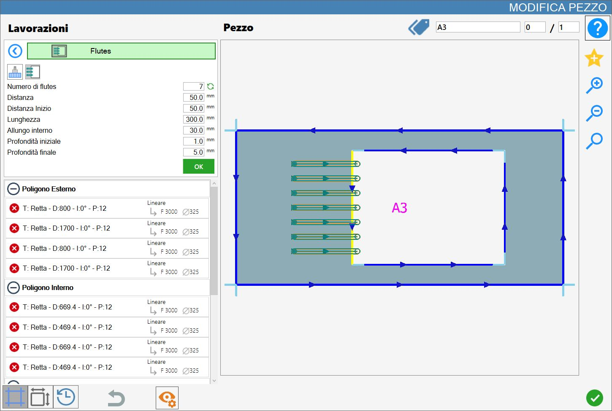
Auch die Schnittliste auf der linken Seite wird entsprechend der neu angewendeten Bearbeitung und den Flute-Parametern aktualisiert.
Auf einen einzelnen Schnitt können mehrere Bearbeitungen dieses Typs angewendet werden, sofern sich ihre Parameter nicht wiederholen.
Mit dieser Funktion kann jedes Werkstück in seine kleinste umschließende Rechteckform umgewandelt werden, also in das kleinste Rechteck, das es vollständig enthält.
Die Benutzeroberfläche für diese Funktion sieht ähnlich wie in der folgenden Abbildung aus:
/2.2-20250630-112112.png)
Parameter
Der folgende Parameter kann durch Anklicken des Kontrollkästchens rechts aktiviert werden.
Minimum ermitteln | Mit dieser Funktion kann die minimale Begrenzung des Werkstücks auf der Plattenoberfläche berechnet und seine Positionierung optimiert werden. |
Ausführung der Bearbeitung
Parameter deaktiviert
Durch Klicken auf „OK“ wird das Werkstück in seine rechteckige Version umgewandelt.
/2.0-20250630-112001.png)
Parameter aktiviert
Nach Aktivierung des Kontrollkästchens und anschließendem Klicken auf „OK“ wird die Bearbeitung am Werkstück ausgeführt:
/2.1-20250630-112041.png)
Mit dieser Funktion kann der Bediener das ausgewählte Werkstück horizontal und/oder vertikal spiegeln.

Parameter
 | Horizontal spiegeln |
 | Vertikal spiegeln |
Ausführung der Bearbeitung
Die horizontale und vertikale Spiegelung können gleichzeitig oder jeweils einzeln angewendet werden.
Daher sind drei Ergebnisse möglich:
Nur horizontale Spiegelung | Nur vertikale Spiegelung | Horizontale und vertikale Spiegelung |
 |  |  |
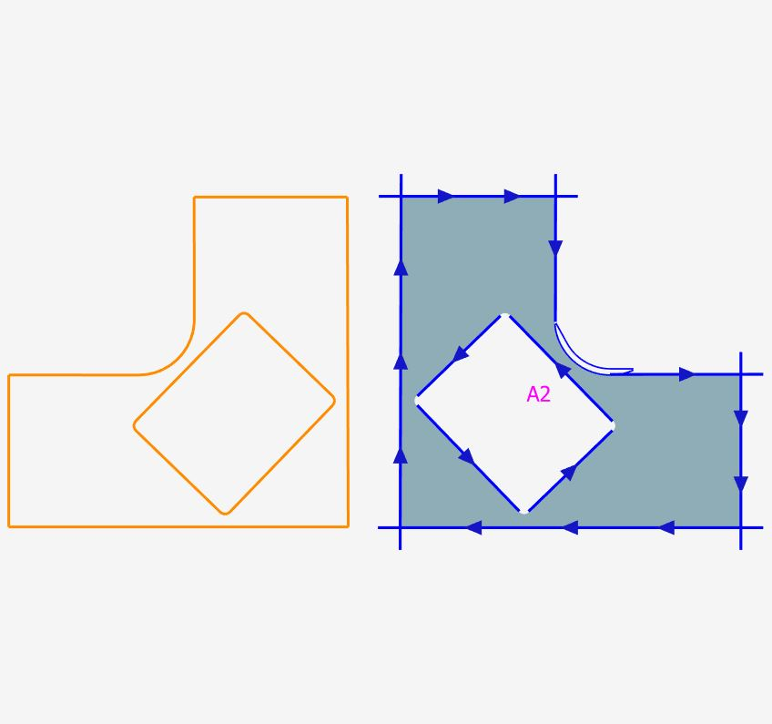 | 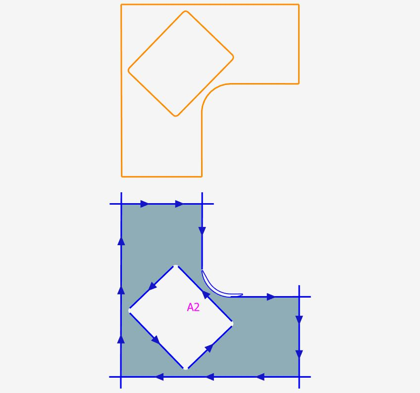 |  |
Die Nesting-Funktion dient dazu, die Werkstücke automatisch und optimiert innerhalb des Plattenumfangs anzuordnen.

Verwendung der Funktion
Um diese Funktion zu verwenden, müssen eine Werkstückliste erstellt und der Umfang definiert werden, in den die Werkstücke eingefügt werden sollen.

Anschließend die Schaltfläche drücken: Das Programm ordnet die Werkstücke automatisch innerhalb des Plattenumfangs an.
Die Werkstücke werden auf der Platte unter Berücksichtigung des Materialbewegungssystems mit Saugnäpfen zur Auflösung von Kollisionen zwischen den Werkstücken sowie unter Berücksichtigung der auf der Platte markierten Defekte angeordnet.
Wenn die gefundene Lösung nicht zufriedenstellend ist, kann die Schaltfläche erneut gedrückt werden, um das Nesting nochmals auszuführen und eine andere Konfiguration zu finden.
Das Programm entfernt alle im Arbeitsbereich vorhandenen Werkstücke, um das Nesting ausführen zu können.
Die Nesting-Funktion ordnet die Werkstücke nach verschiedenen Einfügelogiken an. Daher ändert das Programm bei jedem Drücken der Schaltfläche die Werkstückanordnung bis zu maximal 4 Lösungen (beim fünften Versuch wird wieder die erste Lösung vorgeschlagen).
Das Programm ordnet die Werkstücke auf 4 verschiedene Arten an, damit der Benutzer die Anordnungen vergleichen und die beste auswählen kann.
Einige Beispiele
Nachfolgend werden einige Beispiele für die Verwendung der Nesting-Funktion gezeigt.
Sie kann verwendet werden, um einfach geformte Werkstücke schneller anzuordnen.

Diese Funktion ermittelt die Anordnung und Kombination von Werkstücken, mit der eine möglichst große Plattenfläche genutzt wird.

Das Nesting fügt keine Werkstücke in die zu vermeidenden Bereiche der Platte ein.

Es kann mit Plattenumfängen beliebiger Form gearbeitet werden.

Wenn mehrere Umfänge vorhanden sind, ordnet das Nesting die Werkstücke in jedem von ihnen an.

Die Verwendung des automatischen Nestings ist besonders nützlich, wenn sehr viele Werkstücke bearbeitet werden müssen und die verschiedenen Kombinationen nicht mehr einfach manuell verwaltet werden können.
Je nach eingestellten Parametern können unterschiedliche Lösungen entstehen. Diese werden auf dem Bildschirm angezeigt und der Bediener kann die bevorzugte Konfiguration auswählen.
/0.00.png)
Schaltflächen
/0.04.png) | Hinzufügen |
/0.05.png) | Löschen |
/0.06.png) | Bearbeiten |
/0.07.png) | Ausführung |
Konfiguration bearbeiten
Beim automatischen Nesting können die Parameter angepasst werden, die für die Berechnung der Werkstückpositionierung innerhalb des einer Konfiguration zugeordneten Arbeitsbereichs verwendet werden.
Je nach Art der zu bearbeitenden Werkstücke können bessere und leistungsfähigere Strategien zur Verfügung stehen.
/0.11.png)
Name | Name der Konfiguration, die in der Liste erscheint. |
Plattenabstand | Abstand, den die Werkstücke bei der Positionierung vom Plattenrand einhalten müssen. |
Anz. zu durchsuchender Lösungen | Anzahl der vom Nesting berechneten Lösungen. Aus allen berechneten Lösungen wird die beste ausgewählt. |
Anz. Verschiebeversuche | Anzahl der Versuche, bei denen das Werkstück verschoben wird, wenn es nicht in den Plattenumfang passt. |
Verschiebewert | Wert, um den das Werkstück verschoben wird, um zu versuchen, es innerhalb des Plattenumfangs zu positionieren. |
Anz. Versuche auf derselben Platte | Anzahl der Versuche, das Werkstück innerhalb desselben Umfangs zu positionieren, wenn es nicht hineinpasst. |
Timeout Lösungsberechnung | Maximal zulässige Zeit für die Berechnung jeder einzelnen Lösung. |
Listenreihenfolge verwenden | Erzwingt den Versuch, die Werkstücke innerhalb des Umfangs in der Reihenfolge zu positionieren, in der sie in der Werkstückliste stehen. |
Benutzerdefinierte Reihenfolge verwenden | Ermöglicht die Auswahl der Reihenfolge, in der versucht wird, die Werkstücke anhand bestimmter Eigenschaften innerhalb des Plattenumfangs zu positionieren. |
Werkstück erzwingen, bevor zum nächsten gewechselt wird | Ermöglicht die Auswahl, ob versucht werden soll, das Werkstück an verschiedenen Stellen innerhalb des Plattenumfangs zu positionieren, oder ob ohne weitere Versuche zum nächsten Werkstück gewechselt wird. |
Fester Startpunkt | Ermöglicht die Auswahl des Punkts am Umfang, von dem aus mit dem Einfügen der Werkstücke begonnen wird. |
Zeilen-/Spaltenmodus festlegen | Ermöglicht die Auswahl, ob beim Einfügen der Werkstücke eine Logik beibehalten werden soll, nach der sie in Zeilen, Spalten oder zufällig angeordnet werden. |
Werkstückdrehmodus | Ermöglicht die Auswahl der Logik, nach der Werkstücke bei Positionierungsversuchen innerhalb des Plattenumfangs gedreht werden können. |
Größtes inneres Rechteck verwenden | Wenn aktiviert, werden die Werkstücke innerhalb des flächengrößten Rechtecks positioniert, das im Umfang enthalten ist. |
Deep Nesting aktivieren | Wenn deaktiviert, werden die Werkstücke so auf der Platte positioniert, dass die Nutzung des Materialhandhabungssystems mit Saugnäpfen zur Kollisionsauflösung optimiert wird. |
Nesting ausführen
Durch Drücken des blauen Pfeils neben jedem Eintrag in der Liste wird das Nesting mit dieser Konfiguration berechnet.
Eine Vorschau des Ergebnisses wird im rechten Bereich eingefügt. Sie zeigt die Anordnung der Werkstücke innerhalb des Umfangs und den Prozentsatz der Plattenfläche, der von den Werkstücken bedeckt wird.
/0.08.png)
Wenn die Werkstückanordnung nicht zufriedenstellend ist, kann der blaue Pfeil erneut gedrückt werden, um das Ergebnis neu zu berechnen.
Nach Ausführung aller Nesting-Konfigurationen werden die Ergebnisse so angeordnet, dass zuerst diejenigen angezeigt werden, die die größte Plattenfläche nutzen.
/0.09.png)
Nach Auswahl der bevorzugten Konfiguration die Bestätigungsschaltfläche drücken. Die Werkstücke werden gemäß der gewählten Anordnung auf der Platte positioniert. Die Position der Werkstücke im Arbeitsbereich kann weiterhin vom Bediener geändert werden.
/0.10.png)
Der Bediener kann die Positionierung der Werkstücke auf dem Arbeitstisch durch direkte Interaktion im Arbeitsbereich ändern.

Funktionen
 | Mehrfachauswahl |
 | Alles auswählen |
 | Werkstücke entfernen |
 | Werkstücke bewegen |
 | Werkstücke drehen |
 | Vorgang rückgängig machen |
 | Werkstücke magnetisch ausrichten |
 | Gehrungsschnitt |
 | Werkstück-Offset ändern |
Werkstücke auswählen
Um ein Werkstück auszuwählen, in dessen Inneres drücken. Der Hintergrund der Werkstücke ist hellblau, wenn sie nicht ausgewählt sind, und rot, wenn sie ausgewählt sind.

Mehrfachauswahl
Durch Drücken der Schaltfläche wird der Mehrfachauswahlmodus aktiviert. In diesem Modus können mehrere Werkstücke gleichzeitig ausgewählt werden. Um ein Werkstück abzuwählen, in einen bereits ausgewählten Umfang drücken.

Alle Werkstücke auswählen
Mit dieser Schaltfläche können alle im Arbeitsbereich vorhandenen Werkstücke gleichzeitig ausgewählt oder abgewählt werden.

Werkstücke entfernen
Durch Drücken der Schaltfläche werden die ausgewählten Werkstücke aus dem Arbeitsbereich entfernt und wieder in die Werkstückliste eingefügt, sodass sie später erneut verfügbar sind.

Werkstücke verschieben
Um das ausgewählte Werkstück zu verschieben, innerhalb des Umfangs gedrückt halten und es im Arbeitsbereich ziehen.
Alternativ kann das Bedienfeld zum Verschieben mit Richtungspfeilen verwendet werden.

Diese Funktion wird auf alle ausgewählten Werkstücke angewendet. Daher können mehrere Werkstücke gleichzeitig verschoben werden.
Schaltflächen
 | Richtungspfeile |
 | Verschiebung entlang der Seitenachse |
Werkstücke entlang der Standardachsen bewegen
Das Werkstück soll um 1500 mm nach links verschoben werden.


Werkstücke entlang der Seitenachse bewegen
Das Werkstück soll relativ zur Achse seiner Seite um 1500 mm nach links verschoben werden.
Dazu muss die entsprechende Schaltfläche aktiviert sein.


Werkstücke drehen
Um die ausgewählten Werkstücke zu drehen, außerhalb des Umfangs gedrückt halten und sie im Arbeitsbereich ziehen.
Alternativ kann das Bedienfeld zur Drehung um festgelegte Winkel verwendet werden.

Diese Funktion wird auf alle ausgewählten Werkstücke angewendet. Daher können mehrere Werkstücke gleichzeitig gedreht werden.
Schaltflächen
 | Drehung im Uhrzeigersinn |
 | Drehung gegen den Uhrzeigersinn |
 | Drehung 90_ |
Drehung anwenden
Auf das Werkstück soll eine Drehung um 45 Grad im Uhrzeigersinn angewendet werden.


Vorgang rückgängig machen
Diese Funktion dient zum Rückgängigmachen des zuletzt ausgeführten Vorgangs.
Wenn der Bediener beispielsweise versehentlich ein Werkstück löscht, kann er durch Drücken dieser Schaltfläche zum Zustand vor dem Löschen zurückkehren.
Es gibt keinen Verlauf der vorgenommenen Änderungen; durch mehrmaliges Drücken der Schaltfläche können jedoch mehrere Vorgänge rückgängig gemacht werden.


Mit dieser Funktion können die Seiten verschiedener Werkstücke ausgerichtet werden.

Werkstücke in den Arbeitsbereich ziehen
Wird ein Werkstück in die Nähe eines anderen verschoben, werden die einander nahen Seiten gelb, wie in der folgenden Abbildung:

Wird das Werkstück anschließend losgelassen, richtet es sich exakt an der Seite des anderen Werkstücks aus:

Wenn die Schnitte nicht parallel sind, wird das Werkstück in eine zum Schnitt parallele Position gedreht.
Zwei Schnitte ausrichten
Die Magnetfunktion kann verwendet werden, um zwei Schnitte auszurichten.
Dazu nacheinander den Schnitt auswählen, der bewegt werden soll, und anschließend den Schnitt, an dem das Werkstück magnetisch ausgerichtet werden soll.
Der erste Schnitt wird so verschoben, dass er parallel zum zweiten ausgewählten Schnitt liegt.
Wenn die Schnitte nicht parallel sind, wird das Werkstück in eine zum Schnitt parallele Position gedreht.


Ausrichtung an Entspannungsschnitten
In diesem Modus können die Schnitte eines Werkstücks an den Entspannungsschnitten einer Platte ausgerichtet werden.


Ausrichtung an Laserreferenzen
Mit demselben Verfahren können Schnitte sowohl an Linien- als auch an Kreuzlaserreferenzen magnetisch ausgerichtet werden.
Beim Linienlaser wird die ausgewählte Seite an der Referenz ausgerichtet.


Beim Kreuzlaser wird das Werkstück so verschoben, dass die Laserreferenz mit dem nächstgelegenen Eckpunkt des ausgewählten Schnitts übereinstimmt.
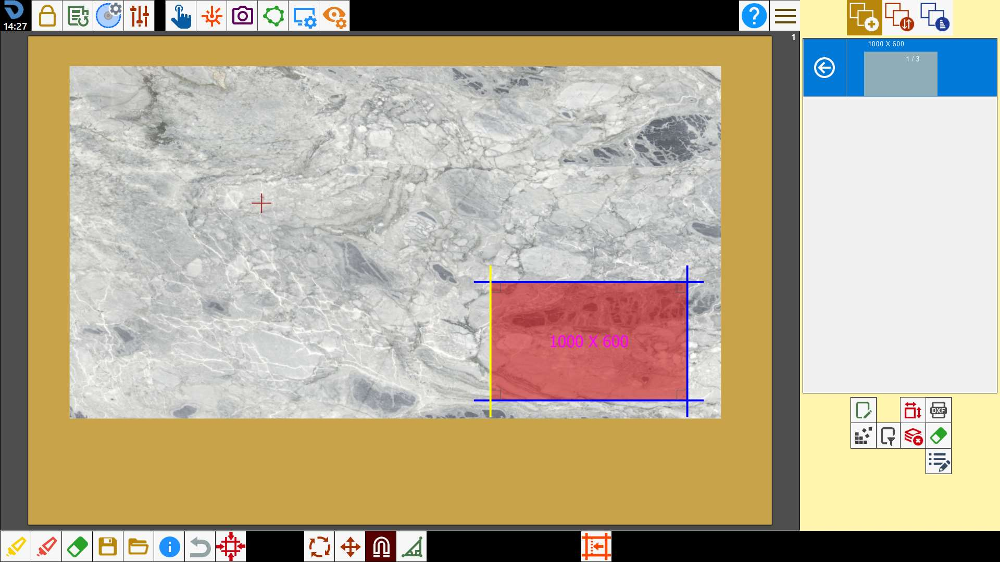

Mit dieser Funktion kann der Bediener Randprofile anwenden oder eine Seite des ausgewählten Werkstücks neigen.

Schaltflächen
 | Positive Winkelrichtung |
 | Negative Winkelrichtung |
 | Winkel zwischen Hypotenuse und Y-Seite - Y-Seite |
 | Hypotenuse - Winkel zwischen Hypotenuse und Y-Seite |
 | Hypotenuse - Y-Seite |
 | X-Seite - Winkel zwischen Hypotenuse und Y-Seite |
X und Y werden vom Benutzer angegeben | |
 | X-Seite - Hypotenuse |
Ausführung der Bearbeitung
Auf das ausgewählte Werkstück wird ein Gehrungsschnitt von _45_ angewendet.
Die Schaltfläche mit dem _ auswählen und die Zahl 45 in das darunterliegende Feld eingeben.

Die Werkstückseite auswählen, auf die dieser Gehrungsschnitt angewendet werden soll. Nach der Auswahl wird der Gehrungsschnitt automatisch erstellt.

Diese Änderung wird nicht auf die Werkstücke der Liste angewendet, die zur selben Zeile wie das geänderte Werkstück gehören.
Wir wenden einen Schnitt mit den Seitenlängen an, indem die entsprechende Schaltfläche gedrückt wird:

Nach Betätigung der Schaltfläche ergibt sich folgendes Ergebnis:
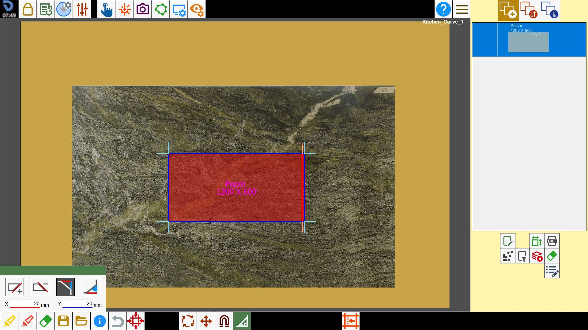
Um den Schnittmodus zu ändern, genügt es, die ausgewählte Schaltfläche zu drücken; sie wechselt dann von einem Modus zum nächsten.
Schnellbefehle
Durch Rechtsklick auf den Schnitt eines Werkstücks im Arbeitsbereich erscheint ein Fenster mit Befehlen zum Ändern seiner Neigung.

Es öffnet sich ein kleines Panel, über das die Abmessungen eines Werkstücks geändert werden können.

Schaltflächen
 | Abmessungen magnetisch angleichen |
 | Höhe |
 | Höhe |
 | Verlängerungsbetrag |
 | Änderung anwenden |
 | Touch-Schritt |
Bearbeitungen ausführen
Werkstück verlängern
Die Offset-Änderung kann auf eine Werkstückseite angewendet werden, indem im Feld „Verlängerungsbetrag“ ein Wert eingegeben wird.
Ein positiver Wert vergrößert die Fläche, ein negativer Wert verkleinert sie.
Die Seite auswählen, auf die der Offset angewendet werden soll, und den Vorgang mit der Schaltfläche rechts neben dem Eingabefeld bestätigen.
Beispiel rechteckiges Werkstück


Beispiel nicht rechteckiges Werkstück


Touch-Schritt
Der Offset einer Seite des ausgewählten Werkstücks kann geändert werden, indem der Wert „Touch-Schritt“ eingestellt und die Seite direkt im Viewer gezogen wird.
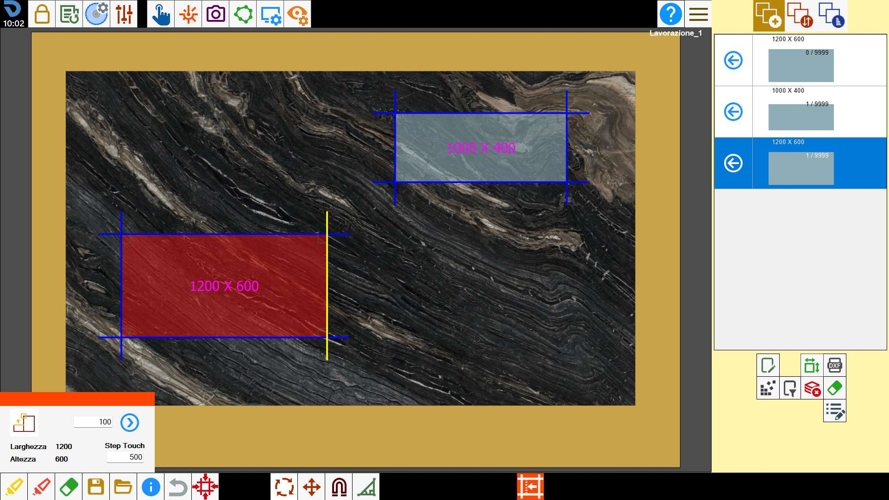
Die ausgewählte Seite kann in durch den Wert „Touch-Schritt“ festgelegten Abständen verschoben werden. Das Werkstück wird jeweils neu aufgebaut, sofern die Offset-Änderung möglich ist.

Größe ändern
Ein Werkstück wird skaliert, indem seine Seite in Richtung der Seite eines anderen Werkstücks gezogen wird.

Auf die Seite des zu skalierenden Werkstücks klicken und sie zur Seite des anderen Referenzwerkstücks ziehen.

Mit dieser Funktion kann der Zustand der Platte und der erstellten Werkstücke gespeichert werden.

Schaltflächen
 | Speichern |
Zustand speichern
Nachdem die Werkstücke im Arbeitsbereich angeordnet wurden, kann das Bedienfeld zum Speichern des Zustands geöffnet werden.
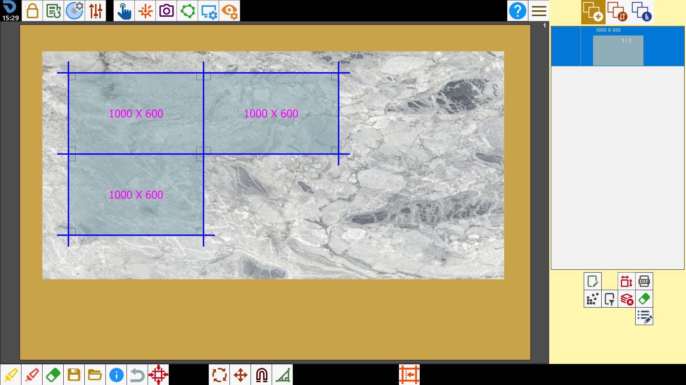
Den gewünschten Dateinamen im oberen Textfeld eingeben.
Die Auswahl mit der Schaltfläche Speichern bestätigen.
Auf dem dritten Parametrix-Bildschirm kann außerdem der Zustand einer Bearbeitung gespeichert werden, nachdem die auf der Platte auszuführenden Schnitte programmiert wurden.

Als DXF speichern (Optional)
Mit dieser Funktion können der Zustand der Platte und der darin enthaltenen Werkstücke in einer DXF-Datei gespeichert werden.
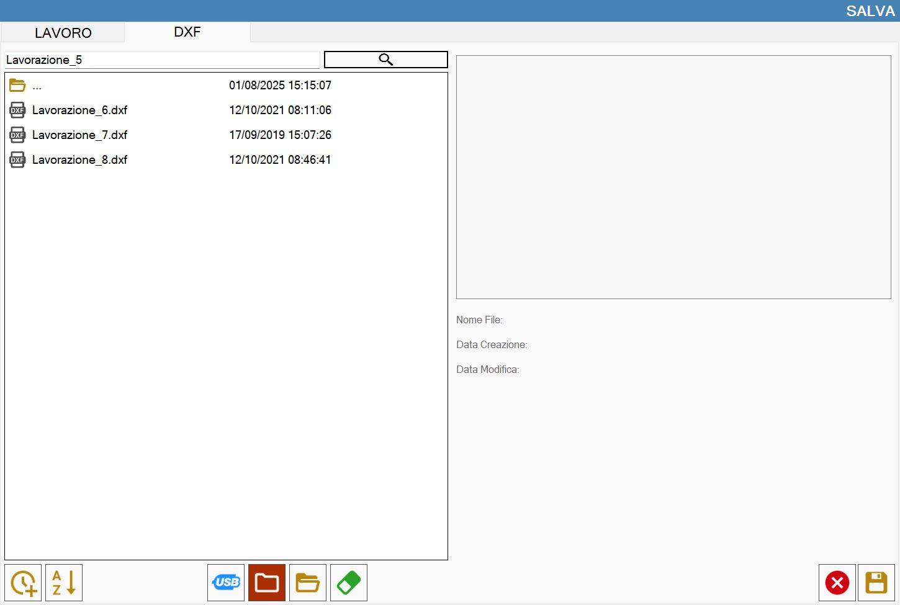
Mit dieser Funktion kann eine zuvor in Parametrix gespeicherte Bearbeitung geladen werden.

Werkstückliste
Im linken Bereich befindet sich die Liste der Zustandsdateien, die geladen werden können.

Schaltflächen
 | Nach Datum sortieren |
 | Nach Name sortieren |
 | USB-Speicher |
Arbeitsordner | |
 | Ordner durchsuchen |
 | Datei löschen |
 | Datei suchen |
Vorschau
In diesem Bereich wird eine Vorschau der aus der Liste ausgewählten Datei angezeigt.
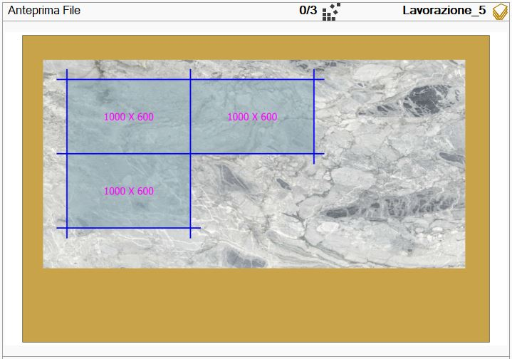
Unter der Vorschau werden die Platten- und Werkzeugparameter der ausgewählten Datei sowie der Maschine angezeigt, jeweils im oberen bzw. unteren Bereich.

Um eine Bearbeitung vollständig zu öffnen, müssen die Dateiparameter mit den Maschinenparametern identisch sein.
Andernfalls werden Dateiparameter, die von den Maschinenparametern abweichen, rot hervorgehoben.
Wenn die Parameter nicht übereinstimmen, wird die Bearbeitung nur teilweise geöffnet, nur als Werkstückanordnung. Eine Meldung weist den Benutzer darauf hin, dass Änderungen an den Schnitten nicht ausgeführt werden können.

Weitere Schaltflächen
Slab Matching | |
 | Zustand laden |
Zustand laden
Auf der Hauptseite das Bedienfeld zum Laden eines Zustands öffnen.
Anschließend die Datei der Bearbeitung auswählen, die wiederhergestellt werden soll.
Nach der Bestätigung werden die Werkstücke erstellt und mit allen auf sie angewendeten Vorgängen in den Arbeitsbereich eingefügt.
Ebenso kann eine zuvor programmierte Bearbeitung mit allen ausgeführten Vorgängen geladen werden.

Diese Funktion wird verwendet, um eine zuvor gespeicherte Bearbeitung erneut in die Maschine zu laden.

DXF importieren (Optional)
Mit dieser Funktion kann der Zustand einer in einer DXF-Datei gespeicherten Bearbeitung geladen werden.

Besäumschnitte aus DXF-Layout importieren
Nun kann eine Platte mit den zugehörigen Besäumschnitten in Parametrix importiert werden, indem diese in einem entsprechenden Layer der DXF-Datei gezeichnet werden.
Der Name des Layers für die Besäumschnitte muss zusammen mit einem Donatoni-Techniker festgelegt werden. Nach der Konfiguration kann er nicht mehr geändert werden.
In diesem Layer muss jeder Besäumschnitt durch eine Linie dargestellt werden.
Bei der Erstellung der DXF-Datei müssen folgende Regeln eingehalten werden:
Der Plattenumfang muss vorhanden sein;
der Plattenumfang muss rechteckig sein;
die Seiten des Umfangs müssen horizontal oder vertikal verlaufen und dürfen nicht gedreht sein;
jede Besäumschnittlinie muss parallel zu einer Seite des Rechtecks verlaufen;
pro Seite darf höchstens eine Besäumschnittlinie vorhanden sein;
wenn für dieselbe Seite mehrere Linien gezeichnet sind, verwendet Parametrix nur die dem Rand nächstgelegene.

Um die Datei zu importieren, in Parametrix die Seite DXF-Layout importieren öffnen und die gewünschte Datei auswählen.
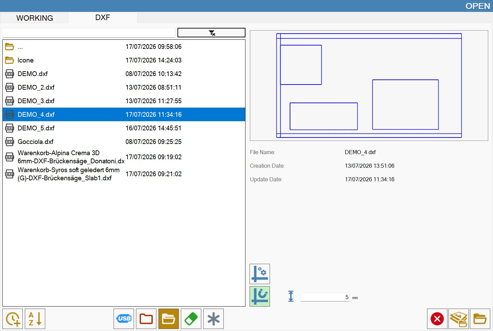
Verfügbare Einstellungen
Auf dem Bildschirm zur Dateiauswahl können einige Einstellungen über die Schaltflächen unter der Vorschau auf der rechten Bildschirmseite geändert werden.
Automatischer Modus | |
 | Magnetmodus |
 | Magnetabstand |
Beispiele
Die Bilder zeigen eine DXF-Datei mit Plattenumfang, Werkstücken und Besäumschnitten sowie das nach dem Import in Parametrix erzielte Ergebnis.

Mit dieser Funktion kann der Bediener ein im Büro vorbereitetes Schnittprojekt laden und an die tatsächliche Position und Größe der auf der Maschine befindlichen Platte anpassen.

Schaltflächen
 | Offset X-Achse |
 | Offset Y-Achse |
 | Drehung |
 | Richtungspfeile für Verschiebung |
 | Drehung im/gegen den Uhrzeigersinn |
 | Positionierung zurücksetzen |
 | Automatisches SlabMatching |
 | Werkstücke anzeigen/ausblenden |
SlabMatching verwenden
Der Bediener kann im Büro das Schnittprojekt einer Platte anhand eines auf dem Gestell aufgenommenen Fotos planen und speichern.

Nach Aufnahme eines Fotos der Platte auf dem Arbeitstisch kann der Bediener an der Maschine die im Büro gespeicherte Projektdatei mit der Funktion SlabMatching laden.

Im geöffneten Fenster werden das aufgenommene Foto des Arbeitstischs und die Vorschau des im Büro programmierten Plattenumfangs angezeigt.
Die auf dem Bildschirm sichtbaren Elemente bedeuten:
Blau | Umfang der im Büro programmierten Platte. |
Magenta | Umrisse der Werkstücke innerhalb der im Büro programmierten Platte. |
Rot | Ursprüngliche Position der im Büro programmierten Platte. |
Grün | Position der Platte auf dem Arbeitstisch. |
Der Bediener kann den Umfang innerhalb des Arbeitsbereichs durch Ziehen, mit den Pfeilen oder über die Schaltfläche für die automatische Ausrichtung an die korrekte Position verschieben und/oder drehen.
Nachdem der Umfang korrekt positioniert wurde, wird bestätigt; anschließend werden die Werkstücke wie in der Datei auf der tatsächlichen Platte positioniert angezeigt.

Dieses Bedienfeld ermöglicht die Anzeige einiger Informationen zur Bearbeitung und zu den in der Maschine montierten Werkzeugen.
Außerdem kann schnell auf den Statistikbildschirm zugegriffen werden.

Information
 | Platteninformationen |
 | Scheibeninformationen |
Informationen zum zweiten Werkzeug | |
Bearbeitungsname |
Schaltflächen
 | Statistiken |
Ermöglicht die Kontrolle der Position des Werkstücks im Arbeitsbereich im Verhältnis zur Position in der Maschine. Wenn „Maschine auf Schnitt“ aktiviert wird, wird ein Schnitt auf dem Bildschirm ausgewählt und die Maschine fährt an die entsprechende Position.
Dieser Vorgang ist nützlich, um zu prüfen, ob ein Schnitt innerhalb des Materials liegt.

Ausführung
Durch Drücken der Schaltfläche wird die Maschine im Arbeitsbereich angezeigt.

Durch Drücken eines Schnitts fährt die Maschine so, dass die Mitte der Scheibe auf dem dem ausgewählten Punkt nächstgelegenen Schnittende positioniert wird.
Erweiterter Modus (Optional)
Im erweiterten Modus können verschiedene Maschinenelemente am ausgewählten Punkt positioniert werden.
Nach Aktivierung der Funktion erscheint das folgende Bedienfeld:

 | Scheibenmitte ausrichten |
 | Kreuzlaser ausrichten |
 | Zweites Werkzeug ausrichten |
 | Tool Plus ausrichten |
Die vierte und letzte Schaltfläche des kleinen Bedienfelds ist nur sichtbar, wenn die Maschine über „Tool Plus“ verfügt.
Scheibenmitte ausrichten
Entspricht dem Standardmodus. Die Maschine fährt so, dass die Scheibenmitte auf dem dem ausgewählten Punkt nächstgelegenen Schnittende positioniert wird.

Kreuzlaser ausrichten
Die Maschine fährt so, dass der Zeiger des Kreuzlasers auf dem dem ausgewählten Punkt nächstgelegenen Schnittende positioniert wird.

Fräser oder Kernbohrer ausrichten
Die Maschine fährt so, dass die Mitte des zweiten in der Maschine montierten Werkzeugs, Fräser oder Kernbohrer, auf dem dem ausgewählten Punkt nächstgelegenen Schnittende positioniert wird.
Um diese Funktion verwenden zu können, muss die Neigung der A-Achse auf 90_ gebracht werden.

Tool Plus ausrichten
Die Maschine fährt so, dass die Mitte des am Tool Plus montierten Werkzeugs auf dem dem ausgewählten Punkt nächstgelegenen Schnittende positioniert wird.

Nachdem die Werkstücke im Arbeitsbereich positioniert wurden, kann der Bildschirm zur Verwaltung der Schnittreihenfolge der Werkstücke geöffnet werden.

Schaltflächen
Die Anordnung der Werkstücke in der rechten Liste gibt die Reihenfolge an, in der sie geschnitten werden.
Mit den darunterliegenden Schaltflächen kann diese Reihenfolge geändert oder eine Pause bei der Ausführung der Vorgänge zwischen zwei Werkstücken eingefügt werden.
 | Verschieben mit Pfeilen |
  | Verschieben an die gewünschte Position |
 | Reihenfolge im Arbeitsbereich auswählen |
 | Pause |
Verschieben mit Pfeilen
Mit diesen Schaltflächen kann das ausgewählte Werkstück an die darüber- oder darunterliegende Position verschoben werden.
Im folgenden Beispiel soll das Werkstück an zweiter Position an den Anfang der Liste verschoben werden.
Vor dem Verschieben | Nach dem Verschieben |
 |  |
Verschieben an die gewünschte Position
Diese Funktion ermöglicht das Verschieben des ausgewählten Elements an die im danebenliegenden Textfeld angegebene Listenposition.
In diesem Beispiel soll das letzte Werkstück der Liste an die erste Position verschoben werden. Dazu muss der Wert „1“ in das Feld eingegeben und anschließend die Schaltfläche gedrückt werden.
Vor dem Verschieben | Nach dem Verschieben |
 |  |
Reihenfolge im Arbeitsbereich auswählen
Mit dieser Funktion kann die Schnittreihenfolge der Werkstücke direkt im Arbeitsbereich ausgewählt werden.
Durch Drücken der Schaltfläche schreibt das Programm auf jedes Werkstück eine Zahl, die dessen Position in der Liste angibt.
Um die Reihenfolge zu ändern, nacheinander in das Werkstück klicken, das zuerst, dann das zweite usw. sein soll.
Nach Abschluss die Schaltfläche erneut drücken, um die getroffene Auswahl zu bestätigen.
Pause
Bei der Festlegung der Schnittreihenfolge der Werkstücke kann zwischen der Ausführung der Vorgänge an zwei Werkstücken eine Pause eingestellt werden.
Das Programm führt alle Schnitte der Werkstücke vor der Pause aus, stoppt anschließend die Maschine und wartet auf den Start-Befehl des Bedieners.

Die Pause wird nach der Bearbeitung des ausgewählten Werkstücks eingefügt, das in diesem Fall das erste in der Liste ist.
Über die dritte Schaltfläche oben rechts wird der Bildschirm zur Optimierung und Verwaltung der Schnitte geöffnet.

Untere Leiste
Im unteren Bereich werden einige Schaltflächen für Vorgänge an den Schnitten angezeigt.

Schaltflächen
 | Platte antasten |
 | ISO-Programm erstellen |
 | Manuelles Verschieben |
 | Automatisches Verschieben |
 | Mehrfachauswahl |
Einzelschnitt | |
 | Arbeitstisch waschen |
 | Vorgänge an Schnitten |
 | Schnittsimulation |
Die von der Maschine auszuführenden Schnitte werden in dieser Liste angezeigt.
Über die Schnittliste kann der Bediener:
Die Ausführungsreihenfolge der Schnitte ändern.
Die Eigenschaften eines Schnitts ändern.
Pausen zwischen den Schnitten einfügen.

Listenelemente

 | Schnitt aktivieren/deaktivieren |
 | Schnittart |
 | Bearbeitungstyp |
Funktionen
Die Anordnung der Schnitte in der rechten Liste gibt die Reihenfolge an, in der sie ausgeführt werden.
Mit den darunterliegenden Schaltflächen kann diese Reihenfolge geändert oder eine Pause bei der Ausführung der Vorgänge zwischen zwei Schnitten eingefügt werden.
 | Verschieben mit Pfeilen |
 | Verschieben an die gewünschte Position |
 | Reihenfolge im Arbeitsbereich auswählen |
 | Pause |
Schnitt löschen | |
 | Schnitt bearbeiten |
 | Zusätzliche Werkstückeigenschaften |
Am Ende der Liste wird außerdem Folgendes angezeigt:
 | Geschätzte Schnittzeit |
Verschieben mit Pfeilen
Mit diesen Schaltflächen kann der ausgewählte Schnitt eine Position nach oben oder unten verschoben werden.
Im folgenden Beispiel soll der Schnitt an fünfter Position um eine Position nach oben verschoben werden.
Vor dem Verschieben | Nach dem Verschieben |
 |  |
Verschieben an die gewünschte Position
Diese Funktion ermöglicht das Verschieben des ausgewählten Elements an die im danebenliegenden Textfeld angegebene Listenposition.
In diesem Beispiel soll der fünfte Schnitt der Liste auf die zweite Position verschoben werden. Dazu muss der Wert „2“ in das Feld eingegeben und anschließend die Schaltfläche gedrückt werden.
Vor dem Verschieben | Nach dem Verschieben |
|
Reihenfolge im Arbeitsbereich auswählen
Mit dieser Funktion kann die Schnittreihenfolge direkt im Arbeitsbereich ausgewählt werden.
Nach Drücken der Schaltfläche schreibt das Programm auf jeden Schnitt eine Zahl, die dessen Position in der Liste angibt.

Um die Reihenfolge zu ändern, nacheinander in den Schnitt klicken, der an erster Stelle stehen soll, dann in den zweiten usw.
Nach Abschluss die Schaltfläche erneut drücken, um die getroffene Auswahl zu bestätigen.
Pause
Zwischen der Ausführung eines Schnitts und des nächsten kann eine Pause eingefügt werden.
Das Programm führt alle Schnitte vor der Pause aus, stoppt anschließend die Maschine und wartet auf den Start-Befehl des Bedieners.

Die Pause wird immer nach der Ausführung des ausgewählten Schnitts eingefügt.
Dies kann beispielsweise zum Werkzeugwechsel verwendet werden.
Schnitt löschen
Nach Drücken der Schaltfläche erscheint neben jedem Listeneintrag ein Radiergummisymbol.
Anschließend einen Schnitt drücken, um ihn endgültig zu löschen.
Mit diesem Panel kann der Bediener einige Eigenschaften eines Schnitts ändern.

Schaltflächen
Oben links kann der Aktivierungsstatus des Schnitts geändert werden.
 | Schnitt aktivieren/deaktivieren |
Je nach Typ des ausgewählten Schnitts werden unterschiedliche Versionen dieses Panels angezeigt.
Scheibenschnitte
Bei Auswahl eines linearen oder bogenförmigen Scheibenschnitts wird das folgende Panel angezeigt:

Scheibenschnitte sind durch einen Start- und einen Endpunkt gekennzeichnet. Die Pfeile definieren die Bewegungsrichtung vom Start zum Ende.

In der folgenden Tabelle sind die Schaltflächen aufgeführt, mit denen der Bediener die Schnitteigenschaften ändern kann:
 | Schnittrichtung umkehren |
 | Verlängerungsbetrag |
 | Scheibenrest berechnen |
 | Schnitt verlängern |
 | Schnitt verkürzen |
 | Startende bis zum Plattenrand verlängern |
 | Endende bis zum Plattenrand verlängern |
 | Kurze Schnitte verlängern |
Zusätzlich werden einige Daten zur Ausführung des Schnitts angezeigt.
 | Eintauchen |
 | Geschwindigkeit in Prozent |
 | Neigung |
Schnitt im Arbeitsbereich ändern
Wenn ein Schnitt im Arbeitsbereich ausgewählt und die rechte Maustaste gedrückt wird, erscheint ein Fenster zum schnellen Ändern des Schnitts.

Die Schaltflächen entsprechen den bereits aufgeführten Funktionen. Das dem Klickpunkt nächstgelegene Schnittende wird verlängert.
Schnitte an inneren Bögen
Bei Schnitten an Bögen, deren Krümmung zum Inneren des Werkstücks zeigt, muss berücksichtigt werden, dass der Scheibenrest während der Bearbeitung die Seite beschädigen kann.
Aus diesem Grund müssen diese Schnitte anders als Schnitte an äußeren Bögen ausgeführt werden.

Parametrix bietet zwei Modi zum Schneiden innerer Bögen, die über die Schaltfläche oben rechts ausgewählt werden können.
 | Geneigter Bogen |
 | Versetzter Bogen |
Standardmäßig empfiehlt Parametrix, diese Schnitte im Modus „Geneigter Bogen“ zu bearbeiten.
Wenn dies nicht gewünscht ist, muss der Ausführungsmodus jedes einzelnen Schnitts geändert werden.
Jeder Bearbeitungsmodus hat Vor- und Nachteile:
Geneigte Bögen ermöglichen eine bessere Oberflächenqualität des Endergebnisses, sodass weniger manuelle Nacharbeit erforderlich ist.
Sie beanspruchen die Maschine jedoch stärker; daher muss die Bearbeitung mit reduzierter Geschwindigkeit und mehreren Bahnen ausgeführt werden.Versetzte Bögen belasten die Maschine bei der Bearbeitung weniger und können daher mit höheren Geschwindigkeiten ausgeführt werden.
Dafür verursacht der Scheibenrest größere Schäden am Material, und bei der manuellen Nachbearbeitung muss mehr Material entfernt werden.
Bohrungen und Fräsbearbeitungen
Bei Bearbeitungen wie Bohrungen und Fräsbearbeitungen stehen dem Bediener weniger Änderungsmöglichkeiten zur Verfügung.

Folgende Informationen sind verfügbar:
 | Eintauchen |
 | Werkzeugdurchmesser |
Absenkungen und Eckbohrungen
Eckbohrungen und Absenkungen sind Bearbeitungen, die jeweils aus mehreren Bohrungen bzw. Fräsbearbeitungen bestehen. Wird einer dieser Einträge ausgewählt, wird eine Liste aller zugehörigen Schnitte angezeigt.

Der Bediener kann jeden Schnitt einzeln über die Schaltfläche an jedem Listeneintrag aktivieren oder deaktivieren oder über die obere Schaltfläche gleichzeitig auf alle Schnitte der Bearbeitung einwirken.
Mit den Schaltflächen unter der Liste kann die Reihenfolge geändert werden, in der die einzelnen Schnitte ausgeführt werden.
 | Verschieben mit Pfeilen |
 | Verschieben an die gewünschte Position |
Außerdem kann der Bediener die Eindringtiefe der Bearbeitung über das folgende Feld ändern:
| Eintauchen |
Mit dieser Funktion kann am Anfang des Schnittprogramms ein Antastzyklus der Platte hinzugefügt werden.
Der Zyklus ermöglicht die Messung der tatsächlichen Plattendicke.

Funktion ausführen
Nach Drücken der Schaltfläche fordert das Programm den Benutzer auf, im Arbeitsbereich den Punkt der Platte auszuwählen, an dem die Antastung durchgeführt werden soll.

Die Antastposition wird auf dem Bildschirm durch ein magentafarbenes Symbol angezeigt.
Dieser Vorgang wird anschließend am Anfang der Schnittliste eingefügt.

Mit dieser Funktion können mehrere Schnitte im Arbeitsbereich ausgewählt werden.

Schaltflächen
Scheibenschnitte auswählen/abwählen | |
 | Bohrungen auswählen/abwählen |
 | Fräsbearbeitungen auswählen/abwählen |
 | Absenkungen auswählen/abwählen |
Auswahl im Arbeitsbereich
Durch Drücken der Schaltfläche wird der Mehrfachauswahlmodus aktiviert. In diesem Modus können mehrere Schnitte gleichzeitig ausgewählt werden. Um einen Schnitt abzuwählen, im Arbeitsbereich darauf klicken oder den entsprechenden Eintrag in der Schnittliste drücken.

Scheibenschnitte auswählen
Mit dieser Schaltfläche können alle mit der Scheibe ausgeführten Schnitte im Arbeitsbereich gleichzeitig ausgewählt werden.
Beispielsweise lineare Schnitte, Bogenschnitte und Gehrungsschnitte.
Bohrungen auswählen
Mit dieser Schaltfläche können alle Bohrungen im Arbeitsbereich, einschließlich Eckbohrungen, gleichzeitig ausgewählt werden.
Fräsbearbeitungen auswählen
Mit dieser Schaltfläche können alle Fräsbearbeitungen im Arbeitsbereich gleichzeitig ausgewählt werden.
Dazu gehören Fräsbearbeitungen und Flutes, jedoch keine Absenkungen.

Absenkungen auswählen
Mit dieser Schaltfläche können alle Absenkungen im Arbeitsbereich gleichzeitig ausgewählt werden.

Mit dieser Funktion kann die Platte geteilt und das Material mit Saugnäpfen verschoben werden.

Schaltflächen
 | Manuelle Handhabung |
 | Automatische Handhabung |
Manuelle Handhabung
Mit dieser Funktion kann der Bediener die Platte mithilfe von Schnitten teilen und das Material mit Saugnäpfen in die gewünschte Position verschieben.
Je nach Anzahl der ausgewählten Schnitte stehen bei dieser Funktion zwei Modi zur Verfügung.
Einzelauswahlmodus
Um eine Bewegung mit Saugnäpfen auszuführen, muss ein Scheibenschnitt – linear oder als Bogen – ausgewählt und die Schaltfläche gedrückt werden.
Der Schnitt wird, sofern möglich, bis zum Plattenrand verlängert.
Ist der ausgewählte Schnitt geneigt, wird automatisch ein zusätzlicher linearer Schnitt hinzugefügt, damit die Platte geteilt werden kann.
Daraufhin öffnet sich das folgende Panel, in dem Richtung, Bewegungsrichtung und Abstand der gewünschten Verschiebung festgelegt werden können.

Im rechten Bereich befinden sich folgende Schaltflächen:
 | Richtungsverschiebung |
Einen Pfeil im Arbeitsbereich oder eine der Schaltflächen rechts auswählen, um Richtung und Bewegungsrichtung der Verschiebung festzulegen.
Die Platte wird geteilt und entsprechend dem ausgewählten Schnitttyp verschoben.
Der Verschiebeabstand der Platte kann in beiden Fällen im Textfeld unter den vier Richtungsschaltflächen geändert werden.
Der ausgewählte Schnitt wird in der Liste der auszuführenden Schnitte so weit oben wie möglich positioniert. Unmittelbar danach wird die Bewegung mit den Saugnäpfen ausgeführt.
Mehrfachauswahlmodus
Der Mehrfachauswahlmodus ermöglicht das Anheben von Werkstücken beliebiger Form. Dazu müssen die gewünschten Schnitte zum Teilen der Platte mithilfe des Mehrfachauswahlmodus ausgewählt werden.

Nach der Auswahl die Schaltfläche drücken, um den Vorgang zu starten.
Die ausgewählten Schnitte werden, sofern möglich, so verlängert, dass sie einen durchgehenden Pfad bilden, der die Platte teilen kann. Sind einer oder mehrere ausgewählte Schnitte geneigt, werden sie automatisch durch nicht geneigte Schnitte ersetzt.
Daraufhin öffnet sich das folgende Panel.

Nach Auswahl des zu verschiebenden Plattenteils kann die Bewegung durch Ziehen im Arbeitsbereich oder mit einer der folgenden Schaltflächen festgelegt werden:
 | Schritt |
 | Verschiebung entlang der Achsen |
 | Schnittkollision prüfen |
 | Ursprüngliche Position wiederherstellen |
Nach der Bestätigung werden die ausgewählten Schnitte an den Anfang der Liste der auszuführenden Schnitte gesetzt. Unmittelbar danach wird die Bewegung mit den Saugnäpfen ausgeführt.

Der Mehrfachauswahlmodus ermöglicht das Anheben von Werkstücken beliebiger Form und damit auch auskragender Werkstücke.
Die Prüfung der Durchführbarkeit der Bewegung liegt in der Verantwortung des Bedieners.
Regeln für eine gültige Schnittauswahl
Damit die Platte korrekt geteilt werden kann, müssen bei der Auswahl der Schnitte einige Vorgaben beachtet werden.
Die ausgewählten Schnitte können Scheibenschnitte (Geraden oder Bögen), Fräsbearbeitungen und Mehrfachbohrungen an Ecken sein.
Die ausgewählten Schnitte müssen einen Pfad bilden können, der die Platte in zwei Teile trennt. Die Auswahl von Schnitten, die einen geschlossenen Pfad bilden, ist nicht zulässig.
Das Programm verlängert lineare Scheibenschnitte automatisch, bis eine Lösung zum Teilen der Platte gefunden wird. Bogenschnitte, Fräsbearbeitungen und Bohrungen werden dagegen nicht automatisch geändert.
Daher wird empfohlen, als ersten und letzten Schnitt des Pfads lineare Scheibenschnitte zu verwenden.Bei Innenecken, an denen der Scheibenrest eine vollständige Materialtrennung verhindert, müssen Eckfräsungen oder Mehrfachbohrungen eingefügt werden.
Die Eindringtiefe der ausgewählten Schnitte muss ausreichen, um die Platte zu trennen.
Der erste und der letzte Schnitt müssen zwingend aus der Platte herausführen können.
Meldung Vorgang nicht möglich
Wenn das Programm die Handhabung als nicht durchführbar einstuft, können folgende Ursachen vorliegen:
Die ausgewählten Schnitte reichen nicht aus, um einen Pfad zu erzeugen, der die Platte in zwei Teile trennt;
Die ausgewählten Schnitte bilden einen geschlossenen Pfad;
Die ausgewählten Schnitte können das Werkstück aufgrund des Scheibenrests nicht vollständig trennen;
Die Verlängerung der ausgewählten Schnitte würde andere Werkstücke beschädigen;
Die Eindringtiefe mindestens eines ausgewählten Schnitts reicht nicht aus, um die Platte zu trennen;
Automatische Handhabung
Mit dieser Funktion versucht das Programm automatisch Situationen zu lösen, in denen ein oder mehrere Werkstücke im Arbeitsbereich durch andere Schnitte beschädigt werden.

Der Algorithmus analysiert die Anordnung der Schnitte und bestimmt selbstständig, wie und wo die Bewegungen ausgeführt werden sollen, um die Reihenfolge der Vorgänge zu optimieren.

Es ist jedoch zu beachten, dass die automatische Berechnung nicht alle Fälle bewältigen kann. In besonders komplexen Situationen kann ein manueller Eingriff erforderlich sein, um die Bewegungen abzuschließen oder zu korrigieren.
Position der Saugnäpfe ändern
In dieser Phase kann der Bediener sowohl die Greifposition der Saugnäpfe als auch die Aktivierung der zugehörigen Vakuumbereiche ändern, um einen optimalen und sicheren Halt des Materials zu gewährleisten.
Dazu den Eintrag „Verschieben“ in der Liste auswählen und die Schaltfläche zum Ändern der Schnitte drücken.

Mit den Schaltflächen in diesem Panel kann der Bediener mit den Saugnäpfen interagieren.
| Richtungsverschiebung |
 | Drehung der Saugnäpfe |
 | Schema der Saugnapfgruppe |
Mit dieser Funktion können lineare Scheibenschnitte manuell auf dem Arbeitstisch eingefügt werden.
Schaltflächen

 | Richtungsverschiebung |
 | Löschen |
 | Horizontaler Schnitt |
 | Vertikaler Schnitt |
Funktion ausführen
Nach Drücken der Schaltfläche fordert das Programm den Benutzer auf, im Arbeitsbereich den Start- und Endpunkt des hinzuzufügenden Schnitts auszuwählen.
Die Position der Endpunkte des Schnitts kann geändert werden, indem sie ausgewählt und im Arbeitsbereich gezogen oder mit den Richtungspfeilen verschoben werden.

Der Bediener kann erzwingen, dass der resultierende Schnitt horizontal oder vertikal ausgerichtet ist.

Nach der Bestätigung wird der neue Schnitt am Ende der Liste hinzugefügt.

Ein Waschzyklus für den Bereich kann manuell gestartet, das automatische Hinzufügen des gesamten Arbeitstischs aktiviert und ein zu reinigender Abschnitt ausgewählt werden.

Parameter

 | Höhe |
 | Höhe |
 | Bereich erstellen |
 | Verschieben |
 | Werkstück waschen |
 | Arbeitstisch reinigen |
Automatischer Waschzyklus |
Einfügemodus für einen Waschzyklus
Beim Hinzufügen eines Waschzyklus wird im Arbeitsbereich ein Rechteck eingefügt, das den zu waschenden Bereich des Arbeitstischs kennzeichnet.
Es können mehrere Waschzyklen eingefügt werden; die jeweiligen Bereiche dürfen sich teilweise oder vollständig überlappen.
Jeder neue Waschzyklus wird am Ende der Schnittliste auf der rechten Seite eingefügt.
Manuelle Bereichsauswahl
Durch Drücken der Schaltfläche wird das Hinzufügen anpassbarer Waschbereiche aktiviert.
Der Bereich kann anschließend verschoben und skaliert werden.

Nach der gewünschten Anpassung des Bereichs für den Waschzyklus kann durch erneutes Drücken der Schaltfläche ein weiterer zu waschender Bereich hinzugefügt werden.

Werkstück waschen
Bei Aktivierung dieses Modus kann der Bediener ein Werkstück auswählen. Nach der Auswahl erzeugt das System automatisch einen rechteckigen Bereich, der das ausgewählte Werkstück vollständig umschließt, wie im folgenden Beispiel dargestellt:

Komplette Reinigung des Arbeitstischs
In diesem Modus fügt das System automatisch einen Schnitt namens „Arbeitstisch waschen“ in die Schnittliste ein und zeigt die entsprechende Darstellung im Arbeitsbereich an.

Mit dieser Funktion können benutzerdefinierte Sortierungen und Vorgänge auf die Schnitte angewendet werden.

Verfügbare Vorgänge
 | Nach Bearbeitung sortieren |
 | Macro |
 | Einzelvorgänge |
 | Bearbeitungen an den Anfang sortieren |
 | Bearbeitungen ans Ende sortieren |
 | Nach Schnitten sortieren |
Ausführungsreihenfolge der Bearbeitungen
Ermöglicht dem Bediener, die Ausführungsreihenfolge der Schnitte anhand des verwendeten Bearbeitungstyps festzulegen.
Die Liste besteht aus den für die Ausführung der Schnitte erforderlichen Bearbeitungen.
Das Ändern der Bearbeitungsreihenfolge ändert auch die Reihenfolge der Schnitte in der Liste.
Die in dieser Liste angezeigten Bearbeitungstypen beziehen sich auf die den Schnitten im Arbeitsbereich zugeordneten Bearbeitungen.
Daher können unterschiedliche Einträge angezeigt werden.
Untere Leiste
Die Listenelemente können mit einigen Verschiebeschaltflächen sortiert werden.
 | Verschieben |
 | An Anfang/Ende |
Macro
Es können Macros definiert und angewendet werden. Jede davon ermöglicht dem Bediener, erweiterte Sortieroptionen auf die Schnitte anzuwenden.
Durch Auswahl einer Macro im oberen Bereich des Panels kann der Bediener alle in dieser Macro enthaltenen Vorgänge anzeigen.

Die für den Bediener verfügbaren Macros können in den Benutzerparametern verwaltet werden.
Daher können unterschiedliche Einträge angezeigt werden.
Schaltflächen
Vorgang anwenden |
Einzelvorgänge
Einige Vorgänge können durch Drücken des grünen Pfeils rechts neben jedem Listeneintrag angewendet werden.

Verfügbare Einzelvorgänge
 | Automatisch verschieben |
 | Alle Schnitte außerhalb der Platte |
 | Nach Werkzeug sortieren |
Nach Bearbeitungstyp sortieren | |
 | Schnitte an Schnittpunkten kürzen |
Alle Schnitte außerhalb der Platte
Nachfolgend wird ein Beispiel für die oben genannte Bearbeitung vor ihrer Anwendung gezeigt:

Und das nach der Anwendung erzielte Ergebnis:

Schnitte an Schnittpunkten kürzen
Mit diesem Vorgang kann der Bediener sich überschneidende Schnitte kürzen, um Beschädigungen im Inneren eines Werkstücks zu vermeiden.
In der folgenden Beispielabbildung gibt es 6 Überschneidungen zwischen den Werkstückschnitten, die im Arbeitsbereich durch kleine hellblaue Kreise dargestellt sind:

Die Anwendung dieses Vorgangs verkürzt die Schnitte so, dass mögliche Überschneidungen vermieden werden.

Verfügbare Einzelvorgänge (Optional)
Die Verfügbarkeit bestimmter Einzelvorgänge kann abhängig von der Einstellung der folgenden Optionen festgelegt werden.
Werkstück entladen
Wenn die Funktion Werkstück entladen aktiviert ist, stehen einige spezielle Einzelvorgänge zur Verfügung:
 | Werkstücke entladen |
| Alle Werkstücke mit Wiederholung entladen |
| Wasserzeichen mit Wiederholung entladen |
Doppelscheibe
Wenn die Funktion Doppelscheibe aktiviert ist, stehen einige spezielle Einzelvorgänge zur Verfügung:
Für Doppelscheibe verlängern | |
Für Doppelscheibe prüfen |
Bearbeitungen an den Anfang sortieren
Der Bediener kann die Ausführungsreihenfolge der Bearbeitungen ändern und eine der in diesem Fenster angezeigten Bearbeitungen an die erste Stelle setzen.

Die in dieser Liste angezeigten Bearbeitungstypen beziehen sich auf die den Schnitten im Arbeitsbereich zugeordneten Bearbeitungen.
Daher können unterschiedliche Einträge angezeigt werden.
Bearbeitungen ans Ende sortieren
Der Bediener kann die Ausführungsreihenfolge der Bearbeitungen ändern und eine der in diesem Fenster angezeigten Bearbeitungen an das Ende setzen.
Die in dieser Liste angezeigten Bearbeitungstypen beziehen sich auf die den Schnitten im Arbeitsbereich zugeordneten Bearbeitungen.
Daher können unterschiedliche Einträge angezeigt werden.
Nach Schnitten sortieren
Mit diesen Vorgängen kann die Reihenfolge der Schnitte in der Liste anhand bestimmter Kriterien geändert werden, die von ihrer Anordnung im Arbeitsbereich abhängen.

Sortiervorgänge nach Schnittposition
Untere Schnitte zuerst | |
Obere Schnitte zuerst | |
Rechte Schnitte zuerst | |
 | Linke Schnitte zuerst |
 | Horizontale Schnitte 0_ zuerst |
 | Vertikale Schnitte 90_ zuerst |
 | Schnitte mit Richtung zuerst |
 | Außen nach innen |
 | Innen nach außen |
Im Panel der Benutzerparameter befindet sich im ersten Fenster Benutzerwerte der Eintrag „Aktiver Vorgang“. Daneben wird der vom Bediener aktivierte Vorgang angezeigt. Zum Hinzufügen, Ändern oder Löschen muss auf den danebenliegenden Stift geklickt werden; daraufhin öffnet sich dieses Fenster:

Schaltflächen der unteren Leiste
Schaltflächen für die allgemeine Macro-Verwaltung
 | Automatische Vorgänge aktivieren/deaktivieren |
 | Vorgänge verwalten |
Schaltflächen zur Verwaltung der Macro-Liste:
 | Hinzufügen |
 | Löschen |
 | Name ändern |
 | Kopieren |
Schaltfläche zur Verwaltung des Inhalts einer einzelnen Macro:
| Vorgang bearbeiten |
Vorgänge verwalten
Es öffnet sich das folgende Fenster. Hier kann für jeden der vier nachfolgend erläuterten Vorgangstypen (Standard, Bearbeitungen an den Anfang sortieren, Bearbeitungen ans Ende sortieren und Nach Schnitten sortieren) festgelegt werden, ob ein Vorgang aktiviert werden soll.

Vorgang hinzufügen
Es öffnet sich das folgende Fenster, in dem der Name für die neue Bearbeitung festgelegt werden kann:

Nach Bestätigung des Namens der neuen Macro wird diese im linken Panel hinzugefügt und ist zunächst leer:

Vorgang bearbeiten
Nachfolgend ist das Bearbeitungsfenster für den ausgewählten Vorgang dargestellt:

Schaltflächen ausgewählte Vorgänge
 | Nach Bearbeitung sortieren |
 | Standardvorgänge |
 | Bearbeitungen an den Anfang sortieren |
 | Bearbeitungen ans Ende sortieren |
 | Nach Schnitten sortieren |
Schaltflächen zur Vorgangsverwaltung
 | Vorgang hinzufügen/entfernen |
 | Sortierung verschieben |
Reihenfolge der Vorgänge umkehren (Optional)
Diese Option kann aktiviert werden, um die Reihenfolge der Vorgänge umzukehren.
Wenn beispielsweise folgende Vorgänge gedrückt werden:
Untere Schnitte zuerst
Außen nach innen
Linke Schnitte zuerst
Die tatsächliche Reihenfolge der Vorgänge ist:
Linke Schnitte zuerst
Außen nach innen
Untere Schnitte zuerst
Da die Positionen überschrieben werden, steht diese Option zur Verfügung, damit die Vorgänge in chronologischer Reihenfolge ausgeführt werden können.
Bei aktivierter Option ist die Reihenfolge der Vorgänge in diesem Fall daher:
Untere Schnitte zuerst
Außen nach innen
Linke Schnitte zuerst
Eine Macro aktivieren
Nachdem die Macro erstellt und wie gewünscht bearbeitet wurde, kann sie ausgewählt und aktiviert werden.
 | Macro aktivieren deaktiviert |
 | Macro aktivieren aktiviert |
 | Macro aktiviert |
Vorgehensweise zum Erstellen und Laden einer Macro
Als Erstes sicherstellen, dass die Aktivierungsschaltfläche auf ON eingestellt ist, damit anschließend die gewünschte Macro verwendet werden kann.
Anschließend einen neuen Vorgang erstellen und einen Namen festlegen. Danach auf den neuen, nun in der Liste sichtbaren Vorgang und unmittelbar anschließend auf die Bearbeitungsschaltfläche rechts im Panel klicken, um das Panel zum Bearbeiten der Macro zu öffnen.
Für jeden Vorgangstyp die gewünschten Vorgänge aus der linken Liste (Verfügbar) auswählen und zur Liste der ausgewählten Vorgänge hinzufügen. Anschließend die Konfiguration bestätigen, um sie im Vorgangspanel anzuzeigen und zu verwalten.
Die Macro kann geladen werden, indem die Schaltfläche direkt rechts neben dem Macro-Namen angeklickt wird.
Nachfolgend ist ein Beispiel der Macro „operazione_1“ dargestellt. Sie enthält 3 rechts sichtbare Vorgänge und ist grün mit dem entsprechenden Symbol hervorgehoben, da ihr Status „geladen“ ist.
Als Erstes sicherstellen, dass die Aktivierungsschaltfläche auf ON eingestellt ist; dies ist Voraussetzung für die Verwendung der gewünschten Macro. Nach der Aktivierung wird ein neuer Vorgang erstellt und mit einem eindeutigen Namen versehen. Nach der Erstellung erscheint der Vorgang in der Liste: Er muss ausgewählt und anschließend die Bearbeitungsschaltfläche rechts im Panel angeklickt werden, um die Konfigurationsoberfläche der Macro zu öffnen.
In dieser Oberfläche können für jeden Vorgangstyp die gewünschten Elemente aus der linken Liste („Verfügbar“) ausgewählt und zur rechten Liste der ausgewählten Vorgänge hinzugefügt werden. Nach Abschluss der Auswahl genügt es, die Konfiguration zu bestätigen, damit sie im Vorgangspanel angezeigt und verwaltet werden kann.
Die Macro kann über die entsprechende Schaltfläche direkt rechts neben ihrem Namen geladen werden. Als Beispiel dient die Macro „operazione_1“: Sie umfasst drei Vorgänge, die im rechten Panel angezeigt werden, und ist grün mit dem entsprechenden Symbol hervorgehoben, das den Status „geladen“ anzeigt.

Dieser Bildschirm ermöglicht die Echtzeitüberwachung des ISO-Programms, das die Maschine gerade ausführt.

Vorschau
Im mittleren Bereich des Bildschirms wird die Bewegung der Maschine im Arbeitsbereich in Echtzeit angezeigt.
Bereits ausgeführte Werkstückschnitte werden grün dargestellt, während noch auszuführende Schnitte ihre ursprüngliche Farbe behalten.
 | Bearbeitungsname und benötigte Zeit |
Motor
In diesem Bereich können einige Informationen zu den Maschinenmotoren angezeigt werden.

Motor | Motor der Hauptspindel. |
Externer Motor | Motor des Tool Plus, falls vorhanden. |
Mit den darunterliegenden Schaltflächen kann zwischen den Informationskarten gewechselt werden.
 | Vorheriges/nächstes Informationspanel |
Für jeden Motor wird Folgendes angezeigt:
Stromaufnahme | Gibt den vom Motor aufgenommenen Strom an. |
Alarmschwelle | Gibt den Ampere-Grenzwert an, oberhalb dessen der Alarm ausgelöst und die Motordrehung gestoppt wird. |
RPM | Gibt die Motordrehzahl pro Minute an. |
Achsen
In diesem Bereich werden Informationen zu den Maschinenachsen angezeigt.
Istwert | Es werden die momentanen Koordinaten für Position und Ausrichtung der Maschinenachsen angezeigt. |
Restweg | Es werden die Abstände jeder Achse zu den Koordinaten angegeben, an denen der Schnitt endet. |
Stromaufnahme | Der Stromverbrauch des Motors jeder Achse wird angegeben. |
Werkzeug
In diesem Bereich werden Daten zum Werkzeug angezeigt, das für den aktuell ausgeführten Schnitt verwendet wird.

Name | Typ und Name des während der Bearbeitung verwendeten Werkzeugs werden angezeigt. |
Feed | Bewegungsgeschwindigkeit der Maschine in Bewegungsrichtung. |
Dicke | Eindringtiefe des aktuell auf der Platte ausgeführten Schnitts. |
Manuelle Befehle
Bei Problemen während der Bearbeitung können einige Maschinenfunktionen über manuelle Befehle gesteuert werden.
 | Manuelle Befehle |
Wasser
 | Internes Wasser ein-/ausschalten |
 | Wasser ein-/ausschalten |
Saugnäpfe
 | Saugnäpfe aktivieren/deaktivieren |
 | SAUGNÄPFE: ANHEBEN - Saugnäpfe parken |
SAUGNÄPFE: ABSENKEN - Saugnäpfe bereitstellen | |
 | WERKSTÜCK ANHEBEN: FREIGEBEN - Werkstück ablegen |
 | WERKSTÜCK ANHEBEN: STARTEN - Werkstück anheben |
  | BLASLUFT - Blasluftsteuerung |
  | VAKUUM - Vakuumpumpensteuerung |
Diese Funktion ermöglicht eine Darstellung des Projekts und zeigt in Echtzeit den Hintergrund der Werkstücke, sodass sie auf den Platten so positioniert werden können, dass die durch den Stein erzeugten Muster zusammenpassen.
/2.0.png)
Schaltflächen
In der unteren Leiste des Parametrix-Hauptbildschirms befindet sich die Schaltfläche für den Zugriff auf die Book-Match-Funktion.
Book Match |
Planungsmodus
Es gibt zwei Modi zur Programmierung von Book-Match-Mustern.
Easy Match | Für eine sequenzielle Bearbeitung vorgesehen. |
Project Match | Für die Planung großer Bearbeitungen vorgesehen. |
Mit der Funktion Easy Match kann in Echtzeit der Hintergrund angezeigt werden, den die Werkstücke an ihrer ursprünglichen Konstruktionsposition erhalten, während sie auf dem Arbeitstisch über einer Platte verschoben werden.
Der Easy-Match-Modus funktioniert nur bei Werkstücken, die aus DXF-Dateien importiert wurden.
/0.00.png)
Schaltflächen
Nach Drücken der Schaltfläche öffnet sich das folgende Panel:
/image-20250623-092224.png)
/1.2-20250623-092621.png) | Geteilte Ansicht |
/1.3-20250623-092752.png) | Vorschauansicht |
/1.4-20250623-092845.png) | Arbeitstischansicht |
/1.5-20250623-092940.png) | Vorschau speichern |
/1.6-20250623-093138.png) | Vorschau bearbeiten |
Vorschauansicht
Ermöglicht das Verschieben der Werkstücke durch Klicken innerhalb des Werkstückumfangs, sodass das Werkstück präziser an der gewünschten Position platziert werden kann.
/0.01.png)
In der Vorschau werden alle Werkstücke aus der importierten Datei exakt an ihrer konstruierten Position angezeigt.
Die Größe der Vorschau entspricht im Maßstab 1:1 der Größe der konstruierten Werkstücke.
Auf dem Arbeitstisch hinzugefügte Werkstücke übernehmen die Farbe der Platte, während noch hinzuzufügende Werkstücke einen einfarbigen Hintergrund haben.
In der Vorschau können folgende Aktionen ausgeführt werden:
Ein Werkstück zum Arbeitsbereich hinzufügen, indem in den zu bearbeitenden Bereich geklickt wird.
Ein Werkstück auf dem Arbeitstisch verschieben.
Ein Werkstück auf dem Arbeitstisch auswählen, indem in das Werkstück geklickt wird.
Ein Werkstück aus der Vorschau löschen, indem zuerst der Radiergummi unter der Werkstückliste und anschließend das zu löschende Werkstück in der Vorschau ausgewählt wird. In diesem Fall wird das Werkstück auch vom Arbeitstisch und aus der Werkstückliste entfernt.
Arbeitstischansicht
Klassische Ansicht des Parametrix-Arbeitstischs. Ermöglicht das Verschieben der Werkstücke auf dem Arbeitstisch unter Nutzung des gesamten Bildschirms.
/0.02.png)
Geteilte Ansicht
Ermöglicht die gleichzeitige Anzeige der Projektvorschau und des Arbeitstischs auf demselben Bildschirm.
/0.03.png)
Vorschau speichern
Ermöglicht das Speichern der Vorschau der aktuellen Bearbeitung.
Der folgende Bildschirm wird geöffnet:
/image-20250623-094436.png)
Es muss gewählt werden, wie die Vorschau heißen soll, ob sie als Bild oder PDF gespeichert wird, wo sie gespeichert werden soll und welche Auflösung verwendet wird.
Für die Auflösung stehen auto (automatische Auflösung), low, medium, high, ultra und custom (genaue Auflösung durch den Bediener) zur Verfügung.
Nach der Bestätigung wird das Foto bzw. PDF der Vorschau automatisch geöffnet.
/image-20250623-094751.png)
/image-20250623-094847.png)
Vorschau bearbeiten
Auf diesem Bildschirm können die Werkstücke der Vorschau frei angeordnet werden.
Alle vorgenommenen Änderungen werden anschließend auch in den anderen Ansichten angezeigt.
/image-20250623-095011.png)
In der oberen Leiste befinden sich folgende Schaltflächen.
/2.02.png) | Werkstücke bewegen |
/2.03.png) | Ansicht verschieben |
Vorschau anpassen
Im Panel der Programmparameter kann auf der Registerkarte Benutzerwerte die Farbe einiger Elemente der Projektvorschau geändert werden.
/4.00-20251008-084143.png)
Umfang | Ermöglicht das Anzeigen/Ausblenden der Werkstückumrisse in der Vorschau. |
Name | Ermöglicht das Anzeigen/Ausblenden der Werkstücknamen in der Vorschau. |
Hintergrund | Ermöglicht das Einstellen der Hintergrundfarbe der Vorschau. |
/4.01-20251008-084153.png) | Hintergrund entfernen |
Arbeitsablauf
Um Easy Match zu verwenden, muss das Projekt aus einer DXF-Datei in Parametrix importiert werden.
Das Programm zeigt eine Book-Match-Vorschau der in der Datei enthaltenen Werkstücke an.
/3.00.png)
Nach Aufnahme eines Fotos des Arbeitstischs können die zu schneidenden Werkstücke auf der Platte positioniert werden.
Dazu kann das klassische Verfahren über die Werkstückliste verwendet oder innerhalb des Umfangs eines der in der Vorschau angezeigten Werkstücke gedrückt werden.
Wird das Werkstück aus der Vorschau gezogen, bewegt es sich auch auf der Platte. Dies ist nützlich, um die Maserungen der verschiedenen Werkstücke aufeinander abzustimmen.
Der Vorgang ist auch umgekehrt möglich: Das Werkstück kann von der Platte gezogen werden, und in der Vorschau ist anhand seiner Position erkennbar, ob die Maserungen übereinstimmen.
/3.01.png)
Anschließend mit dem Standardverfahren für die Bearbeitung fortfahren: ISO-Programm erstellen und Platte schneiden.
Nach Abschluss die Schaltfläche drücken, um zur nächsten Bearbeitung zu wechseln.
Der Fortschrittsstand des Projekts bleibt in der Vorschau gespeichert.
Anschließend ein Foto einer neuen Platte aufnehmen und die Werkstücke innerhalb des Umfangs positionieren.
/3.02.png)
Diesen Vorgang fortsetzen, bis das Projekt abgeschlossen ist.
Project Match ist für die Planung groß angelegter Projekte vorgesehen.
Es ermöglicht die gleichzeitige Verwaltung mehrerer Platten, sodass alle für das Projekt erforderlichen Bearbeitungen mit einer Gesamtübersicht geplant werden können.
/0.13.png)
Bedienpanel
Durch Drücken der Schaltfläche in der unteren Leiste öffnet sich ein Panel zur Navigation innerhalb der Funktion.
Beim Zugriff auf Project Match werden diese Schaltflächen angezeigt.
/image-20250623-112213.png)
/2.1-20250623-112413.png) | Neues Projekt |
/2.2-20250623-112446.png) | Projekt laden |
Vorschau anzeigen |
Innerhalb eines Projekts verfügt das Panel dagegen über andere Schaltflächen.
/0.03.png)
/2.6-20250623-113918.png) | Arbeitsbereich speichern |
/2.7-20250623-114009.png) | Alle Arbeitsbereiche speichern |
/2.8-20250623-114101.png) | Projekt speichern und schließen |
Neues Projekt
Durch Drücken der Schaltfläche öffnet sich ein Fenster zum Erstellen eines Multi-Platten-Book-Match-Projekts.
/2.4.png)
Name | Name, unter dem das Projekt gespeichert wird. |
Zeilen | Ermöglicht die Festlegung der Anzahl der Projektzeilen. |
Spalten | Ermöglicht die Festlegung der Anzahl der Projektspalten. |
Platten | Gesamtzahl der Platten, die das Projekt enthalten kann. |
/0.04.png) | Abmessungen Arbeitsbereich |
Projekt laden
Auf diesem Bildschirm werden die gespeicherten Projekte angezeigt, die geöffnet werden können.
Projekt schließen
Es öffnet sich ein Fenster zum Schließen des Projekts.
/0.06.png)
/0.07.png)
Um den Schließmodus zu ändern, folgende Schaltfläche verwenden:
/0.10.png) | Schließmodus |
Projekt
Ein Projekt ist in Zeilen und Spalten aufgebaut, in denen Platten enthalten sein können.
Auf diesem Bildschirm können Platten in das Projekt eingefügt, ihre Umfänge definiert und Werkstücke positioniert werden.
Der Bediener kann die Werkstücke beliebig zwischen den Platten verschieben.
Arbeitsbereiche
Die Arbeitsbereiche werden durch die Zellen des Projekts dargestellt.
Jeder Bereich ermöglicht die Verwaltung der Bearbeitung einer Platte durch Definition eines Umfangs und Positionierung von Werkstücken darin.
/0.11.png)
In der oberen linken Ecke jedes Arbeitsbereichs werden einige Informationen angezeigt.
Platte | Abmessungen der Platte (Breite x Höhe x Dicke). |
Werkstücke | Anzahl der innerhalb des Umfangs positionierten Werkstücke. |
Plattenfläche | Fläche des Plattenumfangs. |
Werkstückfläche | Fläche der innerhalb des Umfangs positionierten Werkstücke. |
Prozentsatz | Prozentsatz der Umfangsfläche, der von Werkstücken belegt ist. |
Schnitte | Gesamtlänge der auf der Platte auszuführenden Schnitte. |
Minuten | Geschätzte Zeit in Minuten für die Ausführung des Schnittprogramms auf der Platte. |
Projektparameter
Im Benutzerparameter-Panel wird der Bereich „Platten“ angezeigt, über den einige Eigenschaften des aktuell geöffneten Projekts geändert werden können.
/0.00.png)
Zeilen | Der Bediener kann die Anzahl der Zeilen des aktuellen Projekts ändern. |
Spalten | Der Bediener kann die Anzahl der Spalten des aktuellen Projekts ändern. |
Gesamt | Gesamtzahl der Bereiche, aus denen das aktuelle Projekt besteht. |
Platten | Anzahl der im aktuellen Projekt eingefügten Platten. |
Werkstücke | Anzahl der im aktuellen Projekt eingefügten Werkstücke. |
/0.01.png) | Schnelltasten |
Tastenkürzel
Für Project Match stehen Tastaturbefehle zur Verfügung, mit denen Routinevorgänge einfach ausgeführt und die Büroarbeit erleichtert werden kann.
/0.02.png)
Projekt zoomen | Erweitert die Ansicht auf das gesamte Projekt. |
Bereich zoomen | Verkleinert die Ansicht auf den ausgewählten Arbeitsbereich. |
Pan-Modus | Ermöglicht das Verschieben der Ansicht durch Interaktion mit dem Bildschirm. |
Zwischen Bereichen navigieren | Ermöglicht das Wechseln des ausgewählten Bereichs mit den Tasten. |
Werkstück verschieben | Verschiebt das ausgewählte Werkstück in die vier Richtungen. |
Werkstück drehen | Dreht das ausgewählte Werkstück gegen bzw. im Uhrzeigersinn. |
Werkstück um _90 drehen | Dreht das Werkstück um 90 Grad im Uhrzeigersinn. |
Alles auswählen | Wenn ein Arbeitsbereich ausgewählt ist, wählt dieser Befehl alle darin enthaltenen Werkstücke aus. |
Mehrfachauswahl aktivieren | Aktiviert die Mehrfachauswahl von Werkstücken/Arbeitsbereichen. |
Abbrechen | Macht den zuletzt ausgeführten Vorgang rückgängig. |
Platte kopieren | Kopiert die Platte im ausgewählten Arbeitsbereich. |
Platte ausschneiden | Schneidet die Platte im ausgewählten Arbeitsbereich aus. |
Platte einfügen | Fügt die Platte in den ausgewählten Arbeitsbereich ein. |
Abwählen | Ermöglicht das Abwählen aller Werkstücke/Arbeitsbereiche. |
Umfang oder Foto bestätigen | Zum Bestätigen des Umfangs/Fotos verwenden |
Nächste Auswahl | Wählt das nächste Werkstück im ausgewählten Arbeitsbereich aus. |
Magnet ein/aus | Aktiviert/deaktiviert die magnetische Ausrichtung der Werkstücke. |
Schnellbefehle
Mit der rechten Maustaste kann das Fenster der Schnellbefehle geöffnet werden.
Die angebotenen Funktionen ändern sich je nachdem, ob innerhalb eines Arbeitsbereichs oder außerhalb aller Bereiche geklickt wird.
Projektbefehle
/0.22.png)
/0.31.png) | Bearbeitungen speichern |
/0.23.png) | Report |
/0.29.png) | Nesting |
Befehle Arbeitsbereich
/0.21.png)
/0.26.png) | Sperren/Entsperren |
/0.27.png) | Schneiden |
/0.28.png) | Speichern |
| Report |
/0.30.png) | Datei importieren |
| Nesting |
Nesting
Bei Aktivierung der Nesting-Funktion für das gesamte Projekt stehen zwei Modi zur Verfügung.
/0.33.png)
Werkstücke in vorhandene Platten einfügen | Fügt die Werkstücke in die bereits im Projekt vorhandenen Platten ein, um den verfügbaren Platz zu optimieren |
Platten und Werkstücke bis zur vollständigen Abarbeitung einfügen | Es werden Platten erstellt und mit Nesting belegt, bis alle Werkstücke der Liste verarbeitet sind. |
Um Nesting bis zur vollständigen Abarbeitung der Werkstücke zu verwenden, muss ein Umfang erstellt werden, der dem Programm die Abmessungen der zu verwendenden Platten vorgibt.
Es werden Platten derselben Größe erstellt, bis alle Werkstücke der Liste durch Nesting eingefügt wurden.
/0.32.png)
/0.34.png)
Report
Speichert einen Bericht im PDF-Format im vorgesehenen Ordner für das Projekt/den aktuellen Arbeitsbereich.
Vorschau
In diesem Fenster kann eine Gesamtansicht des Projekts in Echtzeit angezeigt werden.
Werkstücke können in den ausgewählten Arbeitsbereich eingefügt werden, indem in der Vorschau in sie hineingeklickt wird.
Durch Ziehen des Hintergrunds eines Werkstücks kann der Bediener außerdem die Position des Werkstücks auf dem Arbeitstisch ändern.
Schaltflächen
Links befinden sich folgende Schaltflächen.
/2.02.png) | Werkstücke bewegen |
/2.03.png) | Ansicht verschieben |
Rechts befinden sich folgende Schaltflächen.
/0.17.png) | Render öffnen |
/0.16.png) | Vorschau anpassen |
Werkstückposition wiederherstellen | |
/0.19.png) | Projektkonfiguration wiederherstellen |
/0.20.png) | Render speichern |
Projektplanung
Neues Projekt erstellen
Der Bediener erstellt ein neues Projekt und gibt Namen, Anzahl der Zeilen und Spalten – wobei jede Zelle einer Platte entspricht – sowie die Zellabmessungen an. Nach der Bestätigung wird folgender Bildschirm angezeigt:
/0.35.png)
Platten hinzufügen
Anschließend die Platten in die Arbeitsbereiche einfügen. Dazu einen Bereich auswählen, ein Foto aus einer Datei laden und den Umfang auswählen.
/0.36.png)
Werkstücke importieren
Nun die zu schneidenden Werkstücke importieren. Es können sowohl DXF-Dateien als auch Standardwerkstücke geladen werden. Die Anzahl der ladbaren Dateien ist nicht begrenzt.
/0.37.png)
Vorschau öffnen
Sobald Werkstücke in der Liste vorhanden sind, kann das Fenster mit der Projektvorschau geöffnet werden.
Dort werden alle importierten Werkstücke angezeigt.
/0.38.png)
Werkstücke in Platten einfügen
Um Werkstücke in die Platten einzufügen, kann das klassische Verfahren über die Werkstückliste verwendet oder in der Vorschau innerhalb der Werkstückbereiche geklickt werden.
Die Werkstücke werden dann auf der Platte des ausgewählten Arbeitsbereichs eingefügt.
Wird eines der Werkstücke aus der Vorschau gezogen, bewegt es sich auch auf der Platte, sodass der beste Plattenbereich gewählt werden kann, um die Maserungen der verschiedenen Werkstücke aufeinander abzustimmen. Der Vorgang ist auch umgekehrt möglich: Das Werkstück kann von der Platte gezogen werden, und in der Vorschau ist anhand seiner Position erkennbar, ob die Maserungen übereinstimmen.
/0.39.png)
/0.40.png)
Mit dieser Funktion kann die Bewegung eines Werkstücks an eine vordefinierte Maschinenposition programmiert werden.
Das Programm berechnet die Bewegung der Werkstückmitte bis zu den in den Parametern definierten Maschinenkoordinaten X, Y und Z.
Modi zum Hinzufügen von Werkstück entladen
/1_OnOff-20250627-122410.png) | Einzeln |
/2_b-20250627-122320.png) | Alle Werkstücke |
Einzeln
Nach Aktivierung des Einzelmodus kann auf das zu entladende Werkstück geklickt werden.
Im folgenden Beispielbild ist die Anwendung der Funktion auf das in der Mitte befindliche Werkstück sowie das entsprechende Hinzufügen eines Schnitts in der Schnittliste rechts zu sehen:
/post_1-20250627-124401.png)
Alle Werkstücke
In diesem Modus können alle im Arbeitsbereich vorhandenen Werkstücke automatisch entladen werden. Entsprechend werden die zugehörigen Schnitte der im rechten Seitenbedienfeld angezeigten Liste hinzugefügt.
Nachfolgend ist ein Beispiel nach Ausführung des Modus dargestellt:
Erforderliche Vorsichtsmaßnahmen
Das Programm führt keine Prüfungen durch, um Materialbewegungen in bestimmten besonderen Situationen zu verhindern.
Diese Prüfungen liegen in der Verantwortung des Maschinenbedieners.
Auf folgende Situationen ist besonders zu achten:
Gehrungsschnitte: Wenn das Werkstück Gehrungsschnitte aufweist, kann es sein, dass das Werkstück in der Platte festhängt.
/Accorgimento_1-20250627-130227.png)
Werkstück mit Schnitten bündig zur Scheibe: Das Werkstück kann möglicherweise nicht vollständig geschnitten werden. Wenn die Funktion versucht, das Werkstück anzuheben, bleibt es in diesem Fall an der Platte hängen.
/Accorgimento_2_c-20250627-133224.png)
Schnitte innerhalb des Umfangs: Wenn sich Schnitte innerhalb des Werkstückumfangs befinden, muss die Position der Saugnäpfe geprüft und gegebenenfalls verschoben werden, damit das Vakuum aufgebaut werden kann.
Durch Starten des Werkzeug-Abrichtzyklus wird das Werkzeug abgerichtet.
/0.1-20250717-061842.png)
Schaltfläche
Werkzeug-Abrichtzyklus |
Werkzeug über Parameterseite abrichten
Beim Öffnen des Parametrix-Parameterbereichs wird das folgende Fenster angezeigt:
/1.4-20250630-064220.png)
Durch Anklicken des im vorherigen Bild rot hervorgehobenen Symbols wird ein Fenster ähnlich dem nachfolgend gezeigten geöffnet:
/1.5-20250630-064530.png)
In diesem Fenster können folgende Parameter für das Abrichten des Werkzeugs eingestellt werden.
Parameter
/1.6-20250630-090945.png) | Eintauchzustellung |
/1.7-20250630-091128.png) | Stufendurchgänge |
/1.8-20250630-091254.png) | Eintauchgeschwindigkeit |
/1.9-20250630-091404.png) | Vorwärtsgeschwindigkeit |
/1.0_b-20250630-083211.png) | Zyklus neu starten |
/1.2-20250630-090234.png) | Höhe |
/1.3-20250630-090126.png) | Höhe |
/1.1-20250630-090343.png) | Dicke |
Werkzeug über Bedienfeld manuelle Steuerungen abrichten
Über das Bedienfeld der manuellen Steuerungen kann das Werkzeug abgerichtet werden.
Durch Anklicken des im folgenden Bild rot hervorgehobenen Symbols wird ein Dialogfenster angezeigt, in dem das Verfahren gestartet oder abgebrochen werden kann.
/1.1-20250630-072235.png)
Werkzeug im Fenster Schnittverwaltung abrichten
Beim Öffnen dieses Fensters wird ein Bildschirm ähnlich dem folgenden angezeigt:
/1.0-20250630-072455.png)
Um vor einem Schnitt einen Werkzeug-Abrichtvorgang hinzuzufügen, den gewünschten Schnitt aus der Liste auswählen und die im vorherigen Bild rot hervorgehobene Schaltfläche anklicken.
Wie im folgenden Bild gezeigt, wurde ein Werkzeug-Abrichtvorgang konfiguriert, der vor dem ersten Schnitt ausgeführt wird.
/Screenshot_2025-06-27_154927-20250627-135019.png)
Diese Funktion ermöglicht dem Bediener, vor dem Drücken der Schaltfläche PGM Etiketten für das Werkstück zu erzeugen.
/6.4_b-20250827-084629.png)
Schaltflächen
In der unteren Leiste des Parametrix-Hauptbildschirms befindet sich die Schaltfläche für den Zugriff auf die Etikettierungsfunktion.
/StampaOffOn-20250827-072235.png) | Etikettierung |
|---|
Es gibt zwei unterschiedliche Etikettierungsmodi, die nachfolgend erläutert werden.
Basismodus Etikettierung
Im Basismodus stehen dem Bediener im entsprechenden Bedienfeld drei mögliche Etikettierungsarten zur Verfügung.
/2.0-20250826-150126.webp)
/2.1_OffOn-20250827-072957.png) | Etikettierung im Arbeitsbereich |
/2.2_Off-20250827-073135.png) | Etikettierung aus der Werkstückliste |
/2.3_Off-20250827-073207.png) | Etikettierung mit manueller Eingabe der Informationen |
Etikettierung im Arbeitsbereich
Die Auswahl mindestens eines in der Bildschirmvorschau sichtbaren Werkstücks und das anschließende Drücken dieser Schaltfläche löst die folgende Warnmeldung aus:
/2.1.1-20250827-080436.png)
Etikettierung aus der Werkstückliste
In diesem Modus können die Werkstücke ausgewählt werden, für die Etiketten gedruckt werden sollen.
Es wird ein kleines Bedienfeld ähnlich dem folgenden geöffnet:
/4.2-20250827-080840.png)
/StampaOff-20250826-150011.webp) | Etiketten drucken |
Etikettierung mit manueller Eingabe der Informationen
In diesem Modus können die Etiketteninformationen und die zugehörigen zusätzlichen Eigenschaften verwaltet werden.
Es wird ein kleines Bedienfeld ähnlich dem folgenden geöffnet:
/5.2-20250827-080950.png)
/z9-20250827-115244.png) | Zusätzliche Eigenschaften |
|---|
Zusätzliche Eigenschaften für Etikettendruck
Abhängig von den entsprechend eingestellten zusätzlichen Eigenschaften können diese im folgenden Bedienfeld verwaltet werden.
/5.4-20250827-081121.png)
Mit den folgenden Schaltflächen kann der Bediener die zusätzlichen Eigenschaften schnell verwalten:
/5.4.1_b-20250827-082447.png) | Zusätzliche Eigenschaften kopieren |
/5.4.2_b-20250827-082505.png) | Zusätzliche Eigenschaften einfügen |
Erweiterter Etikettierungsmodus
Wie im vorherigen Modus stehen auch hier Schaltflächen für die Etikettierung im Arbeitsbereich und die Etikettierung aus der Werkstückliste zur Verfügung.
/3.0-20250826-150132.webp)
In der links sichtbaren Werkstückliste wird für jedes Werkstück nur ein Eintrag angezeigt.
Im restlichen Fenster wird eine Vorschau des aktuell ausgewählten Etiketts angezeigt.
/6.7-20250827-111816.png)
Im unteren Bereich dieses Bedienfelds stehen dem Bediener folgende Schaltflächen zur Verfügung:
Mehrfachauswahl aktivieren/deaktivieren | |
/SelezionaTutto_OffOn-20250827-095515.png) | Alle Listenelemente auswählen |
Etiketten unter Zustand öffnen drucken
Nach Erzeugung des PGM können die zugehörigen Etiketten im Bereich „Zustand öffnen“ unten rechts im Fenster gedruckt werden. In dieser Phase werden die Bemaßungen automatisch zur Zeichnung hinzugefügt.
/6.4_d-20250827-085035.png)
Durch Drücken der Schaltfläche „Etiketten drucken“ wird das folgende Bedienfeld angezeigt, in dem die zu druckenden Etiketten ausgewählt werden können.
Auf der linken Seite des Bedienfelds werden alle Werkstücke des ausgewählten Zustands angezeigt, auch wenn sie mehrfach vorhanden sind.
Im restlichen Fenster wird eine Vorschau des aktuell ausgewählten Etiketts angezeigt.
Es wird empfohlen, ein ausreichend großes Etikettenformat (z. B. 20 cm x 10 cm) zu verwenden, damit die bemaßte Zeichnung gut lesbar ist.
/6.5_b-20250827-094743.png)
Mit dieser Funktion kann eine Simulation der am Werkstück ausgeführten Vorgänge angezeigt werden.

Schaltflächen
In der unteren Leiste des Parametrix-Bildschirms zur Schnittbearbeitung befindet sich die Schaltfläche für den Zugriff auf die Schnittsimulation.
 | Schnittsimulation |
Schnittsimulation verwalten
Die Simulation wird mit folgenden Schaltflächen gesteuert:
 | Start |
 | Pause |
 | Restart |
 | Simulationsgeschwindigkeit |
Schnittsimulation
Die Simulation beginnt mit der Maschine in Parkposition. Anschließend führt der Fräser oder die Scheibe die Schnitte gemäß der in der Warteschlange in der rechten Spalte definierten Reihenfolge aus. Nach jedem Schritt wird das abgeschlossene Element grün hervorgehoben.
In der Simulationswarteschlange können verschiedene Aktionen oder Ereignisse hinzugefügt und ihre Reihenfolge geändert werden, um die Sequenz an die spezifischen Anforderungen der Bearbeitung anzupassen und die Simulation für den vorgesehenen Zweck effektiver zu gestalten.

Parametrix verfügt über eine Version, die speziell zur Erleichterung des Arbeitsablaufs auf Maschinen der Kategorie SX entwickelt wurde.
Insbesondere ermöglicht sie dem Bediener, Schnittkombinationen effizient zu verwalten und damit den Produktionsprozess zu optimieren.
In diesem Kapitel werden Funktionen beschrieben, die von der Basisversion von Parametrix abweichen.

Seitenbereich
Über die Schaltflächen oben rechts kann der Bediener zwischen den Parametrix-Bildschirmen wechseln.

Jeder Bildschirm ist für einen bestimmten Aspekt der Bearbeitung einer Platte zuständig.
 | Werkstückpositionierung
|
 | Optimierung und Verwaltung der Schnitte
|
 | Schnittkombination
|
Beim Start der Anwendung wird, sofern die Achsen bereits referenziert wurden, der folgende Startbildschirm angezeigt:

Beim Start der Maschine ist bei Bewegungen der Achsen, solange die Referenzierung noch nicht ausgeführt wurde, äußerste Vorsicht geboten; es kann zu Kollisionen mit den mechanischen Endanschlägen der Maschine kommen und dadurch ihre ordnungsgemäße Funktion beeinträchtigt werden.
Obere Leiste

 | Parameter |
 | Werkzeugparameter |
 | Automatische Drehung 0/ 90 Grad |
 | Automatisches Parken  |
 | Nullpunkt
|
 | Internes Wasser ein-/ausschalten |
 | Wasser ein-/ausschalten |
 | Manueller Werkzeugwechsel |
 | Wartungen |
 | Hilfe |
Rechte Seitenleiste
Beim Start der Anwendung ist die Funktion MANUELL vorausgewählt.
Diese Seitenleiste enthält die folgenden verfügbaren Befehle und Programme/Funktionen:

Mittlerer Bereich
Der mittlere Bereich besteht aus den folgenden Elementen, die nachstehend ausführlich beschrieben werden:
Achsen
Steuerungen
Scheibenverwaltung
Feed
Saugnäpfe
Achsen
In dieser Oberfläche werden die Werte der Maschinenachsen angezeigt.
Beispiel des Oberflächenelements „Achsen“ mit Ursprung 0 und bereits referenzierten Achsen:

Beispiel des Oberflächenelements „Achsen“ mit Ursprung 0 und noch nicht referenzierten Achsen:

Im Folgenden werden die Elemente dieses Bereichs der gemeinsamen Benutzeroberfläche erläutert; als Referenz dienen die Elemente bei bereits referenzierten Achsen.
 | Istposition: gibt die Position der Achse relativ zum aktiven Ursprung an. |
 | Achse zurücksetzen |
 | Automatische Drehung _90 Grad Automatische Drehung -90 Grad |
Steuerungen
In diesem Bedienfeld werden einige Schaltflächen angeboten, deren Verhalten nachfolgend erläutert wird:

 | MAN (Manuelle Bewegung aktivieren) |
 | Saugnapfachse |
 | Alarmschwelle |
 | Ausgewählter Ursprung |
 | MDI |
Scheibenverwaltung
Im Folgenden wird nur eines der dem Bediener für die Verwaltung der installierten Scheiben zur Verfügung stehenden Fenster beschrieben, da die übrigen ähnliche Funktionen aufweisen.

 | Erste Bezugsachse |
 | Zweite Bezugsachse |
 | Spindeldrehung starten/stoppen |
 | Externes Spindelwasser aktivieren/deaktivieren |
 | Stromaufnahme |
Feed
Der Feed-Wert stellt die interpolierte Bewegung der Maschine dar.

Saugnäpfe
Die Saugnäpfe können manuell verwendet werden, um Werkstücke von einem Arbeitsbereich in einen anderen zu bewegen.

Saugnapfschaltflächen
 | Saugnäpfe aktivieren/deaktivieren |
 | SAUGNÄPFE: ANHEBEN - Saugnäpfe parken |
 | SAUGNÄPFE: ABSENKEN - Saugnäpfe bereitstellen |
 | WERKSTÜCK ANHEBEN: FREIGEBEN - Werkstück ablegen |
 | WERKSTÜCK ANHEBEN: STARTEN - Werkstück anheben |
  | VAKUUM - Vakuumpumpensteuerung |
  | BLASLUFT - Blasluftsteuerung |
Sicherheitsbedingungen
Beim Anheben besonders auf die aktiven Saugnäpfe achten und sicherstellen, dass die verwendeten Bereiche zum Anheben des zu bewegenden Werkstücks ausreichend sind. Zum Greifen des Werkstücks stets die größtmögliche verfügbare Vakuumfläche verwenden und prüfen, dass das Material keine Defekte oder Brüche aufweist, die Gefahren oder Störungen des Maschinenbetriebs verursachen könnten.
Nach dem Einschalten der Vakuumpumpe darf sie nur über die hierfür vorgesehenen automatischen Funktionen ausgeschaltet werden. Das Drücken der Reset-Taste oder des Not-Aus-Pilztasters hat keine Auswirkung auf die Vakuumpumpe; sie läuft weiter. Das Ausschalten der Pumpe kann über die entsprechende Schaltfläche auf der Seite „Zusätzliche Befehle“ erzwungen werden.
Bei automatischen Abläufen wird vor dem Anheben des Werkstücks der Vakuumzustand über einen entsprechenden Sensor geprüft: Wird kein ausreichender Vakuumwert erkannt, erscheint der Alarm „Vakuum fehlt“. Die Pumpe bleibt aktiv, bis der Vakuumschalter einen korrekten Wert erkennt oder bis sie auf der Seite „Zusätzliche Befehle“ deaktiviert wird.
Ein Ausfall der Stromversorgung der Vakuumpumpe führt zu einem schnellen Verlust des Vakuums und damit zum Herabfallen des mit den Saugnäpfen angehobenen Materials.
Untere Leiste
Die untere Leiste zeigt Informations- und Fehlermeldungen sowie einige Schaltflächen für bestimmte Funktionen an.
Im Folgenden werden drei Beispiele für die untere Leiste gezeigt:
Ohne aktive Alarme.

Mit aktivierter allgemeiner Not-Aus-Meldung, dargestellt durch ein Symbol, einen Fehlercode (in diesem Fall PE0000), die zugehörige Beschreibung und die rechts blinkende Alarmschaltfläche.

Mit einer angezeigten Meldung, im Beispiel direkter JOG aktiv.

 | Alarme |
 | Software minimieren |
 | Maschine ausschalten |
Alarme
Die Alarmseite zeigt die aktiven Alarme/Meldungen des Systems an.
Wenn die Maschine keine aktiven Alarme hat, ist die Seite leer; andernfalls wird für jeden vorhandenen Fehler eine Zeile angezeigt.
Auf der folgenden Beispielseite zur Verwaltung und Anzeige der Alarme wird ein im System aktiver Alarm angezeigt:

Alarmschaltflächen
 | Aktualisieren |
 | Alarmhistorie |
 | Meldungen / Alarme |
 | Alarmgruppen |
Alarmanzeige - Standard
Die Standardanzeige eines angezeigten Alarms besteht aus:

 | Online-Link |
 | Alarmcode |
 | Beschreibung |
Alarmanzeige - Historie
Die tägliche Alarmhistorie enthält neben den bereits beschriebenen Elementen auch folgende Daten:

 | Zeitpunkt der Zustandsänderung |
Alarmzustand |
Alarmanzeige - Gruppen
Das Gruppierungssystem zeigt für jeden Alarm nur einen Eintrag an und vermeidet Duplikate.

Anzahl der Vorkommnisse | |
 | Zeitpunkt der ersten Aktivierung |
 | Zeitpunkt der letzten Aktivierung |
Auf der Seite ISO-Programmliste können mehrere zuvor mit CAD-CAM-Programmen erstellte Programme nacheinander ausgeführt werden, für Maschinen mit zwei Arbeitsbereichen, Twin-Maschinen oder Programme mit mehreren Bearbeitungen, die erstellt wurden, während die Maschine bereits in Betrieb ist.

Obere Leiste
In der oberen Leiste werden Informationen zur Überwachung des Fortschritts der Liste angezeigt.

 | Ausführungsstatus der Liste |
   | Fortschrittsleiste der Liste |
Fortschrittsleiste der Liste
Diese Fortschrittsleiste liefert Informationen zum Ausführungsstatus des laufenden ISO-Programms und gibt zugleich einen Überblick über das nächste Programm in der Liste sowie über das bereits abgeschlossene Programm, das in den Entladevorgang übergegangen ist.

Im vorherigen Bild ist noch kein Programm in der Entladephase sichtbar, da die Ausführung der Liste noch nicht gestartet wurde und noch kein Werkstück bearbeitet wurde. Wenn dagegen nur eine ISO-Datei in der Liste vorhanden ist oder die Bearbeitung gestartet wurde und alle anderen Dateien bereits ausgeführt wurden, bleibt der Bereich „Nächstes“ leer.
Während der Ausführung wird der Programmfortschritt in Echtzeit angezeigt, wie nachfolgend dargestellt.
Seitenmenü
Auf der rechten Seite des Saugnapfbedienfelds befinden sich einige Schaltflächen zur Verwaltung der einzelnen Dateien in der Programmliste.
 | Nächstes Programm ausführen |
 | Ausgewähltes Element nach oben verschieben |
 | Ausgewähltes Element nach unten verschieben |
 | Ausgewähltes Element löschen |
 | Saugnapfbedienfeld |
 | Förderbandbedienfeld |
Saugnapfbedienfeld
Die Saugnäpfe können manuell verwendet werden, um Werkstücke von einem Arbeitsbereich in einen anderen zu bewegen.

Saugnapfschaltflächen
 | Saugnäpfe aktivieren/deaktivieren |
 | SAUGNÄPFE: ANHEBEN - Saugnäpfe parken |
 | SAUGNÄPFE: ABSENKEN - Saugnäpfe bereitstellen |
 | WERKSTÜCK ANHEBEN: FREIGEBEN - Werkstück ablegen |
 | WERKSTÜCK ANHEBEN: STARTEN - Werkstück anheben |
  | BLASLUFT - Blasluftsteuerung |
  | VAKUUM - Vakuumpumpensteuerung |
Sicherheitsbedingungen
Beim Anheben besonders auf die aktiven Saugnäpfe achten und sicherstellen, dass die verwendeten Bereiche zum Anheben des zu bewegenden Werkstücks ausreichend sind. Zum Greifen des Werkstücks stets die größtmögliche verfügbare Vakuumfläche verwenden und prüfen, dass das Material keine Defekte oder Brüche aufweist, die Gefahren oder Störungen des Maschinenbetriebs verursachen könnten.
Nach dem Einschalten der Vakuumpumpe darf sie nur über die hierfür vorgesehenen automatischen Funktionen ausgeschaltet werden. Das Drücken der Reset-Taste oder des Not-Aus-Pilztasters hat keine Auswirkung auf die Vakuumpumpe; sie läuft weiter. Das Ausschalten der Pumpe kann über die entsprechende Schaltfläche auf der Seite „Zusätzliche Befehle“ erzwungen werden.
Bei automatischen Abläufen wird vor dem Anheben des Werkstücks der Vakuumzustand über einen entsprechenden Sensor geprüft: Wird kein ausreichender Vakuumwert erkannt, erscheint der Alarm „Vakuum fehlt“. Die Pumpe bleibt aktiv, bis der Vakuumschalter einen korrekten Wert erkennt oder bis sie auf der Seite „Zusätzliche Befehle“ deaktiviert wird.
Ein Ausfall der Stromversorgung der Vakuumpumpe führt zu einem schnellen Verlust des Vakuums und damit zum Herabfallen des mit den Saugnäpfen angehobenen Materials.
Förderbandbedienfeld
Auf dieser Seite können Platten über das unter der Maschine angeordnete Förderband be- und entladen werden.
Vor der Betätigung der Förderbandbefehle den Arbeitsbereich sowohl am Einlauf als auch am Auslauf der Linie überprüfen, um die Anwesenheit von Personen auszuschließen und unnötige Risiken zu vermeiden.

Schaltflächen der oberen Leiste
 | Automatisches Laden der Platte
|
Werkstücke entladen |
Förderbandparameter
Auf der Seite befinden sich Optionen zur Auswahl maschinenspezifischer Einstellungen.
Förderband am Programmende bewegen | Aktiviert das automatische Verschieben der bearbeiteten Werkstücke in den Entladebereich nach Abschluss des ausgeführten Programms. |
Roboter freigeben | Aktiviert den Roboter. |
Auf Foto warten | Unterbricht die Ausführung der Programmliste bei jeder Ausführung. |
Innen waschen | Aktiviert die Innenwäsche. |
Unten waschen | Aktiviert die Wäsche der Oberseite der Platte. |
Oben waschen | Aktiviert die Plattenwäsche. |
Schaltflächen der unteren Leiste
Über die entsprechenden Schaltflächen kann das Förderband sowohl nach rechts als auch nach links bewegt werden.
 | Manuelle Förderbandbewegung nach links |
 | Manuelle Förderbandbewegung nach rechts |
Untere Leiste
Im unteren Bereich der Leiste werden einige Funktionen zur Ausführung der ISO-Programmliste sowie zur Überwachung von Werkzeug und Platte angezeigt.

Ausführung der Liste verwalten
Im unteren Bereich befinden sich außerdem die beiden Schaltflächen für die Programmausführungsmodi:
  | Manuell / automatisch |
  | Einzeln / nächstes automatisch |
Plattenüberwachung und Antastzyklen
In der Mitte und rechts in der unteren Leiste kann der Bediener regelmäßige Kontrollen des Werkzeugdurchmessers konfigurieren, indem Prüfungen in festgelegten Intervallen auf Grundlage der Anzahl ausgeführter Zyklen eingestellt werden.

 | Anzahl der Zyklen zwischen den Scheibenantastungen |
|---|---|
 | Anzahl der Zyklen bis zur nächsten Antastung |
Plattenstärke |
Ausführung der ISO-Programmliste
Die ISO-Programmliste wird automatisch erweitert, wenn in Parametrix ISO-Dateien erzeugt werden. Der Bediener kann Elemente in der Liste dennoch nach Bedarf neu anordnen oder entfernen.
Vor der Ausführung der Liste kann der Bediener die Anzahl der Zyklen festlegen, die zwischen den Werkzeugantastvorgängen ausgeführt werden.
Daraufhin wird die Anzahl der bis zur nächsten Antastung verbleibenden Zyklen aktualisiert und angezeigt.
Der Bediener startet die Ausführung der Programmliste durch Drücken der Schaltfläche „Zyklus starten“. Dadurch werden die Programme nacheinander ausgeführt; gleichzeitig werden das laufende, das als Nächstes auszuführende und das bereits abgeschlossene Programm angezeigt.
Wenn der Programmausführungsmodus auf Manuell und Einzeln eingestellt ist, wird die Ausführung der Liste am Ende des laufenden Programms unterbrochen, unmittelbar nachdem das nächste auszuführende Programm vorbereitet wurde.
In diesem Fall kann der Bediener die Schaltfläche Nächstes drücken, sobald er dies für zweckmäßig hält, und die Ausführung durch erneutes Drücken der Schaltfläche „Zyklus starten“ fortsetzen.
Dieses Bedienfeld ermöglicht dem Bediener die Verwaltung der Scheiben der Maschine.

Parameter
Die Parameter des ausgewählten Scheibensatzes werden in diesem Bereich angezeigt.
Links befinden sich die allgemeinen Parameter des Scheibensatzes, rechts die spezifischen Parameter für die Scheibe, die jedem Trennkopf zugeordnet ist.
Bei Maschinen SX5 oder SX6 werden im rechten Bereich entsprechend 5 bzw. 6 Scheiben angezeigt.

Allgemeine Parameter des Scheibensatzes
Aufgelistet werden die Parameter des linken Bereichs, die sich auf den ausgewählten Scheibensatz beziehen.
 | Name |
 | Radius |
 | Scheibendicke |
 | RPM |
 | Freifahrposition |
Außerdem sind folgende Schaltflächen vorhanden:
 | Stärke neu berechnen |
 | RPM-Informationen |
Parameter der einzelnen Scheibe
Jedes dieser Elemente zeigt die Parameter der Scheibe, die am jeweiligen Trennkopf montiert ist.

Für jede Scheibe können Radius und Stärke eingestellt werden. Der Bediener kann über die danebenliegende Schaltfläche festlegen, ob die Scheibe aktiviert werden soll.
 | Scheibe aktivieren/deaktivieren |
Schaltflächen
 | Scheibe antasten |
 | Kompensation |
 | Vollständige Daten |
Vollständige Daten
In diesem Fenster kann der Bediener alle Daten des in der Maschine montierten Scheibensatzes ändern.
Insbesondere können Radius, Zahnstärke und Kernstärke jeder Scheibe eingestellt werden.

Insbesondere:
 | Scheibendicke |
 | Kernstärke |
Diese Funktion ermöglicht manuelle Kompensationen des Abstands zwischen den Trennköpfen der Maschine.
Sie ist zu verwenden, wenn eine Abweichung zwischen den Abmessungen der programmierten Werkstücke und den gemessenen Maßen der erzeugten Werkstücke festgestellt wird.

Erforderliche Werte
Während des Kompensationsverfahrens wird der Bediener aufgefordert, diese Werte einzugeben.
Gewünschte Werkstückabmessungen | Programmiertes Maß der Seite der zu prüfenden Werkstücke. |
Werkstück | Gemessenes Maß der Werkstückseite, deren Enden mit der angegebenen Scheibe und der darauf folgenden Scheibe geschnitten wurden. |
Dicke | Stärke der am angegebenen Trennkopf montierten Scheibe. |
Abschließend die Schaltfläche drücken.
 | Kompensation |
Verfahrensablauf
Zunächst zwei rechteckige Werkstücke mit denselben Abmessungen in Parametrix importieren.
Diese zwingend nebeneinander auf einer Platte anordnen, wie in der Abbildung gezeigt, und die Bearbeitung ausführen.

Das Fenster für die manuelle Kompensation der Trennköpfe öffnen und die erforderlichen Felder ausfüllen.
Das ursprüngliche Maß der Seite der programmierten Rechtecke muss eingegeben werden.
Anschließend die gemessenen Maße derselben Seite jedes geschnittenen Rechtecks eingeben und dabei darauf achten, die verwendeten Scheiben anzugeben.
Abschließend die Stärke jeder in der Maschine montierten Scheibe eingeben.

Danach die darunterliegende Schaltfläche drücken, damit Parametrix die an jedem Trennkopf anzuwendende Kompensation berechnet.
Über die zweite Schaltfläche oben rechts wird der Bildschirm zur Optimierung und Verwaltung der Schnitte geöffnet.

Schnittliste
Die von der Maschine auszuführenden Schnitte werden in dieser Liste angezeigt.
Über die Schnittliste kann der Bediener:
Die Ausführungsreihenfolge der Schnitte ändern.
Die Eigenschaften eines Schnitts ändern.
Pausen zwischen den Schnitten einfügen.
Listenelemente

 | Schnitt aktivieren/deaktivieren |
 | Schnittart |
Funktionen
Die Anordnung der Schnitte in der rechten Liste gibt die Reihenfolge an, in der sie ausgeführt werden.
Mit den darunterliegenden Schaltflächen kann diese Reihenfolge geändert oder eine Pause bei der Ausführung der Vorgänge zwischen zwei Schnitten eingefügt werden.
 | Schnitt bearbeiten |
 | Pause einfügen |
Schnitt löschen | |
 | Schnittoptimierung |
 | Zusätzliche Werkstückeigenschaften |
Auf der Seite zur Schnittverwaltung können für die SX-Maschine Optimierungen angewendet werden, um die Spindelkombination beim Schneiden zu verbessern.

Modus 1
Dieser Modus ermöglicht das Zusammenführen zweier unterschiedlicher Schnitte auf derselben Geraden zu einem einzigen Schnitt.


Modus 2
Versucht, alle Schnitte mit derselben (maximalen) Länge auszuführen.

Modus 3
Normalerweise kann nach Verwendung des Bewegungssystems die Ausführung eines Schnitts nicht manuell vor die Bewegung verschoben werden.
Mit diesem Optimierungsmodus stellt die Software die Schnitte, die die Maschine ausführen kann, vor die Bewegung.


Modus 4
Schnitte mit ähnlicher Länge werden auf dieselbe Länge gebracht.


Modus 5
Verlängert alle Schnitte über den Plattenrand hinaus und bringt sie wie in Modus 2 auf eine ähnliche Länge.

Auf diesem Bildschirm werden die von der Maschine zur Ausführung der Schnitte verwendeten Spindelkombinationen angezeigt.

Liste der kombinierten Schnitte
Jedes Element der Liste im rechten Bereich zeigt die Kombination der Spindeln, die verwendet werden, um mehrere Schnitte gleichzeitig auszuführen.

Wenn eine Spindel manuell über den entsprechenden Befehl im Werkzeugbedienfeld deaktiviert wird, wird sie bei den Schnittkombinationen nicht berücksichtigt.
Wie bei herkömmlichen Schnitten kann die Reihenfolge in der Liste geändert oder ein Schnitt deaktiviert werden.
 | Schnitt aktivieren/deaktivieren |
 | Verschieben mit Pfeilen |
 | Verschieben an die gewünschte Position |
 | Pause |
Jeder an einem Listenelement ausgeführte Vorgang wirkt sich auf alle darin enthaltenen Schnitte aus.
Schaltflächen
In der unteren Leiste befindet sich folgende Schaltfläche:
 | Entladung anzeigen |
Der Reihenentlader wird von der Software durch Erstellen eines Entladeprogramms gesteuert, um Werkstückreihen auf den vorgesehenen Förderbändern zu positionieren und die Greifpositionen sowie die verwendeten Zonen zu überprüfen.

Ausführung der Bearbeitung
Die Software prüft, dass die Platte in horizontale Reihen unterteilt ist (mit einer Toleranz von wenigen Grad bei der Schnittrichtung), dass die Werkstückabmessungen innerhalb der Grenzwerte liegen, und legt die Bewegungsreihenfolge sowie die zu verwendende Saugnapfreihe fest.
Bewegungen mit den Saugnäpfen nach rechts oder links, sich überschneidende Werkstücke und andere ähnliche Bedingungen verhindern die Erstellung des Programms; die Werkstücke werden dann nicht automatisch entladen.
Die Greifzonen werden grün und die nicht greifenden Zonen rot dargestellt.
Die Parameter werden vom Techniker bei der Inbetriebnahme der Maschine eingestellt und bleiben unverändert.